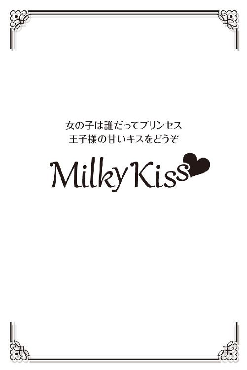

| 恋雪華 (Milky Kiss) | |
| 寺山かれん | |
| 株式会社パブリッシングリンク (2017) | |

恋 雪 華
寺山かれん
ドアを開けると真っ白な世界が飛び込んできた。
美春はぶるっと体を震わせると、ファスナーを首元まで上げて、ダウンコートについていたファー付きのフードを被る。
手袋を身につけ、小さく息を吸い込み、思い切って外に飛び出した。
冷気が全身を包み込む。頬に当たる雪交じりの風が特に耐えがたく、美春はフードを更に深く被った。
今年は豪雪らしい。まだ一月だというのに、すでに昨シーズンの積雪量を超えたとニュースで伝えていた。
それもそのはず、寒波で連日の大雪。この状態が一週間も続いている。
通りすがりの人々の足は重く、寒さに顔を顰めながら足早にスーパーの中へと入っていく。
顔に風が当たらないように俯いていても、突き刺すような雪が睫に絡んだ。
息を吸うたびに、凍った空気が喉にはりつき、肺がきりきり痛む。
突然クラクションを鳴らされて、美春はびくっと体を竦ませ、立ち止まった。
視界は悪く、フードを被っていたせいもあり、車の音があまり聞こえない。
目の前まで迫っていた車の存在を知って慌てて脇によけた。
スーパーの裏手にまわり従業員の駐車場までついたが、仕事中長時間停めてあった車は雪に覆われ、いかにも寒々としている。
ただ風があったせいで、積雪はそれほど多くはない。
それでもブーツのくるぶしが埋まるくらいの積雪はあった。
開錠して、車に乗り込み、エンジンをかける。
それから、常に車に常備しているブラシを持って、外に出た。
ワイパーは長時間外に車を停めている際、必ずあげている。
そうしないと、ガラスについた雪が溶けて氷と化し、ワイパーがフロントガラスにくっついてしまうからだ。
ブラシでフロントガラスの表面の雪を払うと、下からこびりついた氷が現れる。ブラシの反対側についたゴムの器具でガリガリと削るように氷を削ぐ。
ワイパーを元に戻し、運転席の窓、サイドミラー、後部座席の窓、後ろ......と車をぐるりと一回りして雪を払う。
これより積雪が多い場合は、車の天井にも雪が乗るからそれも払わないといけない。
今日は、薄く被る程度だったので、すぐに車に乗り込んだ。
まだ車内は暖まっていない。
強めにヒーターを設定し、スモールランプをつけてワイパーを動かすと、手袋を脱ぐ。ハンドルに触れると氷のように冷たかったが、構わずにドライブに入れた。
こんな寒々とした日には早く家に帰りたい。
別に家で待っている人もいないが、早く家に帰り、まったりとストーブで暖まりたかった。
車を慎重に発進させる。
ここまで視界が悪いなら、建物もなにもない場所に出れば、ほとんど視界は真っ白、十メートル先も見えない状態かもしれない。
そんな不安を抱きつつ、駐車場から車道に出る。
美春の予感は的中していた。
帰宅ラッシュと悪天候で混んでいた国道を抜け、街とは言えないささやかな繁華街を通り過ぎ、周囲が田んぼだらけになると、吹雪でなにも見えない最悪の状況が待っていた。
道路の片側に防雪柵があっても、今日はあまり役に立っていない。
全てが真っ白、こんな日は最悪だ。
スモールランプからヘッドライトに変え、進むスピードは三十キロから二十キロ、時によっては十キロほどまで落とした。
なにせ、見えないのだ。雪で視界が遮られている状態は、暗闇の中、手探りで歩くような状態と似ている。この先に川があったとしても、崖があったとしてもわからずに落ちていくだけだ。
これほど怖いものはなかった。車の免許を取得してから早六年、猛吹雪は何度も経験しているが、決して慣れるものではない。
緊張から、いやな手汗が滲み、体は自然と前のめりになる。食い入るように前を見て、ごくりと生唾を呑む。
対向車の明かりが見えて、美春はゆっくりとブレーキを踏んで減速させ、両脇に雪があるせいで狭くなった車道を、すれ違えるように左に寄る。
ザクザクと硬い雪を削るような音がしたことから、雪の山に少し突っ込んだのかもしれない。
車道なのか、除雪車が通ったせいで両脇にできた雪壁なのか、こんな天候では境目がわからないのだから仕方がない。
無事に対向車が通り過ぎていったのを見て、またゆっくりと右にハンドルを戻し車を進めた。
ここは旧道にあたるため、交通量がかなり少ない。皆、少し北にある大きなバイパス道を通る。もしかしたら今日みたいな日は大きな道を通ったほうが安全なのかもしれない。
けれど、旧道を通ったほうが近く、道幅は狭くとも信号がなく混むこともないことを知っていれば、自ずと選択肢は決まっていた。
少しだけ視界がよくなってきた。車の中も徐々に暖まってくる。
信号のない十字路を右に曲がると、家が点々と存在している小さな集落を抜けてやっと美春の家がある。
自宅まであと一キロほどまで迫ったとき、不意に目の前の道路の黒い物体が目に入った。
慌てて急ブレーキを踏む。
気を抜いたせいかもしれない。
それほどスピードは出していないつもりでも、強くブレーキを踏んだ衝撃で、体が前方に傾き車は横滑りして斜めを向く。
急なことに美春の心臓は高鳴り、車が止まった後もうまく呼吸ができずに動けなかった。
それほど驚いたのだ。
美春はハンドルに伏せていた顔を上げて、前を見る。
黒い物体、それは人間のようにも見えるが......美春の運転している車は寸前で停まった。轢いていない。
まさか、誰かに轢き逃げされたのだろうか、そう思うと全身から血の気が引いた。
すぐにシートベルトを外し、車から出た。せっかく温まった体は瞬く間に冷え、髪は大きく靡き、雪が頬に張り付く。
近づいてみて、紛れもなく人間だとわかった。黒いコートを着た男性が倒れていた。
「大丈夫ですか!?」
美春は膝をつき、男性の体を不用意に動かさないようにして声をかける。
男性から反応はなかった。黒いコートも、ジーンズも、雪が大量に付着している。
轢かれたにしては血のあとはないようだったが、体についた傷などはこの雪の中判別することは難しい。まして美春は医者でもない。
ぴくりとも動かない男性を励ますように、声を張り上げた。
「今、救急車を呼びますから待っててください!!」
携帯電話は鞄の中にある。それを取りに戻ろうとした美春の足が止まった。
男性が必死に美春のほうに手を伸ばしたのだ。
血の気のない顔、青白い唇がなにか言っている。風のせいでよく聞こえない。
美春は口元に耳を近づけた。
「救急車を呼ばないでくれ......」
「でも......!!」
「寒い......寒い」
よく見ると男性はがたがた震えている。それもそのはず。男性の着ているコートは明らかに薄く、ボタンが外れた隙間から、同じく薄い襟付きのシャツが見える。
こんな吹雪の中、外を歩くにしては、あり得ない格好だった。
そのうえ、靴は革靴。これでは雪の上は滑って歩けない。
雪を知らない人間が着る服装。すなわち、この辺りに暮らす人間ではないということだ。
観光にでも来たのだろうか？
いや、そんなことを考える前に、この状況を早くどうにかしなければならない。
「どこか怪我をしてるんじゃないんですか？」
「してない......どこも......ただ寒い......」
怪我をしていないと聞いてほっと安堵したものの、男性をこのままにはしておけない。
警察に連絡するという手もあるが......この辺に駐在所はない。昔はすぐ側にあったのだが、住む人が少なくなるにつれて、駐在所がなくなり、繁華街のほうに総合駐在所として新しく移転されてしまった。
呼んだとしてもここまで来るのには......この雪ではかなり時間がかかる。
見知らぬ人......という警戒心も頭をよぎったが、彼をこのままにはしておけない。凍死してしまうだろう。
「立てますか？」
男性は小さく顔を動かした。頷いたのか、否定したのかわからない。
美春の車に乗せるためには歩いてもらわなければならなかった。
そう、男性を自宅へ連れて行こうと思ったのだ。今はそれしかない。
美春が腕を掴むと、僅かながら男性が動いた。
「すぐそこにある車まで歩けますか？」
今度は男性が首を縦に振り、緩慢な動きで立ち上がった。
支えていた美春の体に男性の体重が圧し掛かり、思わず歯を食いしばる。
よろけて踏みとどまった足が雪で滑ったが、少しずつ歩いた。
車の側まで来ると、後部座席のドアを開けて、男性の頭を潜らせる。
背の高い彼には軽自動車は窮屈だろうが、我慢してもらうしかない。
男性の体は座席の上に乗り切れずに、下半身は滑り落ちていく。
はみ出た足を無理に押し込み、ふと辺りを見回すと、大きな黒い鞄が目に入った。男性のものなのだろう。それもトランクに積んだ。
運転席に乗り込むと美春は冷たくなった手を擦る。
シートベルトを締めて、ルームミラーで男性の姿を確認する。
車内は十分暖まり、乗り込んだだけでほっとした温もりを感じる。
美春にはそう感じても、男性はまだ寒いのだろう、縮こまって震えている。
すぐに車を発進させた。家まであと僅かだ。
車を玄関に横付けにして運転席から出ると、まずは自宅の鍵を開けて家の中に入り、冷え切った居間を暖めるため、すぐにストーブをつけた。
古い家なので家の中はかなり寒く、外より幾分マシな程度。息は白く、ブーツを脱いだ足が瞬く間に冷たくなる。
部屋が暖まるには時間がかかるため、念のために押し入れから使っていない毛布を持ってきて、ストーブの前に広げておく。
そこにきて、知らない男性を連れてきたことに今更ながら不安が押し寄せてきた。
知らない人を家に連れてくるなど、正気の沙汰じゃない。
でも、誰だって道に倒れている人を見たら放ってはおけないだろう。吹雪の中、もし誰も通らなかったら......気づかれずにいたらと思うとぞっとする。男性は死んでいたかもしれないのだ。
赤々と燃えてきたストーブを見て、まだ寒くはあったがこれなら大丈夫だろうと判断し、男性を連れてくることにした。
外に出ると、幾分風が和らいでいた。ただ降りしきる雪のせいで、視界は限りなく悪い。
後部座席のドアを開け、そっと男性に声をかける。
「大丈夫ですか？」
男性は微かに首を動かす。
美春は男性の腕を取って引っ張る。
「車から降りるので......よいしょっと」
一声かけてから、男性を車から降ろし、支えながら家の中に入った。
男性を玄関に座らせ、靴を脱がせてから、居間に入る。
ストーブの前に座らせたが、男性は己を抱きしめてガタガタ震えるだけだ。
「コートを脱いだほうがいいです」
雪がついたコートは濡れている。濡れた衣服は着ているだけで体温を奪っていく。
男性は震える指をボタンに伸ばした。なかなかボタンが外れない。
見かねた美春が「失礼します」と断りを入れてから、コートのボタンを外し、脱がせた。
すぐに毛布で全身を包む。男性は震えながら毛布を掴んだ。
「まだ寒いけど、もう少しで部屋が暖まります」
あまりにも男性が寒そうなので、美春はもう一枚厚手の毛布を持ってきた。
男性の髪には雪が絡んでいた。襟足の部分の髪に氷がこびりついている。濡れた髪も体温を奪うので、バスタオルを持ってきて男性に「使ってください」と差し出した。
男性はバスタオルを受け取って顔を拭い、それから汗のように流れてくる濡れた髪を不器用に拭う。
もう一枚新しいバスタオルを頭にかけてから、顔が隠れないように頭の上からふわりと毛布をかける。
「まだ寒いですか？」
「だ、大丈夫だ」
歯をガチガチ打ち鳴らしながら男性がやっと口を開いた。
寒そうではあるが、きちんと自分の意思を伝えたということは幾分よくはなっているのだ。
それを聞いてひとまず安堵した。
怪我をしていなさそうだし、この分ではすぐによくなる。
温かいものでも飲めばすぐ温まると思い、キッチンに行きかけようとして、まだ車のエンジンをかけたままだったことを思い出した。
すぐ車に戻り、車庫に入れようとしたものの、車庫の前は吹き溜まりができて車が通れないほど雪が積もっている。
車から降りて、車庫の前の雪をスコップで脇によけ、バックで車を車庫に入れた。
自分の荷物と男性の鞄を持ち、シャッターを閉めて空を見上げた。雪がやむ気配はない。
この降りようでは、一度雪を片付けておかないと明日の朝は大変なことになる。
ふと気になり、隣の家の敷地を覗いてみた。
美春の敷地とは違い、綺麗に片付けられている。
そういえば今日、町のボランティアの人が来て片付けてくれると言っていた。
隣家は老夫婦の二人暮らし、八十歳近い老齢にもかかわらず未だ矍鑠としていて、雪片付けもしているが、さすがにここ連日の大雪で手が回らなくなったらしい。
時間があれば手伝うようにしていたが、美春にも仕事があり、他人の家のことを心配する前に自分の家の敷地の雪を片付けなければならない。それに美春もここ連日の寒波で雪片付けに手が回っていない状態だった。
車が通るだけのスペースだけしか、片付けていなかったのがその証拠だ。
寒さにくしゃみをする。美春は慌てて体を竦ませて家の中に入った。
居間の引き戸を開けると、薄暗い部屋の中にストーブの明かりだけが僅かに反射している。
毛布の山は身じろぎもしていない。
「荷物ここに置きます」
男性の鞄を側に置き、部屋の明かりをつけてカーテンを引いた。
「コーヒーがいいですか？ それともお茶がいいですか？」
「コーヒー。ブラックで」
男性が口早に言ったあと不意に顔を上げた。毛布が頭からずれ落ちる。
幾分温かくなったのか、頬に赤みが差していた。
「本当に助かった」
真摯な表情で言われ、美春は息が止まった。
助けているときは、男性の容姿や年齢など気にもとめなかったが、よく見ると、美春とたいして変わらない若い男性だということに気づく。
真っ直ぐに人を見る澄んだ眼差しと端正な顔立ちが目を引く。
黙って見つめられて、美春の体温が上がる。
頬が赤くなっていなければいいけど、と思いながら目を逸らすと、男性の乱れた髪に隠れるように左耳にずらりと並んだピアスが目に付いた。
さらに視線を落とすと、男性の左の中指にはごつい指輪が嵌っていた。
「いえ......」
それしか言えずに、美春は身を翻して引き戸を閉めた。
あんなに若い男性だったとは......知っていたら、いや知っていたとしても見殺しにはできないだろう。
美春は、子供の頃、よく捨てられた犬や猫を拾ってきた。
可哀想だった。なんとかして助けたいと思った。
捨てられた存在に無条件に弱かったのだ。それにお年寄りや子供といった人たちにも、手を差し伸べずにはいられなかった。
見てしまった以上、知らん顔して通り過ぎることなどできない。
台所に逃げてきて、思い出したようにやかんに水を入れてガスにかけた。
板の目の冷たさに我慢しきれずに、スリッパを履き、マグカップを取り出してインスタントコーヒーの粉末を入れる。
寒さに悴む手を擦りつつ、沸いた湯を注ぎ、スプーンで軽くかき回し、トレイに載せて、少し緊張しながら居間に行く。
そっと男性の隣にトレイを置くと、男性の目がコーヒーではなく、美春の顔に向いた。
なんとなく気詰まりを感じて、美春は「どうしてあんな場所に倒れていたんですか？」と困惑しながら尋ねる。
男性はマグカップを両手で包み込むように手に持ち、二、三度、息を吹きかけてから湯気の立つ熱いコーヒーを啜った。
「タクシーを降りたら辺り一面真っ白。なにかあるだろと思って歩いてたら建物もねえし誰もいなくて、しかもすっげー雪が降ってきて、寒くて寒くて......雪で足を滑らせて転んだら、寒くて起き上がれなくなった」
湯気越しに男性と目が合い、美春も思わず黙って見つめてしまう。本当に目を真っ直ぐに見る男性だ。
美春は脇によけておいた男性のコートを手に取った。するとコートの裾から水がポツリポツリと滴り落ちる。
下に新聞紙を置き、その真上にハンガーにかけて吊るした。
コートがこれなら靴はもっと濡れているはずだ。
「普段は交通量の少ない道で、私は通勤であの道を通るんです」
「感謝してる。あのままいたら死んでたかもしんねえし」
「どちらから来られたんですか？」
「東京」
「東京から？ お仕事かなにかで？」
コーヒーを飲みながらずっと美春の様子を見ていた目が、はじめて泳いだ。
「あー......まあ、一人旅みたいなもん」
真冬に、しかも観光する場所もない田舎を一人旅とは、にわかには信じがたい。
「街のホテルに泊ってるんですか？」
ここから駅の近くのホテルには車で一時間以上......いや、今日のような悪天候はもっとかかる。そこまで行かないと宿泊施設はない。
「いや、ホテルに泊まってない。今日来たばかりなんだ」
ますます変な話だ。ホテルの予約も取っておらず、誰も通らないような真冬の田舎道を凍えそうになって歩いていたのは何故だろう。
訊いてみたい気もしたが、男性はマグカップを見つめ、口を結んでいる。訊かれることを拒んでいるようだ。
重苦しい空気を感じ取って美春は「靴、乾かしておきますね」と居間を出る。
男性に対して酷く敏感になっている自分を感じていた。
田舎にいるような野暮ったい男性とは明らかに違う。服装や顔立ちからしても、垢抜けて洗練されたものを感じる。
玄関に行くと男性の靴についた雪をそっと手で払ってから持った。
ブランドの靴なのだろうか。そういうのに疎い美春が見てわかるほど、かなりお洒落な靴だ。内側も外側も濡れてはいたが、傷はなく履き古している感じではない。
ただし雪道にはまったく無抵抗な履物だ。
雪が降る場所へ旅行に出かけるなら、それなりの格好をして来るのが当たり前ではないのだろうか。
まるで着の身着のまま、ふらっと遊びにきたような感じだ。
美春は、新聞紙を持って居間に入った。ストーブの前に新聞紙を敷いて、その上に靴を置く。
男性はコーヒーを飲み終えていた。
「もっと淹れてきましょうか？」
首を縦に振った男性が、部屋の中を物珍しそうにゆっくりと見回した。
その目が、古い戸棚に飾られているこけしや市松人形を移動して、黒に近い飴色の大黒柱に取り付けられた螺子式の振り子時計で止まる。まだこんな時計を使っている家があるのかといった表情だ。
この家は祖父母の代に建てられた古い家だ。天井は煤け、壁の所々に小さな亀裂が入っている。土壁でできているらしい。
ストーブは去年壊れたので新しいものを買ったとはいえ、他は全て、美春が生まれた当時と同じままの姿だ。
「一人暮らし？」
「いえ、両親と暮らしています。今の時期は千葉へ働きに行ってますけど」
「兄弟は？」
「一人っ子です」
「じゃあ、今は一人？」
「ええ」
美春は空になったマグカップをトレイに載せて台所に行く。今度は二人分のコーヒーを淹れて居間に戻った。
トレイを置きマグカップを差し出すと、男性は小さく頭を下げて受け取る。美味しそうに、二杯目のコーヒーに口をつけた。
美春もコーヒーを飲んだ。たとえインスタントでも体に熱いコーヒーはとても美味しくて、思わず満足げな息が漏れる。やっと一息ついた。
「この辺に泊まる場所ってある？」
美春は即座に首を横に振った。口ぶりからして、彼は泊まる場所をリサーチせずに来たのだ。
「ないです。駅周辺でしたら何軒かありますけど......ここからはかなり遠いです」
男性の目が窓の周辺を彷徨う。カーテンの奥を透かして見て、思案しているような顔つきだ。
「そっか......どーしよー、俺行くとこない」
嘆いて男性はがっくりと肩を落とした。
いい提案もなくなにも言えずにいると、男性は突然顔を上げて美春を縋るように見つめる。
「俺をここに置いてくんない？」
驚いて目を丸くする美春に対し、男性はぐっと体を近づけてくる。反射的に体を引いた。
「もう暗いし、こんな時にどっか行けって言われたら、俺死ぬ」
立て続けに言う男性に、美春は困った顔をする。
「俺はあやしいもんじゃない。これ」
男性は財布を取り出して、免許証を見せた。
ゴールドの免許証を受け取り、写真と実物を見比べる。
名前は南直虎。下の字は、なおとら、と読むのだろうか。珍しい名前だ。
生年月日を見て、二十四歳の自分よりひとつ年下だと気づく。
「そっちは？」
免許証まで見せられた以上、名乗らないわけにはいかない。
「遠藤美春です」
「お願い、頼む」
両手を合わせて拝むような姿勢の男性......直虎を見つめ、美春は迷っていたが仕方ないと諦めた。
確かに外はもう暗く、悪天候、こんな時に雪を知らない東京の人間が外に出るのは自殺行為だ。
美春は面倒見がいい上に律儀でもあった。
「わかりました......」
「マジ!? やった」
直虎は嬉しそうに笑った。八重歯が覗き、人懐っこい表情になる。
美春はコーヒーを飲み干し立ち上がった。
客人が泊まるとなればそれなりの準備をしなければならない。
大変なことになったと思いながらも、これも人の役に立ったのだからと自分に言い聞かせる。
泊まるといっても一晩だけだろうし、明日にも雪は小康状態になるとニュースで言っていた。
そうなればすぐ帰るだろう。美春は気軽に考えていた。
玄関に取り付けてある郵便箱に新聞が投げ込まれた音で、美春は目を覚ました。
時間は午前四時頃だろう。目を開けて時計を確認せずとも新聞配達のおじさんが来る時間はよく覚えていた。
頬に感じる寒さと、息を吸うたびに感じる空気の冷たさ、それから静まり返った静寂が今朝も雪が降っているのだと示していた。
これは雪国に暮らしている者ならば、外を見なくてもおのずとわかってくる習性だ。
雪が降っている朝はことさら静寂と寒さに包まれる。
美春はうっすらと目を開けて、カーテンをぼんやりと眺め、再び目を閉じる。
昨夜雪片付けをするつもりだったが、結局できなかった。
直虎のために居間の隣の客間に布団を敷き、反射式ストーブを持ってきたり、食事も一人で食べる質素なものとは違い、鍋を作ったりとやることがたくさんあった。
どうせ、明日は仕事が休みだから、と思っていたせいもある。
ただ、本格的に雪片付けをしないと大変なことになると実感していたので、今日は車を通る部分だけではなく、全ての雪を片付けるつもりだ。
それも直虎が出て行ってからになるが、それがいつ頃なのか聞いていなかった。
欠伸をかみ締めて、毛布を口元まで引き上げる。
その時になってはじめて、美春は違和感を覚えた。
一気に心臓が跳ね上がる。背後に誰かがいるような気がする。
それも布団の中に。
「あったけー」
背後から聞こえる男性の声に、美春は喉から心臓が飛び出しそうになった。
「きゃああ！」
布団の中から逃げようとしたが、背後から体をがっちりと掴まれる。
美春はパニックに陥っていた。
「いやあ！ だ、だ、だ、誰!?」
「動くな。冷気が布団の中に入ってくるだろ」
聞き覚えのある声は直虎のものだった。
「な、直虎さん!? なにやってるんですか、人の布団で!?」
驚いた声をあげて振り向こうとしたが、体を捻ろうにも直虎が背後から腰に腕を回している。
「寒くてしょうがねえから来たんだよ」
「出てってください!!」
怒りと羞恥から、美春の顔は瞬く間に真っ赤に染まった。
「出たら寒いだろ。美春はほんとあったけーなー」
馴れ馴れしく名前を呼び、項に顔を埋めてきたので、美春は必死にもがいた。
「やだっ、離して!!」
「別にやらしいことしてるわけじゃないし、そんなに嫌がることか？」
「いやらしいことです！」
「だって、すっげー寒いんだよ。なんで美春の布団はこんなにあったけーんだ？」
ぶつぶつ文句を言って直虎はますます体を密着させてくる。
昨日会ったばかりの男性......しかも恋人でもない人と一緒に布団の中にいるなんて、信じられない。
美春は肘鉄を食らわせて、這うように布団を出た。
瞬間、鳥肌が立った。いくらフランネルの温かいパジャマを着ても、寒さは防ぎようがない。
白い息を吐きながらぶるぶる震える。
怒りに駆られたまま、美春は自室のストーブをつけた。
部屋が暖まるには時間がかかる。その間、この寒さをどうやって防ぐかだ。
いつもなら、一旦ストーブをつけて、部屋が暖まるまで布団の中で過ごす。
美春は直虎を睨みつけたが、彼はぬくぬくとした布団の中で目を閉じて幸せそうな表情を浮かべている。
直虎を家に連れてきたとき、目を惹く容姿にはっとした。話口調やピアスや指輪などから軽薄な男性かもしれないと一瞬頭を過ぎった。
それでも昨夜、一緒に夕食を食べた際、感じがよかった。
行儀がよく、楽しい客人という感じで、美春は久しぶりに誰かと一緒に家で食事をして、とても楽しかった。
それが、どうだ。
図々しくもいやらしい客人になりさがっている。
寒いなら一声かけてくれればいい。そうすればもう一枚毛布なり羽毛布団を持っていった。
立て続けにくしゃみをすると、直虎が目を開けて「ほら、来いよ」と手招く。
無神経な言葉に「早く出てってください！」と噛み付くように叫ぶと、美春はフリースの上着を羽織り、靴下を履いて、その上から、さらに厚手の靴下を履く。
自室を出て階段を降り、居間に向かった。
靴下を二枚履いていても、パジャマの上にフリースを着ても、冷気はどこからでも体に入り込んでくる。
肩を竦め居間のストーブをつけると、カーテンを開けた。外はまだ暗い。
窓の下の隅に雪がびっしりとこびりつき、氷の結晶が華を咲かせていた。ガラスには空から降る雪の影が映っている。かなり大粒だ。
雪が大きいということは積もりやすい。
かなり積もっている可能性もある。
台所に行き、蛇口を捻ってみる。詰まったような音が聞こえた後、水がちょろちょろと流れてきた。
大丈夫だ、水道管は凍っていない。
毎晩、天気予報で水道管が凍るかどうかのチェックは欠かせない。
古い家なので凍りやすく、マイナス五度を下回るようなときは水を抜くようにはしていた。
美春は、ストーブの前に座り、手を翳し暫く暖を取る。
このままずっとストーブの前にいたら離れられなくなってしまうので、思い切って腰をあげた。
なにをするにもまず着替えだ。
二階の自室に行くと部屋はほどよく暖まっていた。美春は布団に丸まっている直虎の側に立った。
「私の布団から出てください。もう部屋は暖かいですよ」
直虎はもぞもぞと動いたあと「もう少し寝る」ともぐった声で答える。彼がここにいては着替えられない。
大変な男を拾ってきてしまったと美春は後悔し、乱暴に箪笥の引き出しを開ける。
着替えを持って居間に急いで戻り、そこで着替えた。
直虎のことなど知らないと心に決めて、顔を洗い歯を磨き、朝食をとった。
それから、ダウンジャケットを着てマフラーを巻き、帽子を被り耳当てをつける。手袋もスノーボードで使っていた一番厚い手袋を身につけた。
玄関に行くと父親が履いていた男物のゴム長靴に足を入れる。膝まですっぽりと隠れるので、どれほど雪が積もろうと雪が靴の中に入る心配はない。それに圧雪やアイスバーンでもほとんど滑らないから最強の靴なのだ。
本当は出勤もこの長靴を履いていきたいが、そこは人の目もある。
ただ家では、外見はまったく気にしない。おしゃれで雪片付けはできない。
「よし」
気合いを入れて、家の鍵を開けて外に出る。
案の定、外はかなり雪が積もっていた。深いところでは、膝まで届きそうなほど積もっている。
そこに新聞配達のおじさんの長靴の足跡がうっすらと残っていた。
しんしんと降り続く雪だった。
美春は新聞紙を取り、家の中の下駄箱の上に置く。
それからプラスチックのスコップを持ち、玄関前から雪を片付けていった。柔らかい雪は簡単にスコップが刺さるが量はある。
玄関前を片付け終わると、真っ直ぐ縦に車道側に向かって一本道をつける。それから、両脇の雪を片付ける。
ずっと片付けていなかった範囲は、雪が締まって硬い。そこは赤いスノーダンプを使って排雪した。
捨てる場所は、車庫と家の間。ただ今年は豪雪でもう雪を捨てる場所がない。
両脇に申し訳程度に積み上げるだけだ。
動いているうちに体が温かくなってきて、額に汗が滲む。雪片付けは思った以上に重労働。外は凍てつくほど寒いのに、動かしている体は熱く、汗をかく。
一時間ほどして、家の前から道路まで続く庭の雪片づけを終えた。あとは車庫までの距離だ。
今日は車を使わないだろうし、それに昨日車庫の前は少し片付けたおかげで、それほど積もってはいない。
一度家の中に入ることにした。
体についた雪を丁寧に払い、手袋を脱ぎ、帽子を取ると、居間に真っ直ぐ行く。直虎は起きていて、ストーブの前で寝転んで新聞を読んでいた。
まるでずっとこの家に暮らしているかのような寛ぎようだ。
客人だからと大目に見ても、遠慮がない直虎の姿に、むっとせずにはいられない。
暖まっていた居間は熱いくらいで、すぐにダウンジャケットを脱ぐ。
「これからの予定はどうなっているんですか？」
いくら腹が立ったからといって、いつ出て行くのかと不躾に訊けるわけもなく、やんわりと予定を尋ねる。
「どうすっかなー......」
新聞を捲り、直虎はちらっと美春を見た。
「雪はまだ降ってるよな？」
「ええ、積もってますよ」
美春が素っ気無く答えると、直虎は起き上がり、新聞を畳んだ。
「それならもう少しここにいる」
「え？ もう少しって......」
美春は愕然とする。
「あてがあって来たわけじゃねえし。しばらくここにいる」
「ちょっ......困ります!!」
焦って抗議するが、直虎は呑気に答える。
「全然困らねえよ、俺は」
「私が困るんです!!」
言い聞かせるように強く言うと、彼は口を歪めて笑った。
「彼氏が来るとか？」
「違います！ だって、一人暮らしの家に、あなたみたいな人がいるって......」
「俺みたいな男？ 別にいいじゃん。俺は気にしない」
「私が気にするんです!!」
「頭、帽子かぶってただろ？ 髪ぼさぼさ、ほら」
直虎は立ち上がり、絡んだ美春の髪を優しく解した。本当に直虎は背が高く、側に寄られると意識してしまい、咄嗟に後ずさりする。
絶対に美春をからかっているとしか思えない。
「縁があって俺を助けてくれたわけだしさ、美春は優しいじゃん。なら、俺のこと置いてくれても......」
「だめです」
間髪いれずに言うと、直虎はしゅんとしてしまった。
「美春は俺のこと、どうでもいいんだ？」
「そんなこと......」
急に気弱になった直虎に、美春は困惑する。
「だって、俺を追い出したいんだろ？ 俺がまた雪ん中に倒れてもいいって思ってるんだろ？」
まるで美春が酷い人間のような言い草だ。
「そんなこと思ってません」
「だったら、もうちょっと置いてくれてもいいじゃん」
変な理屈をこねて美春の家にいようとする直虎の真意がわからない。
この古い家を見る限り、寒く居心地がいいとは言えないだろう。ホテルや旅館などのほうがよほど暖かく快適に過ごせるというのに。
「他の宿泊施設に行くという手もあるってことを言いたかったんです」
美春が提案すると、直虎は面倒くさそうな顔をする。
もしかして、ただ単に寒い中移動したくないだけなのだろうか。
「金なら払う」
「いりません！ ここはそういう所じゃないんです」
玄関の引き戸が開く音が聞こえた。誰か来たのだ。
「おーい、美春ちゃーん！」
「はーい！」
美春は居間から玄関に向かった。
隣の家に暮らしている老夫婦......小松徳次郎が、衣類についた雪を払って立っている。
腰は曲がっているが、まだまだ元気なお年寄りだ。美春は膝をつき「おはよう、おじいちゃん、今日もすごい雪だね」と迎えた。
「おはよう、ほんとに今年は参るなあ、これ回覧板」
町内を回ってくる青い回覧板を受け取った美春は、徳次郎の帽子の柄がわからないほどびっしりついた雪を見て眉を寄せる。
「電話してくれたら私が取りに行くのに」
「なに、外を歩かないと足が鈍る。っていってもすぐそこだけどな」
明るく笑った徳次郎に、美春も笑い声をあげた。
「雪、大丈夫？」
「ああ、今ちょこっとやってんだけど、昨日人が来てやってもらったからだいぶ楽だよ」
「手伝おうか？」
「美春ちゃんも大変だろ？ 今日仕事は？」
「今日は休み。もうちょっとしたら行けると思う」
「いいって。美春ちゃんも忙しいし、自分たちでできるから」
そう言うと、徳次郎は軽く手を上げて行ってしまった。美春は唇を噛む。
朝の掃除や洗濯がまだ済んでいないが、それは後回しにすることにして、まずは隣家の手伝いだ。
居間に戻り、脱いだばかりのダウンジャケットを着る。
直虎は勝手にコーヒーを淹れて、テレビを見ていた。その自堕落な姿を見てぴんと閃いた。客人扱いはもうやめよう。
「直虎さん、雪片付けってしたことないでしょ？ 一緒にしませんか」
「えー、寒い」
「着込めば寒くないです。きっと楽しいですよ」
毎日雪にうんざりしている美春にとって、雪片付けは面倒ごとでしかないが、都会の人間には新鮮に感じるに違いない。
「楽しいって顔じゃねえだろ」
「ストーブを消してください」
美春は有無を言わさず居間を出て、二階の自室に向かう。直虎がストーブを消しているかどうか、確かめるのを忘れていた。
ストーブは消えていたが、寝ていた布団はそのままだった。
せめて布団ぐらい畳んでおいてくれてもいいのに、どういう躾をされてきたのだろうか。
布団や毛布を畳み、押入れに入れると、台所に行ってガスの元栓が閉められていることを確認する。コーヒーを淹れたということはガスを使ったに違いなかったから。
居間では直虎が文句を言いながらも、あの薄いコートを着ようとしていた。
しかもＴシャツの上にだ。
「ちょっと待っててください」
声をかけて両親の部屋から父親の衣類を漁り、セーターを持ってきた。
「これ、父のですけど、着てください。薄いコートはダメです。それ防水じゃないでしょ？」
「あーなんだよ、まったく」
直虎は背が高かったので父親のものは着られるか不安だったが、きつくても入ったらしい。
「なんかだっせー」
直虎の不満にも耳を貸さずに、父親が着ていた厚手の防寒ジャンパーを無言で手渡す。
「これを着ろって？」
眉間に皺を寄せて心底嫌そうな顔をした直虎に無理やり押し付ける。
文句を言う直虎を無視して、美春は消えたストーブの元栓を捻る。
ガスもストーブも元栓を閉めた。たとえ隣家に行くとしても、火の始末はきちっとしておくに限る。
身支度を終えた直虎を眺めて、意外にも野暮ったく見えないことに驚いた。もっと、もっさりしている姿を想像していたのに。
顔立ちやスタイルがそう見えるのかは知らないが、チラシのモデルでもやっていそうな雰囲気だ。
帽子と手袋も父親のものを渡し、直虎のためにもう一足ゴム長靴を持ってくる。
美春も、完全防備をしてから、一緒に外に出た。
「うおっ、寒っ！」
直虎は肩を竦め、ぶるっと震える。
スコップを直虎に手渡し、家の敷地を出て狭い車道を歩き、すぐ隣家の敷地に入る。
美春の敷地ほど積もってはいないが、それでも片付けるだけの積雪があった。
徳次郎の妻である、とめ子が、スコップを片手に持って背をとんとん叩いている。腰が辛そうだ。
「おばあちゃん！ 手伝いに来たよ！」
声をかけると、とめ子は美春のほうを振り向き、笑顔になる。
「美春ちゃん、おはよう」
「おはよう」
近づいていくと、とめ子の目が美春から後ろにいる直虎にちらちら注がれるのがわかる。
「忙しくないのかい？」
「大丈夫、今日は休みだから手伝うよ。おじいちゃんは？」
「今、家の中に入って一息ついてるよ。美春ちゃんも忙しいのに、ありがたいねえ」
「おばあちゃんとおじいちゃんだけじゃ大変でしょ？」
顔についた雪を拭い、とめ子は見慣れない直虎を見あげ警戒心を抱くどころか、にこにこと微笑んだ。
「美春ちゃんの大事な人かい？」
あり得ない勘違いに、美春は即座に否定する。
「違う、違う」
「随分、背が高い人だね、どのくらいあるんだろうね」
背が小さいとめ子には、その高さは際立ったものに見えたのだろう。
「百八十五」
直虎は美春の後ろで平然と答えている。
「いい男だねえ」
あけすけな物言いに、直虎はふきだして笑った。目を細めて無邪気に笑う直虎を見たのはこれが二度目だ。
「美春ちゃんはとってもいい子だよ。お嫁さんにしたらきっと幸せになれる」
「おばあちゃん！」
誤解が解けないまま進む話に美春は焦った。
「ああ、そうだろうな」
あながち適当とも思えない声で直虎が答える。
不毛な会話が続きそうなので、美春はすぐに話の矛先を変えた。
「どこから片付ければいい？ 奥のほうやろうか？」
「ああ、そうしてくれたら助かる。おじいさん！ 美春ちゃんが手伝いに来てくれたよ！」
徳次郎が家から出てきた。
「いいって言ったのに」
そう言いつつも徳次郎は嬉しそうだ。
「そちらさんは？」
徳次郎は直虎を見て不審そうな顔をした。
「南直虎。美春の家に居候してる」
やましい者ではないとばかりに直虎は堂々と自己紹介した。
「虎？ 虎夫？」
珍しい名前なので、聞き取りづらかったらしい。
「おじいさん！ 除雪車が来たよ！」
「おお、そうか」
話は後回しになり、徳次郎が道路の左右を窺った。
美春と直虎も道路まで出て、大きな黄色の除雪車が来るのを確認した。
「また道が狭くなるね」
右からものすごい騒音と共に、道路に積もっている雪を削ぐようにこちらに向かってくる。
「そうだな。でもこの雪じゃ、除雪しないわけにはいかないだろ」
通り過ぎた後は、家の前の通路に大きな雪の塊や板のような硬い雪が残された。
これを片付けるのはかなり苦労する。
降り積もる柔らかい雪とは違い、道路に圧雪された雪を削り取ったものなので硬く重い。
お年寄りにはかなり辛い仕事だ。
「こっちは、私たちがやるから任せて」
美春は自ら申し出て、硬い雪にスノーダンプを押し込む。
「悪いな。じゃあ、若いもんに任せようか。ばあさん、奥を片付けよう」
「あいさ」
二人が行ってしまった後、直虎は雪にスコップを突き刺した。ところが、硬い雪にプラスチックのスコップは上滑りをしてまったく歯が立たない。
「ちょっと待ってて。ステンレスのスコップがあるから持ってくる」
美春がスノーダンプから手を離すと、かわりに直虎が持った。
「じゃあ、俺がこれで......重い！ 刺さんねー。なんつー雪だ」
直虎は足でスノーダンプを蹴って押し込もうとするが、硬い雪はびくともしない。
「無理に押し込まなくても......少しずつ手前からやっていったらいいよ」
美春は家に戻り、車庫からステンレスのスコップを持って戻る。
角度を変えてスノーダンプを雪に差し込もうと苦戦している直虎の側に行き、ステンレスのスコップを雪に突き立てる。
すると、大きな塊の雪は二つに割れ、スノーダンプの中に転がった。
「この雪はどこに持っていったらいいんだ？」
ずり下がってくる帽子を押し上げ、直虎は雪で視界が悪い周囲を見回す。
どこもかしこも雪だらけなのは、美春の家と......いや、もうどこの家も一緒だ。
「そこに小さな道がついてる」
徳次郎の家と道路の間にはかなり距離がある。家が奥に引っ込んでいるのだ。
そこに雪をうずたかく積んであり、スノーダンプを持って歩いた跡がついている。
「この上に持っていくのかよ？」
驚きの声をあげつつ、直虎は勢いよく雪の山を登っていく。その頂上でスノーダンプを傾けて雪を捨てる。
バックで戻ってきた彼は「こんなの年寄りがやってたら死ぬぞ？」と顔を顰める。
都会の人にしてみれば、そう感じるかもしれないが、ここでは生活の一部であり、当たり前。
自分がやらなければ、他に誰もやる人がいないお年寄りにとって、やらざるを得ない重労働なのだ。
スコップを適度に刺し、ザクザクと雪を刻んでいた美春は「代わる？」と訊く。
「俺がやる。女じゃ無理だ」
「私はいつもやってるんだよ。このくらい慣れてる」
「だめだ」
頑なに首を横に振って、直虎は美春が細かく切っておいた雪にスノーダンプを差し込む。
小気味いい音と共に、奥まで簡単に刺さった。
その上に、美春が遠慮なくスコップで雪を載せていく。
「あー！ 上に載せるな！ 重くなる！」
直虎は悪態をつき、すぐにスノーダンプを引いて、捨てに行く。
大変な作業は直虎がやってくれるので、美春は楽だった。
除雪車の雪を片付け終わり、ついでに、すぐ隣の美春の敷地の除雪車の雪を片付けることにした。
「お前んち、どこも捨てるところがねえだろ。どうすんだよ」
立てたスノーダンプに寄りかかって、直虎は美春の家の周りを見た。
「どうするって言われても、しょうがないから、脇に寄せておくしかない」
「あそこは？」
直虎が指差した場所は車庫の前だった。雪片付けを中途半端にしていたせいで、そこが雪を片付けなくてもいい場所のように思われたのだ。
「車が通れなくなっちゃう。車庫の隣にでも捨てるしかないけど......」
直虎は一人、スノーダンプで雪を削りながら車庫の辺りに行き、おもむろに側にあったスコップを手に持ち高く降り積もった雪を突きはじめた。
「どうすんの？」
美春は直虎の側に行く。
「ここの雪山にじいさんちみたいに斜面を作って、その上に捨てる。それしかねえだろ」
直虎は黙々と体を動かして斜面を作っていく。
その間、美春は車庫までの雪を脇に寄せておく。
それから先ほどのように、二人で除雪車の雪と脇に寄せたておいた雪を片付けた。
「暑い。むちゃくちゃ暑い」
直虎は帽子を脱ぎ、髪を振って前髪をかきあげた。それから防寒ジャンパーのファスナーを下げて前を開けた。
「脱いだら寒いよ。汗が冷えて体によくない」
「暑いんだよ」
「薄いの持ってこようか？」
「いい」
直虎は徳次郎の家に早くも移動しようとしている。美春もすぐに後に続いた。
雪がさらに降りしきり、風も少し出てきた。視界がかなり悪くなる。
天気予報は今日には雪が小康状態になると言っていたのに外れた。
「じいさん、ばあさん、もう家の中に入れ！ あとは俺たちがやる！」
徳次郎の敷地は、美春の家より幾分広い。美春たちが雪を片付けている間に進めていたにしても、まだ残っていた。
「この寒さの中、汗はすぐ拭くかなきゃ風邪をひくよ」
とめ子は自分の首に巻いていたタオルを解き、直虎の額に浮いていた汗を拭い、彼の首に巻きつける。
直虎は微笑んだ。
「サンキュ。もう家の中に入ってろ」
とめ子は徳次郎と顔を見合わせる。
「美春ちゃん、いいのかい？」
徳次郎に訊かれて、美春は頷く。
「うん、大丈夫」
「虎夫、あんまり無理しなくていい」
一瞬、虎夫とは誰のことかと思ったが、すぐに直虎のことだと理解した。どうやら、徳次郎は直虎を虎夫と間違えて覚えたらしい。
「だーいじょうぶだって。俺らまだ若いし」
直虎は訂正することもなく、笑顔を見せて元気よく答えた。
吹き付ける風に、徳次郎ととめ子は目を瞑って背を向ける。
「ほら、体に悪いって、行った行った」
直虎は徳次郎ととめ子の背中を玄関のほうに無理やり押した。
「美春ちゃん、きりがいいところでやめていいから」
「わかった」
二人が家の中に入ったのを見て、直虎は目を細める。
「さあて、もうひと頑張りか」
「そうだね」
美春と直虎は立ち尽くし、積もった雪を眺める。
無言のまま、直虎はスノーダンプで雪を片付けていく。
美春は直虎がやりやすいように雪を脇にまとめた。
そうして、無心で体を動かしているうちに、綺麗に雪は片付いた。
この雪ではまた夜には積もるかもしれないが、今できるのはこれだけだ。
直虎と顔を見合わせて、ほっと一息ついていると、家から徳次郎が出てきた。
「二人とも！ 中に入っていけ！」
風で掻き消えないように大声で叫んだ声に誘われるように、美春の足は自然と徳次郎の家に向かった。
その後を直虎がついてくる。
徳次郎の家は美春の家よりさらに古く、一歩中に足を踏み入れると広い土間がある。
とめ子もいて、美春の体についた雪を手で払ってくれた。
「全部、終わったよ」
帽子を取って雪を払い、手袋も脱ぐ。
「大変だっただろう？ ありがたいねえ。もうお昼だよ。中に入って暖まっておくれ」
「もうそんな時間なのか？ そういや、腹減ったかも」
直虎も首に巻いたタオルを取り、それで体の雪を叩き落とした。
「そうだろ、そうだろ。ばあさんが昼飯を準備したから」
「そんなことしなくてもいいのに」
困った顔でどうしようかと悩んでいると、徳次郎は顔を皺くちゃにして笑顔で迎え入れた。
「お前さんたちがいなかったら、二人で余していたところだ。助けてもらった礼だ」
「じゃあ、遠慮なく」
直虎は、早くも長靴を脱いで家の中にあがっている。
そうなると、美春も帰るわけにもいかず、遠慮がちに長靴を脱いであがった。
居間に入るとむっとした熱気に包まれる。ストーブで暖められた室内は、体を動かして汗をかいていた美春や直虎にとって暑すぎる。すぐにダウンジャケットを脱いだ。
直虎は、セーターまで脱いでいる。中央にあるこたつには入らず畳の上に座ったが、直虎はまだ暑いのかTシャツを手で摘みぱたぱたさせていた。
とめ子が台所から、はたはたの田楽、蒟蒻や大根、人参、椎茸の煮物、それからあれはキャベツとイカの酢の物だろうか、他にも沢山の料理を持ってきてこたつの上に並べていく。
ご飯や味噌汁、手製の白菜の漬物などが並ぶ頃には、もうこたつの上は置く場所がないほどだった。
見ただけで、二人をもてなすために作ったのだとわかる。
「おばあちゃん、こんなにも......」
申し訳ないような気分になった美春に対し、直虎は素直に箸を持ち、手を合わせた。
「うまそう、いただきまーす」
茶碗を持つなり、がつがつと食べはじめた。
「ばあちゃん、うまい」
「いっぱいお食べ。おかわりあるからね」
とめ子は嬉しそうに顔を綻ばせている。
「美春ちゃんも食べな」
徳次郎に促されて、美春は箸を手に持ち「いただきます」と挨拶してから味噌汁に手を伸ばした。
とめ子が一人でここまで料理するのは大変だっただろう。それなのに、上機嫌でご飯を頬張っている。
「大勢で食べるご飯はおいしいね」
そう言っては直虎や美春を見つめていた。
「二人で暮らしてんの？」
美味しそうに白菜の漬物を食べて、直虎はご飯を大口開けて食べながら訊く。
「ずっと二人暮らしだよ。息子は東京にいるけどね。もう何年も帰ってきてない」
苦笑して答えるとめ子は寂しそうに見えた。
「ひでーな。こんな雪じゃ、なにかと不便だろ？」
「そうだね。でもボランティアの人もいるし、それに美春ちゃんがいっつも手伝ってくれるんだよ。ありがたくてね、涙が出る思いなんだよ」
直虎が隣の美春を見つめる。美春は赤くなった顔を見られないように俯いた。褒められることはしていない。困った人を助けるのは当たり前のことだ。
「美春はいい奴だよ。俺もほんとにそう思う」
前とは違う心が込められた優しい声に、思わず美春は顔を上げる。
直虎と目が合い、恥ずかしくなって目を伏せた。
「虎夫は見る目があるよ。こんな彼女がいたら幸せだ」
「ああ、俺は幸せ者だよ」
調子に乗って、直虎は美春の肩を引き寄せた。顔を顰め、調子に乗りすぎた直虎のわき腹を肘でつついた。
「で、虎夫はどこの人だ？」
急に気づいたように徳次郎が訊いた。本当に今更すぎる質問だ。
「東京」
「東京の人か!? どうりで都会の顔をしてると思った」
「都会の顔ってなんだよ、じいさん。顔なんてどこだって一緒だろ？」
「違う、違う。よその顔立ちしてるんだよ」
「よその顔って......人種が違うみたいじゃねえか」
「美春ちゃんはいまどき感心な子だよ。仕事が休みの日はご両親の手伝いをしてね、こんな可愛くて健気な子なのに、まだ嫁に行かないのが不思議なくらいでね」
感心したように言うとめ子に、美春は「おばあちゃん、もういいったら」と苦笑して話をやめさせようとする。ところが、直虎はニヤニヤしながらとんでもないことを言い出した。
「じゃあ、俺が貰ってやるよ」
美春は咳き込んだ。もうやめてほしくて「ストップ」と苦しい声をかける。
ところが、聞こえていないのか「親御さんに紹介はしたのか？」と徳次郎は話をどんどん進めていった。
「まだだ。嫁に貰うとは言ったけど、すぐじゃ早すぎだろ」
「甘い。早く紹介したほうがいい。結婚にはタイミングってもんがあるんだよ。それを逃すと難しくなる。ばあさんとの時だって、一目惚れして、すぐ結婚を申し込んだ」
「すぐ？ じいさん、意外と行動が早いんだな」
「ばあさんはそりゃもう村一番の別嬪でな。今でも別嬪だけど、もう他にいい人がいるんじゃないかと焦ったんだよ」
「いやだよ、おじいさん」
二人はこの年になっても仲睦まじく、見ていて羨ましいくらいだった。
直虎も同じことを感じたのか、二人を見てぽつりと呟いた。
「じいさんとばあさんは、ほんと仲がいいんだな」
「まあな。これだけ長い間一緒にいると、いやなこともいいことも全部愛しくなる」
「マジで惚れてんだな」
「別嬪だっただけじゃなく、働き者だった。そんなばあさんに惚れないわけがないじゃないか」
「働き者か......」
「美春ちゃんも働き者だ。それにたいそう親切だ。料理も時々持ってきてくれるんだよ。それがまたうまくてな。こんな人を手放したら、絶対に後悔するぞ」
「おじいちゃん、直虎さんとは......」
もうやめてほしいとばかりに口を挟むものの、直虎がまたさらに余計なことを言う。
「料理は確かにうまかったな。ばあさんの手料理もうまいけど」
「虎夫は口がうまいねえ」
虎夫で定着してしまった直虎はとめ子ににっこりと笑いかける。
「顔と口のよさが俺の売りだから」
「それだけじゃないだろう？ 虎夫も美春ちゃんと同じ、優しい心の持ち主だ」
直虎から笑いが瞬く間に消えた。かわりに苦々しい表情があらわれる。
「俺は......全然優しくねえよ」
「美春ちゃんが選んだ人が、冷たい人間のはずがない」
はっとしたように直虎は息を呑み、持っていた茶碗を置き黙ってしまった。
「どうした？ いっぱい食べておくれ」
箸を止めた直虎をとめ子は不思議がる。
「美春が選んだ人間か......」
呟き、緩く頭を振ったかと思うと、直虎は蒟蒻を箸で器用に掴んで口に放り入れた。
それから何事もなかったかのように「ばあさん、飯お代わり」と空になった茶碗を差し出す。
「はいよ。美春ちゃんもお代わりは？」
「あ、私はいい」
直虎と違って、美春はそんなにも食べられない。
「東京でも雪は降るのか？」
「たまーにな。さすがに積もるだけは降らねえけど。でも、ちょこっと雪が降っただけで電車は止まるし、けが人続出、大混乱」
「雪を知らなきゃ当然だろう」
「けど、ここに来て、雪の大変さを思い知って、東京の騒ぎようが馬鹿みたいに思えた。だって、ここじゃこれが当たり前なんだもんな」
「積もった雪は大変だろう？」
「ああ、こんなにも大変だとは思わなかった」
和やかに徳次郎と直虎が話をする。その横で、美春は目の前に並べられた料理を次々と平らげていった。
とめ子も言っていたが、大勢で食べるご飯は美春にとっても久しぶりだった。
だからなのかもしれない。こんなにも食事がおいしかったのは。
茶碗にご飯を盛って戻ってきたとめ子も徳次郎も上機嫌で、そんな二人を見ていると直虎を連れてきてよかったのかもしれないと思いはじめていた。
話が弾んだせいもあり、すっかり長居してしまった。
「じゃあな、じいさん、ばあさん、なにかあったら隣なんだし遠慮なく言えよ」
「ごちそうさまでした」
時計はもう午後の二時をまわっていた。
「もう帰るのかい？ もっとゆっくりしていけばいいのに」
とめ子は玄関まで見送りに来て残念そうな表情を浮かべる。
「また来るからよ」
直虎は軽く手をあげて、玄関を開ける。
「お、雪はやんでるぞ」
曇り空ではあったが、雪は降っていなかった。
「ごはんおいしかったよ、おばあちゃん。ありがとう」
「また来てちょうだい」
直虎が先に出たので、美春が玄関を閉めた。
外に出ると一気に体が冷える。
「じいさんもばあさんも元気だな。ありゃ百歳まで生きるぞ」
「そうだね。ずっと元気でいてほしい」
徳次郎の敷地を出て、狭い車道を歩いていると、ふと直虎が立ち止まった。
「美春んちとじいさんが暮らしてる家はすぐ隣だけど、ほかの家とは離れてるんだな。三百メートルはあるか」
真っ直ぐに伸びる道路の先に美春の左隣の家が見える。
「うん、田んぼの間に家が建ってるから。これうちの田んぼなんだけど」
「米作ってんのか？」
「そう。昨日食べて美味しくなかった？」
「うまかった」
直虎は素直に笑って答える。
家の中に入ると、数時間ほど前に暖まっていた室内は完全に冷え切っていた。すぐにストーブをつける。
直虎が三度くしゃみをして鼻をすすった。
「寒い？」
「ああ、少し」
ストーブの前で手を翳す直虎の隣に美春も座った。
「なあ、美春は生まれた時からずっとここで暮らしてんの？」
「うん、二十四年間、ずっと」
「二十四？ もしかして年上？」
「年上」
「年上か。で、男はいない、だろ？ じいさんとばあさんの口ぶりからして、わかった」
指摘されてむっとする。
「別に関係ないじゃない」
直虎はなぜか嬉しそうにしているので余計腹が立った。
「アタリだな。仕事はなにしてんの？」
「お菓子屋さんで働いてる」
「菓子屋？」
「ここから車で三十分ほどいったところにある、スーパーの中に入ってるお菓子屋さんの販売員。ケーキとか季節によっては和菓子もあるかな。あとはお土産用の箱菓子とか」
「楽しい？」
「楽しいよ。ケーキとか見てるだけで食べたくなっちゃうけど。直虎さんは東京でどんな仕事をしてるの？」
「俺？ 俺はまあ......たいしたことじゃねえよ」
直虎の口が途端に鈍くなる。そういえば、前も仕事のことを尋ねたとき、彼は目を逸らした。
言えないような職種というのは、どんなものだろうかと頭を巡らせながら、思い切って訊いてみた。
「どんな職種？ 会社勤めって感じじゃないよね？」
「まあ......なんだ......フリーター？ つーか......ニート？」
働いていないから言えなかったという可能性もあったことに今気づいた。
ニート、イコール引きこもり、とは一概に言えないかもしれないが、あまり感心できることではない。
「ニート......」
初対面の人にも堂々としていたし、雪片付けのときは積極的に動いていたから、ニートとは思えなかった。
直虎は、気まずそうにしている。
仕事をしていない理由があるに違いない。仕事をしてないからといって、彼の性格に欠陥があるとは限らない。
もしかしたら自分を変えたくて一人旅を考えたのかもしれないし。
「コーヒーでも飲む？」
重い沈黙を破るために、美春は優しく訊いた。
「飲む」
即答した直虎はほっとした様子だ。
台所に行き、コーヒーを淹れ、トレイに載せて居間に戻る。
直虎はストーブの前で寝転んでいた。顔を窺うと、目を閉じて眠っている。はじめて雪片付けをして疲れたのだろう。
美春は、隣の部屋から毛布を持ってきて、そっと直虎の体にかけた。
ぎすぎすしていた雰囲気はもうなくなっていた。
「直虎さん、ご飯」
夕食の支度を終えて、美春は眠っている直虎の体を静かに揺すった。
午後六時過ぎ、辺りはもうすっかり暗く、部屋の明かりをつけ、カーテンを引いている。
直虎は深い眠りについているのか身じろぎもしない。
「直虎さん？」
再度声をかけると、ゆっくりと目が開かれる。
そこで美春は直虎の様子がおかしいことに気づいた。
不自然に赤らんだ頬、開かれた目はどんよりとしていて焦点が合っていない。呼吸が速く「寒い」と呟いた声には熱が篭っていた。
もしやと思い、額に手を当ててみると、案の定熱があった。
「大変、私ったら、どうして早く気づかなかったんだろ」
「美春......すっげー寒い」
「ちょっと待ってて！」
慌ててもう一枚毛布を持って来ようと隣の客間を開けて明かりをつけた。押し入れから毛布を引っ張って持ち、居間に急ぎ、直虎の体にかける。
戸棚をかき回して体温計を見つけ、直虎の元へ急いだ。
「これ、口に咥えてください」
直虎は毛布に包まり丸くなっている。反応がなかったので、美春は回りこんで直虎の頬に手を押し当てた。
燃えるように熱い。
「ごめんなさい、直虎さん」
「......なんで謝る」
目を瞑ったまま、直虎が小さな声で答える。
「だって、私が雪片付けなんてさせたから」
「違う。俺が勝手に具合が悪くなっただけだ。情けねえ、これしきのことで熱出すなんて」
「体温を測るよ」
直虎の小さく開けた口に体温計を入れる。
熱を測っている間、美春は客間を暖めるためにストーブをつけ、布団をちゃんと敷き直した。寒いだろうから押入れからさらに二枚毛布を出して増やす。
台所に行って、湯を沸かし、湯たんぽを持ってきた。
慣れない雪片付けをしたから熱を出した。そう思うと自分のせいのような気がして落ち込んだ。
湯たんぽに熱い湯を入れ、柔らかい布で包むとすぐに敷いた布団の中に入れる。
氷枕も準備した。
氷が足りなかったので、外に出て雪を詰める。幼い頃、美春が熱を出したときによく母親が雪を入れて氷枕にした。
口をきつく締めて、枕を退けてタオルを敷いた上に氷枕を置き、またタオルで覆う。
部屋の中は寒くなくなった。布団の中も温まっている。
直虎の側に行き、体温計を口から抜き取ると三十八度五分もあった。
「熱が高い。どうしよう、お医者さん行く？」
「行かない。寝てれば治る」
「本当に？ じゃあ布団に行こう。歩ける？」
「歩ける」
ふらつきながらも直虎は立ち上がった。寒いのか毛布を巻いたままだ。
隣の客間まで行き、毛布を剥いだ。
「着替える？」
「このままでいい。面倒だ」
直虎はそのままの格好で布団に潜り込む。
「おかゆを作ってあげる。それから薬を飲んでね」
「食欲ない」
熱い息を吐き出して、直虎は辛そうに目を閉じた。
「食べなきゃだめ。薬も飲めないし。寒くないようにストーブはつけておくから」
美春は毛布を引き上げて直虎の肩の隙間を埋めてから、客間を出た。
手っ取り早く炊いたご飯からおかゆを作っていく。卵とわかめを入れたものが我が家の定番だ。
それに豆腐とねぎの味噌汁も添える。
一緒に薬と水も載せて持っていくと、直虎は重い瞼を上げて美春を見たが、すぐ目を閉じて寝入ろうとする。
「起きて。ちゃんと食べて体力をつけないと」
鬱陶しそうな唸り声をあげて聞こえない振りをする直虎に向かって、無理やりではなく、あやすような優しい声で続ける。
「食べたら元気が出るはずだよ。ちょっとでもいいから食べよう」
薄く目を開いた直虎が渋々起き上がる。
寒くないように、毛布を背後からかけて、胡坐をかいた直虎の膝の上にトレイを載せる。
直虎はスプーンを手に取ったが、ぼうっとした様子でおかゆをかき混ぜるだけで食べようとしない。辛抱強く見守っていると、直虎はゆっくりとした動作でスプーンを口に運んだ。
一口食べて、驚いたようにおかゆをしばし見つめた後、いつもようにがつがつと食べはじめた。
味噌汁も飲み干して「うまかった」とトレイを返されて、ほっと安堵する。
「食欲があるなら、すぐによくなるね」
ずるずると布団に潜り込もうとする直虎に、すかさず薬と水を手渡した。
きちんと薬を飲んだことを確認して、直虎に手を貸し、布団に寝かせる。
「俺......今まで、風邪なんか引いて、寝込んだことねえから、こういう状態大嫌い。すっげーみっともねえ」
途切れ途切れに言って、直虎は美春から隠れるように口元まで毛布を引き上げ、背を向けた。
「誰だって弱くなるときってあるでしょ？ 気にしない、気にしない」
毛布をとんとんと軽く叩き、トレイを手に持ち立ち上がった。
引き戸を開けて出て行こうとすると、背後から小さな声がかかる。
「美春は......変わってる」
足を止めて振り向いた。
「え、変かな？ 私はごく普通のつもりなんだけど」
「いい人間すぎるんだよ」
「それって変なの？」
「変じゃねえけど、東京じゃあり得ねえ」
「ここは田舎だから、皆助け合って生きてる。それは悪いことじゃないでしょ？」
部屋の戸を閉めて、美春は苦笑した。
東京に暮らしている直虎からしてみれば、美春の接し方が意外な優しさのように思えるのだろう。
よくよく考えると、確かに人がよすぎるかな、と思う部分はある。
見ず知らずの人を家に連れてきて、その上看病するなんて、田舎の人といえども誰だってするわけじゃない。
ほっとけなかった美春の性分だ。
一人で夕食を食べ、お風呂に入る前に一度直虎の様子を見に行った。
ぐっすり眠っていたので、客間のストーブと部屋の明かりを消して、お風呂に入った。
お風呂からあがると洗濯を済ませ、少し時間は早かったが明日も仕事なので寝ることにした。
直虎が苦しんでいないかもう一度確認してみる。
彼は何度も寝返りを打ち、うなされていた。
膝をついて、額に手を押し当てる。まだ熱は高い。
首筋に手を当ててみて、びっしょりと汗をかいていることを知り、すぐ台所に行く。
洗面器に湯を入れて持ってきて、タオルを濡らす。きつく絞り、直虎の首元から汗を拭った。
一度着替えたほうがいいような気がしたが、なにに着替えさせればいいか悩んだ。
スウェットの上下なら去年美春が父親に買ってあげたものがある。父親は気に入らなかったのか、結局一度も着てくれなかったものだ。
下着は、気が引けたが、直虎の鞄の中をかき回して見つけた。
直虎の鞄に入っていた服はすべて薄着だったことは言うまでもない。
「直虎さん、着替えよう」
夢現にいるようなぼんやりとした目を開けた直虎は、美春をおぼろげに見つめる。
なにを言われたかわかっていないのだ。
「ちょっとの間、起きてね」
直虎を無理やり起こして、スウェットと下着を差し出した。
「汗をかいてるから、着替えなきゃ」
直虎は美春と服を交互に見つめる。
動こうとしない直虎に対し、美春は勇気を奮ってTシャツを捲りあげた。首を抜いてから両手を強引に引き抜いた。
恥ずかしがってる場合じゃない。
素早くタオルで汗をふき取り、直虎の鞄に入っていたTシャツを着せてその上からスウェットを着せる。
次は下だが、これはさすがに美春にはできない。
直虎はぐったりしていたが、美春がしていたことを見て察し、ジーンズのファスナーをさげた。
美春は見ない振りをして、布団を剥ぎ、湿ったシーツをとった。新しいシーツを敷いて、何枚もの毛布や布団を被せる。
直虎が着替え終わったのを察して、振り向いた美春は布団に入ろうとする彼に手を貸した。
「喉、渇いてない？」
緩慢に頷いたので、台所から水を持ってきた。
すべて飲み干した直虎の首元を、もう一度タオルで拭いてから、氷枕に頭を載せた。
氷枕は溶けかかってはいたが、まだ硬い。一晩は持たないが、あと数時間は持つ。
着替え終えた衣類とシーツをすぐに洗濯し、ほうっと息をついた。
直虎の元へペットボトルに水を入れて持っていく。
これで今夜の看病は終わりだと思ったが、気になってなかなか枕元から動けない。
美春が寝ている間に、魘されて苦しんでいたら、どうしよう。
考えたら離れられなくなってしまうので、美春はやるべきことはやったと自分に言い聞かせて立ち上がる。
二階の自室に行き、布団を敷いて寝る。
直虎のことを考えているうちにうとうとして少しは眠ったが、二時間も経たないうちに目が覚めた。
こうなると眠気はちらとも差さない。
パジャマの上にフリースを着て、階下に降りる。
居間に入り、客間を開ける。小さな明かりをつけ、直虎の側に屈み、額に手を当てた。
熱はまだあったが、直虎はぐっすり眠っている。
氷枕を指でつつくと、たぷんたぷんと揺れた。中は完全に水だ。
直虎を起こさないように頭を抱えて持ち上げ、氷枕を取る。
長靴を履いて、外に出た。
氷枕に入っていた水を少しだけ残して捨て、中に雪を詰める。
手がかじかみ赤くなった。寒さに体がぶるぶる震える。それでも構わずに、雪を掴み氷枕に入れた。
氷枕がほどよく膨れると家の中に入り、直虎の元に行き、優しく頭を持ち上げて氷枕を敷く。
「み......はる？」
直虎が掠れた声で名前を呼ぶ。熱に浮かされた声に胸がざわついた。
「どう？ まだ辛い？」
汗で額に張りついた髪をかきあげて訊くと、直虎はその手を掴んで、潤んだ目で真っ直ぐに美春を見つめる。
「大丈夫だ......明日の朝にはよくなる」
「なにかして欲しいことがあったら言って」
掴む直虎の手が熱い。
乾いた唇を舐め、直虎は目を閉じて呟いた。
「いまどき、美春みたいな女っているんだな......」
睫が震えるたびに揺れる影にしばし見惚れる。直虎がいい男だということに美春はちゃんと気付いていた。
「もし、雪に倒れてた男が俺じゃなくても、美春は連れてきたんだろうな。俺だけが特別じゃないんだよな......なんか妬ける」
一人ごとを言って、直虎は眠りに落ちた。
美春は掴まれた手を解けず、困ったように直虎を見つめていた。
結局直虎のことが心配で、客間に毛布を持ち込み一緒に部屋で夜を明かした。
翌朝、寝不足のままキッチンで朝食と弁当を作る。
昨夜は雪が降らなかったようで、雪片付けは必要なく、それだけは助かった。
弁当を作り終えて、おかゆを作りながら、朝食のトーストを食べていると、のっそりと直虎が現れた。
「大丈夫？」
美春は直虎の側に駆け寄り、背伸びをして額に手を当てる。
随分顔色がいい。肌は湿っていたが熱はなく、美春を見る目がしっかりしている。
「ああ、よくなった」
はにかんで笑った直虎に、胸が不意に高鳴る。触れた手を急に意識してしまい、慌てて手を離し、距離を置く。
「そんな格好じゃ寒いから居間にいて。すぐおかゆができるから」
「の前にトイレ」
直虎は寒さに身を屈めてトイレに向かう。その足がぴたりと止まった。
振り向き、眩しい笑顔で美春を見つめる。
「ずっと看病してくれてサンキュ。嬉しかった」
照れくさかったのか、すぐに背を向けてトイレに行ってしまった直虎の背中を、美春は惚けたように見つめ、はっと我にかえる。
自分がなにをしていたのか忘れ、おかゆを作っていたのだと思い出したが、頭がぼうっとしている。
直虎があんな風に笑いかけるから、美春はドキドキしてしまった。
顔がいいのは知っていたが、あの笑顔は反則だ。
トイレから出る音がし、居間に向かって足音が遠ざかる。
美春は火を消し、できあがったおかゆを茶碗に盛り、その横に味噌汁を添えた。
居間に持って行くと、直虎は背中を丸め、ストーブの前に手を翳している。
「毛布に包まってなきゃだめ。寒いでしょ」
「そんなでもない」
トレイを下に置いて、隣の客間から直虎が寝ていた毛布を一枚引っ張ってきた。直虎の肩に毛布を広げてかける。
彼はすでに、下に置いたトレイを引き寄せて熱いおかゆをおいしそうに食べていた。
「昨日とは雰囲気が違うと思ったら化粧してんだな」
美春の顔をちらちら見ながら、直虎は味噌汁をすする。
仕事が休みの日は化粧をしない。出かけるときも薄く化粧をする程度の美春は、昨日一日すっぴんだった。
「そんなに変わる？」
意識しないようにぶっきらぼうに言うと、直虎は顔を近づけた。
「俺は素顔が好きかも。化粧も悪くねえけど」
突然、そんなことを言う直虎をまじまじと見つめ、数回瞬かせてから眉を寄せた。
「すっぴんのままじゃ仕事できないでしょ。接客業なんだから」
「色白いからあんま変わんねえと思うけど」
聞き捨てならない台詞だ。
「化粧しても変わらないっていう男性って大概失礼」
憤慨しながら、腰に手を当てて、直虎を見下ろした。
「俺にとっちゃ褒め言葉なんだけどな。化粧で厚塗りしている女ほど、素顔は信用してねえよ」
「直虎さんの周りの女性がそういう人たちばかりだったからでしょ。私は違う」
「ああ、違う。まったく違う。だからいいんだ」
美春は軽く咳払いして、気を取り直した。
「今日は、家で大人しくしていること。寝てなさい」
「了解」
スプーンを咥え、直虎は挙手の礼をする。ふざけた態度にむっとしたが、言い返すことはせずに続ける。
「お昼は、おかゆの残りと、味噌汁があるから。鯵も焼いたし」
「わかった」
直虎とずっと話している時間はない。
後ろ髪を引かれる思いで美春はダウンコートを着て、弁当と鞄を持った。玄関に向かった背後からスプーンを持ったまま直虎がついてくる。
「何時に帰る？」
「仕事は五時までだけど、そのあと買い物してくるから六時過ぎると思う」
ブーツを履き、マフラーを首に巻いて振り向く。
「ストーブだけは気をつけて、ガスの元栓も。それからなにかあったら電話して」
紙に携帯電話の番号を書いて、直虎に渡した。
「薬は毎食後三回だから、飲み忘れないように」
「口煩い嫁さんみたいだな」
「心配で言わずにいられないんだから、しょうがないでしょ」
手袋を身につけ、車の鍵を持つ。
「はいはい、わかってるよ」
「じゃあ」
背を向けた瞬間、いきなり腕を掴まれ、振り向きざま頬にキスされた。
呆気に取られていた美春に向かって、直虎は無邪気に手を振る。
「いってらっしゃい」
油断していると直虎はすぐに調子に乗る。勝手に美春の布団に入ってきたことといい、今といい、女性に対して気安すぎだ。
羞恥なのか怒りなのかわからないまま睨み付ければ「ほら、時間」と直虎に笑顔で促された。
一言言うにも今は時間がない。
掴まれた手をほどき、急ぎ足で車庫に向かった。
仕事から帰ってくると、直虎はすっかりピンピンしていた。
熱もあがらず、咳も出ず、そのまま完治したらしい。すごい治癒力だ。
どうやら今日、寝ていたのは午前中だけで、午後は普通に起きていたらしい。しかも暇を持て余して、隣家に遊びに行ったというのだ。それでよく熱があがらなかったものだと思う。
それから、驚くべきことがもう一つあった。いや、理解できなかったことと言っていいかもしれない。
直虎は料理をしている美春の側で、関心を引こうとしている子供のように話しながら纏わりついた。
あまりにもうろうろするので、一度ならず邪魔だから居間で寛いでいればと言ったのだが、本人は手伝うか？ などと言い出す始末。
ならば手伝ってもらおうと包丁を握らせたが......ほとんど料理をしたことがない直虎の手は危なっかしく、しかも指を切りそうになって、慌ててやめさせた。
一体彼はどうしたのだろう。熱でも出して頭がおかしくなったのだろうか。
纏わりつく直虎に耐え切れなくなって、無理やり台所から押し出し、美春は黙々と料理を作り終えて、居間に運んだ。
そうしなければ、夕食を作ることもままならなかっただろう。
夕食は鱈のアラを豆腐や人参や大根、ねぎなどの野菜と煮た、鍋のようなものだ。塩味であっさりしているが、野菜のうまみと鱈のダシが絶妙で美春が大好きな郷土料理だった。
直虎が気に入るか不安ではあったけれど、もう彼は客じゃない。
客扱いするには彼は図々しすぎた。
意外にも直虎はうまいと褒め、おかわりして食べていたので、これを機に切り出してみた。
「ねえ、他に行くところはないの？」
美味しそうに食べていた表情が瞬く間にしかめっ面になる。
「あ？ なんで今更んなこと訊くんだよ」
「だって......。どんな理由があって来たかは知らないけど、他にどこか行くあてがあったんじゃないの？」
「ないっつってんだろ」
「家族とか誰か心配はしてないの？」
「してない。メシがまずくなる」
直虎は不機嫌になり、それ以上話そうとはしなかった。
たとえ、ニートでも心配している家族はいる。直虎の口ぶりからして、もしかして無断で家を出てきたのではないかと、美春は考えていた。
それなら今頃大騒ぎになっているはずだ。
「こんばんはー！ 美春、いるか？」
玄関先から聞こえてきた声に、どきっとする。
直虎は美春のほうをちらとも見ずに、鱈のアラを解してうまく食べることに集中していた。
口元を軽く拭い、箸を置いて立ち上がる。
この声は元カレの声に違いなかった。
案の定、帽子を被り、ジーンズに長靴を履いた田沢健一郎が立っていた。
「久しぶり」
美春が微笑むと、健一郎も帽子を取って笑った。
「気になって様子を見に来た。今年の雪はすごいもんな」
別れてからもこうして家に来てくれるのは、この時期、美春が一人で家にいることを知っているから。心配で様子を見に来てくれるのだ。
別れたのは一昨年なのに、去年も頻繁に訪ねては排雪を手伝ってくれた。
今年ももう二度、訪問してくれている。
「もう雪はいらない、ほんといやんなる」
「あと一ヶ月の辛抱だ。来月に入ったら雪は少なくなる」
「それを期待したいんだけど......今年はちょっと怖いな」
友人から恋人へと発展し、別れたあとも友人として付き合いが続いていた。
いがみあったり、傷つけあって別れたわけではないので、自然と友人に戻った感じだ。
だから、こうして穏やかに話ができる。恋心はもうない。
「でも、雪綺麗に片付けてるじゃん」
健一郎の目が不意に直虎の靴に向く。
明らかに男物のしかも洒落た靴は、美春の父親のものではないと一目でわかる。
直虎は彼氏でもなんでもないのだし、慌てることもないのだが、なんとなく気まずい。
「誰かいるのか？」
訊かれ、美春は引き攣った笑みを浮かべた。
「......知り合いがちょっとね」
別れてから美春に彼氏がいないことを健一郎は知っている。美春もまた健一郎に恋人がいないと感じていた。いたら家を訪ねてくることはしないだろう。
「誰だよ」
突然背後から肩を抱かれて、美春は飛び上がった。
直虎が険しい顔つきで健一郎を睨みつけている。
見せつけるように美春を胸元にひきつける行為は、まるで自分の女と言わんばかりだ。
美春は、こんなことをされる覚えはないとばかりに身を捩って直虎から離れる。
「彼は友人なの」
美春が素っ気無く言葉を返したものの、二人にその言葉が届いているように思えない。
直虎は敵意を隠しもせずに「なんの用？」と無愛想に言い放った。
「美春が心配で見に来た」
いつも人当たりがいい健一郎が、愛想の欠片もない憮然とした表情で直虎に強い眼差しを向けている。
こんな顔をはじめて見た美春は、びっくりすると同時に、二人が今にも言い争いをはじめるのではないかとはらはらしながら口を挟んだ。
「雪は多いけど、なんとかなってるから大丈夫」
ところが、健一郎は聞いていない様子で「付き合ってる相手なのか？」と遠慮なく訊いてくる。
「違う」
即座に答えた美春に直虎はむっとし、健一郎はほっとした様子だ。
「これからどうなるかわかんねえだろ」
直虎は高々と宣言する。その顔は得意げにも見える。
美春は目を剥いた。なぜ対抗心を燃やしているのか理解できない。
健一郎はぐっと拳を握り締めて、直虎を睨みつけていたが「また様子を見に来る」とだけ告げると、荒々しく出て行った。
「なんてこと言うのよ！ あなたと私は......」
絶対に誤解されたと思い、怒りをぶつけると、彼は美春の言葉を遮って言い返してきた。
「むかついたんだよ！ あの男、美春に絶対気がある」
こんなことも話さなきゃいけないのかと思いながら、美春はため息をつく。
「......もう別れたの」
「付き合ってたのか!?」
「昔の話だってば！」
やましいことをしているわけではないのに、なぜ直虎に言い訳しなければならないのだろう。
「未練たらたらで別れたから、付き纏われてんだろ」
「付き纏われてなんかない。冬になると心配して見に来てくれるの。私が一人になるのを知ってるから」
「随分優しいんだな」
直虎はなにが気に入らないのか、絡んでくる。
「いい加減にして、深い意味はないんだから」
これで話は終わりだとばかりに、美春は居間に戻った。その後を直虎がついてくる。
「別れたなら、もう来るなって言ってやったらいいじゃん」
「善意で来てくれてるの。それに今は普通の友達なんだから、別に家に来たっていいじゃない」
テーブルの前に座り、いざ食事を再開しようと思っても、なかなか箸が進まない。
向かい側に座った直虎は、美春とは違い話を続けながら熱々の豆腐にかじりついている。
「気に入らない」
「......もう一体なんなの!?」
「俺だってわかんねえ。けど、美春が他の男と楽しそうに話してるの見ると、苛々するんだよ」
身勝手な言い草に唖然としたのは一瞬。
まるで嫉妬しているかのようにも聞こえて、うろたえてしまった。
「べ、別に私が誰と話をしようといいでしょ」
直虎は射抜くように美春を見つめる。視線の強さに息が詰まった。
視線をそらして、直虎は大根に箸を突き刺すと、大きな口を開けて頬張った。
緊張感がふっと途切れ、美春は気づかれないように息を吐いた。
一体、いつになったら直虎は帰るのだろう、そう思いながら、美春も重い箸を動かし、食事を再開した。
ところが、直虎はその後も居座り続けた。出て行く素振りはまったくないらしい。
いつ出て行くのか訊くと、すぐ機嫌が悪くなるから、もう訊けないでいる。
ここまで居つかれるとは思ってもみずに、困ってしまった。
ただ、直虎も居候している状態に思うところはあるらしく、毎朝美春より早く起きて雪片付けをするようになった。
それだけではなく、雪が積もるといつだろうと自主的に外に出て片付けをしてくれた。
実際、これはかなり助かった。この時期、男手があるのとないのとでは差が歴然としている。
雪片付けがなくなるだけで、朝の出勤前の時間もかなり楽になった。
しかも、隣家の雪まで片付けていると、とめ子から聞いて、意外にも親切心があるのだと知り、あまり邪険に扱えなくなっていた。
虎夫で定着している彼はすっかり隣家の住人に可愛がられているようだ。
そして、そのまま一週間が経ってしまった。
直虎は長年ずっとここで暮らしているかのように振舞っている。そのくらい、直虎はこの場所に溶け込んでいた。
仕事の休みだったある日曜日、天気がよかったので美春は直虎と一緒に屋根の雪下ろしをすることになった。
自宅の屋根はストーブをつけた熱で、適度に落ちていたが、車庫が積もったままになっている。
一メートルは積もっているようにも見える。
はしごを車庫に立てかけ、スコップを持った直虎が慎重に屋根に上る。美春ははしごが動かないようにしっかりと下から押さえていた。
はじめは美春が屋根に上がると言ったのだが、直虎が危ないから俺が上がると言い張った。
そこまで言うならと、直虎に任せたものの、気が気ではない。
無事屋根に上がった直虎は歓声をあげる。
「おー！ すっげーいい眺め！」
子供のようにはしゃぐ直虎が心配で、下から声を張り上げた。
「大丈夫!?」
実は屋根の雪下ろしが一番危険だ。屋根から落ちて怪我をしたり、雪に埋まって酸欠で死ぬ人が多い。
だから屋根の雪下ろしは絶対に一人でしてはいけない。
「ああ、大丈夫だ。雪がすげーな。よくこれで屋根が潰れなかったな」
「滑るから気をつけて！」
「美春こそ、屋根の下にいるなよ」
屋根の上から次々と雪が落ちてくる。
それを少し離れた場所で見ていた。内心、直虎が屋根から落ちるのではないかと気を揉む。
直虎は屋根の雪下ろしなんてしたのは、はじめてだろうし、それに屋根の上は思った以上に滑りやすい。
下からは屋根の上があまりよく見えないので、美春は終わるまで待つだけだ。
時折声をかけることも忘れない。
三十分も経った頃だろうか「終わったぞー」と上から声があがった。
車庫なので面積は狭い。怪我もなく順調に終えたようだった。
てっきりすぐ降りてくるのかと思っていれば「美春も上がってこいよ」と言う。
ぐずぐずしていると、直虎が屋根の上から顔を出して叫んだ。
「見晴らしがいいぞ！ 来いよ！」
高いところは苦手ではないので、はしごをしっかりと押して雪の中に固定し、試しに上がってみる。
苦手ではないといっても、上ってみると高さに足が竦んだ。
「高い！ 怖い！」
怯えてへっぴり腰の美春の腕を直虎が笑いながら掴んだ。
「見ろよ」
恐る恐る足元から周囲に目を向けてみる。そこには、いつも見慣れているはずの景色とは別の世界が広がっていた。
見渡す限りの真っ白な銀世界。遠くには雪化粧した山々の雄大な姿がはっきりと見える。
青い空に雪の白さが映えて、素晴らしい景色だった。
「こんなのはじめて見た」
恐怖感は吹き飛んでいた。
「ここは周りが山だらけなんだな」
直虎が周囲を見回した。つられて美春も首を巡らせる。
「盆地だからね。積雪も多い」
「屋根の雪下ろしも毎年やってんのか？」
「ううん、去年は雪が少なかったからしてないけど......雪下ろしなんてもう何年もしてないかも。今年はさすがにすごかったから」
「俺がいて助かっただろ」
誇らしげに......というより、偉そうに腰に手を当てている直虎は、まるで子供のように無邪気だ。美春は苦笑しつつ、正直に頷いた。
「......まあね」
「だろ。俺は美春に拾われてよかったんだよ」
図に乗りそうな気配に、美春は早々に切り上げる。
「さて、降りよう」
美春は後ろ向きでゆっくりとはしごに足をかけた。
「ちぇっ、そこは俺に感謝してもよくね？」
「はいはい。助かってるよ。ありがとう」
「全然、心がこもってねえ」
はしごに足をかけてみたものの、いざ降りようとするとものすごく恐怖感がわき上がってくる。
「降りるほうが怖いかも。足が滑りそう」
びくびくしながら降りようとすると、直虎が真面目な顔で止めた。
「待て、美春。俺から降りる」
「え、いいって」
「よくない。俺が先に降りれば、美春になにかあった場合、受け止めることができるだろ」
「はしごが倒れても雪だからあんまダメージ受けないかもよ」
「それでもだ。交代しろ」
「......わかった」
意外なところで、フェミニストぶりを発揮する直虎に面食らいつつ、譲った。
直虎がはしごに足をかけると、少し動く。咄嗟にしゃがみはしごを掴んだ。
「サンキュ」
直虎が笑い、一度だけ下を見る。そして慎重に降りていった。
「よし、いいぞ」
降り立った直虎は下ではしごを掴んでいる。
美春は直虎が下で待っているという安心感もあって、あまり恐怖を感じずに降りることができた。
「なあ、スキーとかソリがあれば車庫のほうから滑れるんじゃねえ？」
「できるよ。でもまだ急すぎるからもっと傾斜を緩くしないといけないけど。昔はお父さんに作ってもらってソリとかミニスキーでよく遊んだよ」
「マジ!?」
「うん、昔遊んだソリくらいはあるかも」
「持って来い」
「......遊ぶの？」
笑いを噛み殺しながら訊くと、直虎は当たり前だと大きく頷いた。
「もったいねえだろ？」
「庭じゃ狭いよ。滑ってもすぐにぶつかる。土手に行けば長い斜面があるよ。子供たちとかいっぱい遊んでる」
「ここから遠いのか？」
「車で十五分ぐらいかな」
直虎に期待に満ちた目で見られて、美春は言うんじゃなかったと後悔した。
結局、美春は直虎と一緒に土手に遊びに行くことになった。
ソリはあったが、もう古く煤けていて所々欠けていたので、行く途中、ホームセンターで大きなソリを二つ買った。
そう、二つも。美春はいいと言ったのに、直虎が美春の分もと勝手に買ってしまった。
軽自動車の助手席に、背の高い直虎、後部座席には無造作にソリが乗せられている。
車がこんなにも窮屈に感じたのははじめてだ。
直虎はホームセンターでソリの他に、帽子や手袋など防寒具を沢山買い込んで準備万端。上機嫌で鼻歌を歌いながら、車の窓から流れる景色を楽しんでいる。
直虎がどこかに出かけるのはこれがはじめてだ。
大通りに出て、橋があるほうに向かい、そこから右折すると川原に下る道路がある。
駐車場とも言えないただ雪を踏み固めただけの広々とした場所に車が乱雑に停めてあった。そこに美春も車を停めた。
「よし、行くぞ」
張り切って直虎は車から出ると、後部座席のドアを開けてソリを二つ持った。
美春は正直恥ずかしく、車から降りたくない。小学生ならまだわかる。いい大人が二人で、ソリ遊びなどあり得ない。
「美春、出ろよ」
直虎は車から出ようとしない美春を追い立てるように、フロントガラスを叩いた。
「わかった」
観念して鍵を持ち、車から出る。
帽子を被り、キーロックしてから手袋を身につけた。
相変わらずの好天で、白い雪が反射して眩しい。
空を見上げると雲一つない。どうやら今日はずっといい天気が続くようだ。
人が通って踏み固めた小道ができていて、それに沿って歩いていくと、沢山の人が土手の斜面をソリやダンボールなどを使って滑り降りて遊んでいる場所にたどり着いた。
「おー、結構人がいるな」
直虎の目が嬉しそうにキラキラ輝いている。
ほとんどが家族連れで、お母さんやお父さんが小さな子をソリに乗せて滑っていたり、おじいちゃんと一緒にいる子供もいた。
元気な笑い声で満ちていて、活気があった。
「俺たちも行くぞ」
直虎は土手に向かって走っていく。美春はその後をゆっくりと追った。
どこまでも続く長い土手は、広大な雪の滑り台として最適な遊び場だ。
子供たちは皆各々好きな場所で、楽しそうに滑って遊んでいる。
土手の上は車が通らず、人が歩くだけの細い道路なので、危険もなく誰でも自由に遊ぶことができた。
土手の斜面はとても上りにくい。足が滑ったり、雪に埋まったりする。
しかも上ってみると高く急斜面で、この角度であればかなりスピードがつくだろう。
「上から見ると怖い。急だね。よく平気で滑って......あ、転んだ」
ソリに乗っていた子供が転んだ。すぐに母親が駆けつけて、雪の中に転がった子供を起き上がらせた。
子供は泣いてない。笑顔のまま元気よくソリを土手の上まで引っ張っていく。
「じゃあ、俺から行く」
直虎はソリの上に座った。ホームセンターで一番大きな黒いソリで、ちゃんと座る場所と足を置く場所がある、本格的なものだ。
それでも背が高い直虎は長い足を窮屈そうにして所定の場所に置いている。
準備ができた状態で「背中を押せ」と直虎は前を見据えたまま言った。
表情が真剣だ。それが可愛いようなおかしいような気分になる。
「いいの、大丈夫？」
「ああ」
「いくよ！ それ！」
直虎の背中を押すと、勢いよくソリが斜面を滑り降りていく。
「速！ うわっ！」
雪がならされていないので、凹凸に差し掛かると体が斜めになったが、直虎は雄叫びをあげならもうまく下までたどり着いた。
「最高！ 美春の番だぞー!!」
直虎は興奮した様子で美春に手を振る。
意を決してソリの上に座り、足で位置を調節し、斜面を滑り降りた。
あまりの速さに悲鳴が出る。
突然、窪みに引っかかって体が傾きソリから投げ出された。
「きゃっ！」
横に倒れ、全身が雪まみれになる。雪の上なので怪我はなかったが、堪らなく恥ずかしい。
下では直虎が一人大笑いしていた。
「下手くそ！」
「だって速いし、傾くんだもん！」
美春は立ち上がって、ソリの紐を持って斜面を歩いて下りる。
「体のバランスが大事なんだよ」
得意そうに話す直虎にむっとして美春は言い放った。
「ソリ歴は私のほうが長いから知ってる」
直虎は笑って美春の頭を軽く叩く。
「その割には俺のほうがうまいじゃん」
「次はちゃんと下まで行くもん！」
美春は直虎より先に斜面を上り、ソリに乗った。
よくよく斜面を見ると、美春が投げ出されたところが凹んでいる。
立ち上がって数歩左に寄り、斜面が平らな場所を選んでソリに乗った。
今度は直虎が「行くぞ」と声をかけて美春の背中を押す。
順調に斜面を滑り降りる。途中で何度も体が傾くことはあったが、うまく最後までソリに乗ることができた。
「やったあ！」
美春が喜んでいると、すぐに直虎がソリに跨る。
勢いをつけて、直虎が飛び出してきた。
ところが斜面の一番急な部分に差しかかったとき、突如右に大きく曲がり派手に転んだ。
美春は「ぷっ」とふき出す。
直虎の大きな体はうつ伏せになり、帽子が脱げている。その格好を見ているだけで笑えた。
彼はむっくり起き上がると、顔についた雪を払って帽子を拾い、乱暴な足取りでこちらに向かって歩いてくる。
「笑ったな？」
「直虎さんだって、私が転んだとき笑ったじゃない」
直虎は憮然とした表情で踵を返すと、斜面に向かって一目散に駆け出した。
むきになる姿を見て、笑いを噛み殺しながら、直虎の後を追う。
先に上った直虎は、ゆっくりと斜面を上ってくる美春を待っていた。
三回上っただけなのだが、もう息が切れてきた。
「どっちが先に行く？」
「そっちからでいいよ」
そんな会話を交わしていると、隣にいた五、六歳くらいの男の子が、直虎のソリをじっと見て「いいなあ、カッコイイ」と言ってきた。
直虎は即座に反応する。
「だろ？」
鼻高々に背を反らす直虎は子供そのもの。これではどっちが子供かわからない。
気をよくした直虎はソリに座り「一緒に乗せてやる」と男の子を誘った。
「ほんと!?」
直虎はお尻を後ろに下げて前に男の子を乗せた。
紐を掴み、男の子の体を腕の中で固定する。
「大丈夫？」
不安そうに見つめる美春に対し、男の子は逸る気持ちを抑えきれないようで「行けー！」としきりに歓声をあげている。
「いいぞ、準備オーケーだ」
美春が直虎の背中を押すと、勢いよく斜面を下っていった。
心配して見守る美春をよそに、二人はおおいにはしゃぎ斜面を無事滑り下までついた。
下までたどり着いた二人は喜んで何度もハイタッチしている。
男の子が美春に向かって大きく手を振った。
美春も手を振り返してソリで滑り降りる。もう転ぶことはなかった。
「お姉ちゃんもうまいね」
男の子は笑顔で両手を突き出したので、美春も笑い手を合わせてハイタッチした。
そんなときだった。若い女性が申し訳なさそうに近づいてきた。
「すみません、うちの子が......」
直虎の顔を見るなり、女性の言葉が途切れた。大きく目を見開き、驚いたように息を呑んでいる。
まさか、こんな見栄えのいい男性だなんて、と心の声が聞こえてきそうだった。
「俺のほうこそ悪かったな。怪我させてもいけねえし」
「いえ......」
それきり女性は言えなくなってしまったようだ。直虎を見つめたまま、そわそわして手袋を履いた手で髪を撫で付けたりしている。
美春の胸に、もやっとした嫌な気持ちが広がっていく。
直虎を目の前にすると落ち着かなくなる女性の姿は......なんだか面白くない。
「ママ！ すごい速かったよ！ もっと乗ってもいい？」
男の子は無邪気にせがんでいる。
「ご迷惑でしょ、一回乗せてもらったんだから......」
「俺は構わねえよ」
「ほんと!? やった！」
大喜びで男の子は直虎にしがみついた。
女性は男の子の様子に困惑しながらも、直虎から目を離せないように、何度も見つめている。
「あの......あなたはもしかして......」
女性が口を開いたとき、直虎ははっとした。
「よし、チビ行くか！」
遮るように女性の言葉を無視して、直虎は男の子の手を引く。
「うん！」
二人ははじめて会ったとは思えないほど仲良くソリを引いて斜面を上っていく。
美春も女性がなにを言おうとしていたのか気になったが、小さく頭をさげ慌てて後を追った。
その後も二人は仲のいい兄弟のように、何度も坂を滑り降りた。
直虎も男の子も疲れを知らないように、一心に遊んでいる。
美春は疲れてきて、これを滑り降りたらやめようと思ったとき、急に男の子が「お姉ちゃんと乗りたい」と言い出した。
赤いソリは美春が乗るとちょうどいいサイズではあったが、無理をすれば男の子と一緒に乗れなくもない。
「いいよ、おいで」
男の子を前に乗せて、しっかり紐を持ち、体がずれないか調節していると、突然体が前に動いた。
「ちょっ......直虎さん！」
強引に直虎が美春の後ろに乗ってきた。
「美春と一緒に乗るなら、俺も乗る」
「無理、無理だってば！」
男の子を抱きしめた美春の体が明らかにソリから浮いている。直虎が乗るだけで精一杯......というより、直虎すら許容範囲を超えている。
そんな状態で、直虎は懐に美春を引き寄せて膝の上に乗せて、紐を持った。
「チビをしっかり抱いてろよ」
耳元で囁かれた声にどきっとしている間に、直虎はいきなり蹴って斜面を滑り降りた。
「待って！ きゃー！ きゃー！」
怖さももちろんある。それ以上に、直虎に強く抱かれていることを意識してしまい、ソリや斜面のことまで集中できない。
直虎の体は逞しく、美春は簡単に広い胸の中に収まる。か弱い女の子になったような気分だ。
男物のゴム長靴を履いて雪片付けだってする自分をか弱いと感じたことは一度もなかった。
そんなことを考えていた矢先、体が宙に浮き投げ出された。
腕に男の子を抱いたまま、雪に叩きつけられる。
かなりのスピードが出ていたのだろう。腰を打ったのか動けない。
咄嗟に男の子を見ると、目をぱちくりして美春の腕から無事な姿で立ち上がった。
「大丈夫か!?」
駆け寄る直虎に、男の子は「お兄ちゃん、ヘタ！」と言って笑っている。
「だから、言ったじゃない！ 無理だって！」
美春は上半身を起こして、直虎を睨みつける。
「悪い、いけるかなと思ったんだよ」
美春は直虎が差し出した手を握り締めて立ち上がった。
「あ、ママが呼んでる！」
男の子の母親は帰るわよ、と手を振っていた。
「じゃあね、お兄ちゃん、お姉ちゃん！ また遊ぼうね！」
「ああ、またな」
男の子は元気に母親の元へ走っていく。彼女は美春と直虎を見ると僅かに頭をさげた。
「行っちゃった」
「ガキは元気だよな」
「直虎さんだって」
「俺はもうくたくた。何回滑ったと思う？ 十五はいったぞ」
直虎は大きく息を吐く。
「いったね。私は多分十回も滑ってないと思うけど」
直虎が鼻を啜って周囲を見回した。
「そろそろ帰るか。冷えてきた」
いつの間にか人もまばらになっていた。
空にはいつの間にか雲が出てきて、太陽が陰ると気温がぐっと下がる。
「腹減ったな。晩飯はすき焼きなんてどうだ？」
「牛肉がない」
「帰りにどっかに寄って買ってけばいいだろ」
すき焼きなんて随分久しぶりだ。美春までお腹がすいたような気がして腹部を撫でる。
「いいかも、野菜をたっぷり入れて......」
「あー想像すると余計腹が減ってくる」
「じゃあ、行こうか」
直虎は美春の肩を優しく引き寄せる。
「楽しかったな。今度はミニスキー買って来ようぜ」
緩い土手の斜面では小さい子がミニスキーで遊んでいた。それをちゃっかり見ていたらしい。
「あれは、結構難しいんだよ」
「そうなのか？ 長靴に普通につけて滑ってたじゃん」
美春は直虎が長靴にミニスキーをつけて滑る姿を想像して......おかしくなって笑った。
第一、あれは子供用で、大人の長靴には大きすぎて合わない。
「バランスが難しかった記憶がある。普通のスキーのほうが安定してるよ」
「俺はどっちもやったことねえしな。美春はスキーやったことがあるんだな」
「うん。小学校のときにスキーの授業があったから。今はスノボだけど」
「行くのか？」
「今シーズンはまだ行ってないね」
直虎に肩を抱かれても今は全然嫌じゃない。むしろ、そうされて自然な気がするのは、一緒に楽しい時間を過ごしたから。
「行くときは言え。俺も一緒に美春とスノボに行く」
「ええー!?」
言い合いふざけながら、二人は仲良く車に向かった。
夕食時、すき焼きを食べながら今夜はお酒を飲んでいた。
地元の銘酒だ。お酒をまったく呑まない美春も、この日本酒だけは少しだけ呑める。
熱燗にし、互いに酌をして、直虎が買ってくれた地元のブランド牛に舌鼓を打った。それは美春もはじめて食べた牛肉だった。かみ締めた瞬間肉汁が溢れて蕩けるばかりに美味しかった。
「うめえー！」
直虎に至っては大絶叫だった。
「ここに来てから、料理がめちゃくちゃうまいんだよな」
美春は味が染みこんだ白菜を摘んで小皿に取る。
「中に入ってる野菜は、ほとんどうちで収穫したものだからね」
「自家製か、そりゃうまいに決まってる。もしかして今まで作ってた料理の野菜も全部？」
「もちろん」
直虎はしっかりと野菜をかみ締めて、何度も頷く。
「どうりでうまいはずだ。美春の料理の腕がいいのもあるけどな」
「お世辞を言ってもなにも出ないから」
「お世辞じゃねえよ。美春はいい嫁さんになる。つーことで謹んで俺が受け取るけど？」
「誰があなたのところになんて」
ほろ酔いの美春は、直虎の言葉を深く考えずに軽く受け流した。
直虎は上機嫌で牛肉を頬張った。
「地元の酒に牛肉、自家製の野菜と米、食いもんがうめえし、ここはほんといいところだな」
感慨深げに言って、直虎はお猪口に入っている酒を飲み干した。
美春は徳利を傾けて、お酒を注ぐ。
「直虎さんてちょっと変わってるかも。都会の人って田舎を嫌うじゃない？ なにもないから。けど普通に馴染んでる」
「そうか？ 俺は逆に新鮮。最高じゃねえか、飯はうまい。酒もうまい。人だって人情味がある。俺ここに来てよかった」
直虎はテーブルの上に片肘をつき目をとろんとさせて微笑んだ。
「私だから助けたけど、他の人はどうか知らないんだから。田舎だからって皆いい人ばかりじゃないんだし」
最近ではこの辺も物騒になってきた。つい最近車上荒らしがあり、大騒ぎになったばかりだ。
「んなことわかってるよ。でも......」
直虎は目を伏せて、鼻を擦る。
「......美春はほんといい女だ。料理はうまい、色白で可愛い。性格もいいし優しい」
いつになく褒めるので、美春の顔が思わず火照った。
「今日どうしたの？ お世辞ばっかり」
「だからお世辞じゃねえよ。本心だ。つーか、俺は口説いてんの」
絶句し、急に落ち着かなくなる。
いつものようにからかっているのだと思い、美春は動揺しながら答える。
「ち、ちょっと、やめてよ。酔ってるんでしょ？」
直虎は手を伸ばして美春の手にそっと手を重ねた。
いつも真っ直ぐに見る目が、今は甘く蕩け、まるで美春を誘惑しているかのように見える。
「俺、前に言ったじゃん。美春のこと気になるって。あのときより、ずっともっと気になってる。一緒に暮らしてて楽しくてしょうがねえんだよ。ずっとここにいたい。美春の大事な男になりたい」
重ねた手がぎゅっと握られる。
美春は混乱していた。まさか言い寄られるとは思ってもみなかった。
たとえひとつ屋根の下に暮らしていても、直虎のような派手な男性が田舎に暮らす女性を気にするわけがないと考えていた。
「あのね、直虎さんはいつもと違う環境に身を置いてるから、錯覚してるのかもしれないよ」
慎重に言葉を選んで言ったが、直虎は即座に否定した。
「錯覚じゃねえよ。今日さ、チビと美春と一緒にソリに乗ったじゃん？ 親子みたいだなって思ったら、すっげー胸が切なくなって......愛しくなった。結婚なんて、まだまだ先だって思ってたけどぜんぜん悪くねえ」
直虎は堂々と告げる。その顔には誇らしげな笑顔さえ浮かんでいた。
冗談ではなく本気なのだと知り、美春はうろたえた。
けれど......戸惑いながらも、胸のときめきを感じずにはいられない。近くに寄られると、触れられると、尻込みしまうほどの効果を直虎は持っている。
外見だけじゃない。内面だって一緒に暮らしていたらおのずとわかってくる。
しばしば発揮される彼の優しさは、美春が隣家の老夫婦や子供といった弱者に対する優しさと同じものだった。その上、美春には決して重労働をさせようとしない。
雪片付けを率先してやってくれているのがその証拠だ。
そこまで考えて、美春は彼がニートでいることが不思議でならなかった。これは何度も感じていたことだ。
機嫌が悪くなるのがわかっていたので訊けなかったが、今だったら訊けるような気がした。
美春は直虎の手を握り返し、責めているのではないと、ちゃんと行動で示してから優しく尋ねる。
「......仕事をしないのはどうして？」
直虎の表情が瞬く間に暗くなる。美春から視線をそらして、何度も躊躇いつつ彼は口を開いた。
「......人が嫌になったから」
「嫌になるようなことがあったの？」
直虎はむっつりと黙りこんだ。美春の手を離して、彼は荒々しく吐き捨てた。
「なんか、命令されることがにいやになったんだよ。あーしろ、こーしろって、うるせえし、いっつも誰かに行動を管理されて......」
直虎がかつてどういう状況に置かれていたのか理解できなかったが、人の命令にストレスを感じていたこと。それから、言い方は悪いが直虎はそれらの人たちと向かい合おうとせずに、逃げてきたことが伺えた。
「もしかしたら、直虎さんのことを考えてそんなことを言ったのかもしれないよ」
「はっ、俺のためだって？ 絶対ない」
「......ちゃんと話してみた？」
「話すわけねえだろ」
直虎は完全に他の人を拒絶していた。これでは、相手の本心が永遠にわからないままだ。もしかしたら誤解の可能性もあることを彼は考えたことがあるのだろうか。
「第一......」
言いかけて、直虎は突然言葉を切る。これ以上話したくないといった表情だ。
「ねえ、ボランティアからはじめてみたらどうかな？ 直虎さんは働くことがいやって感じに見えなかったから、人のためになることをやってみたらいいんじゃない？」
「あーボランティアなんて、学生時代に二、三回したくらいだな。まあ、悪くねえけど......」
直虎は言葉を濁らせて、ふうっと息をつく。そして苦笑し酒を一口呑んだ。
「美春って、こういうこともきちっと考えてくれるんだよな。俺の周りじゃ腫れ物に触るかのように皆びくびくして接してるってのに。美春だけは俺のことちゃんと見てくれてる」
熱がこもった直虎の視線に絡め取られるように、美春も目が離せなくなる。
手が触れて、徳利が倒れた音に、体がびくりと震えた。
慌てて徳利を持つと中身は空だった。
「お酒、持ってくるね」
美春が立ち上がろうとすると、直虎が素早く側に寄って手を掴んだ。
手を引かれ、バランスを崩して倒れる。
「きゃっ」
仰向けになった美春の上に直虎が乗ってきた。
「なあ、ニートの俺じゃだめ？」
頬に張り付いた髪を指でそっと梳かれ、美春は怯えたように目を瞑る。
「美春」
名前を耳元で囁かれ、目を開けると、直虎は美春の頬に手を添えてゆっくりと顔を落としてきた。
「待っ......」
唇が塞がれて、言葉も吐息もすべて直虎に飲み込まれた。
直虎の口づけは、胸の底から突き上げるような狂おしいほどの恋しさが渦巻いていた。
久しく感じていなかった、焦がすような切なさが胸を揺らす。この気持ちは恋に落ちるときに感じる、甘酸っぱい気持ちと似ている。
静かに唇が離れ、直虎と目が合う。
「美春を見てると、好きだって気持ちがあふれて、どうしていいかわからなくなる」
「直虎さ......」
今度は直虎に指先で唇を塞がれる。
「そろそろ、さん付けはやめろ。他人行儀だ」
再び口づけが落ちてくる。
直虎に組み敷かれ、キスをされているのにもかかわらず、逃げたいとは思わない。そんな自分に美春は戸惑っていた。
「最後にもう一度訊く、いやか？」
「ニートでも私はいやじゃないけど......でも」
「ならいい。美春はどんな俺でも否定しないと思ってた。やっぱりだ」
嬉しそうに微笑んで、直虎は美春の額に額をくっつけた。
「美春はあったかい。心も体もぽかぽかだ」
優しさをこめた手が頬を撫でる。
お酒のせいかもしれない。けれど、今だけは流されてもいいような気がした。
普段なら、流されてもいいなど、絶対に考えない。貞操観念をしっかり持っている美春は、好きな人以外には触れられたくなかった。キスも許さない。
そこまで考えて、美春は自分の気持ちに今気づいた。
気づかないうちに直虎に惹かれ、好きになっていたのだ。
気恥ずかしい朝になった。
昨夜一緒に布団の中で過ごして、朝も一緒にお風呂に入ったのだから今更という感じはするが、こうして改まって向かい合って朝食を食べるとなると、また別の恥ずかしさがある。
「なあ、美春」
「なに？」
「しょうゆ」
俯いたまま箸を置いて、しょうゆを直虎に手渡す。
「美春」
「なに？」
「砂糖」
「砂糖なんてなにに使......」
顔を上げて問うと、直虎はほっとしたように笑った。
「全然こっちを見ねえから、怒ってんのかと思った」
「怒ってないよ」
「じゃあ、後悔してる？」
「......してない」
考えたのは一瞬だけ、すぐに首を横に振った。
「なら、なんで俺のこと見ないんだよ」
「恥ずかしいから......」
消え入りそうな声で告げると、いきなり直虎は嬉しそうに笑った。
「美春は、ほんとさ、純で可愛い。なんか堪らねえ。今すぐ押し倒したくなる」
「これから仕事！」
「わかってるよ」
直虎はにやにやしながら味噌汁を飲んでいる。
美春だってこんな気持ちになったのは久しぶりで、何度も頬が緩みそうになった。
これから仕事だというのに、直虎のことばかり考えそうだ。
「今日はいつもの時間に帰ってくる？」
「うん、そうだね。天気もいいし、道路が混んでなければ早く帰ってこられるかも」
美春は朝食を食べ終えて立ち上がった。もう出勤する時間だ。
「俺が洗っとく。時間ねえだろ？」
「ありがとう、助かる」
鞄と弁当を持ち、居間から出ると、直虎が後ろからついてきた。
欠伸が出そうになり慌てて口を押さえる。寝不足もあって今日は使い物にならないだろう。
それに......なんだか仕事に行きたくない。ずっと直虎と一緒にいたかった。
こんなことを考えている時点で、いつもの自分じゃないとわかる。
たとえ、風邪をひいて熱があったとしても、美春は必ず出勤する。
自分が休むと他の人に迷惑がかかるとわかっているから、どれほど体調が悪くても休むことができないのだ。
まるで美春の考えを読んだかのように、直虎が背後から抱きしめた。
「行かせたくねえ」
直虎からは石鹸の匂いと、コーヒーの匂いがする。それから直虎自身の肌の匂いも。
昨夜、顔をうずめ、しがみついた直虎の肌は、お日様の匂いがした。ずっと包まれていたい暖かな匂い。
「でも、行かなきゃ」
「真面目だよな。ずる休みなんてしたことねえだろ？」
「ないね。あるの？」
交差した腕を解いて美春は振り向く。
直虎はキスをして答えなかった。あるに違いない。
「行ってくるね」
後ろ髪を引かれる思いで、ブーツに足を入れる。
「直虎さん......じゃなく、直虎が夕飯作ってくれたら助かるんだけど」
慣れない呼び捨てに、はにかんで言うと、直人は面映そうに鼻を擦った。
「主夫になる気はねえよ。美春が主婦になるなら別だけど」
「私はならないよ。結婚しても働くつもり」
言ってしまってから、まるで直虎と結婚を前提にした言い方のように聞こえて、はっとした。
まだ始まったばかりの恋は見えないことだらけなのに。
直虎が変なことを言うから悪いのだ。
「別に美春がそうしたいなら俺は構わねえよ」
へへへと笑って、彼は再度、名残惜しそうにキスをした。
地元でチェーン展開しているスーパーは、安さと地産を売りにしていて、平日でもお客さんが込み合っている。
そんなスーパーの出入り口付近に、美春が勤める菓子屋はある。
菓子折りだけでなく、ケーキなどの華やかな洋菓子も扱っているので、お客さんが立ち止まる回数も多い。
繁忙期で、殺人的に忙しいのはクリスマスから年末年始、それからお盆の時期だ。今はお正月も過ぎてしまったので比較的余裕がある。
売り場の隅で美春はビニールの袋に、フィナンシェを詰めてリボンで止めるという作業を行っていた。
ところがぼんやりと行っていたせいで、五本入れなければならないものを四本しか入れていなかったり、逆に入れすぎたりと集中力を欠いていた。
考えてしまうのは、直虎のことだった。
彼が仕事をしていない事情についてはそれほど深刻に考えていない。今まではそうだったのかもしれないが、これから頑張ればいいのだから。
問題は直虎が東京住まいということだ。
今は一緒に暮らしているが、こんな生活がいつまでも続くわけがない。
直虎は必ず東京に帰る。そうなれば当然会えなくなる。遠距離恋愛は正直不安でならなかった。
「ただいま、休憩から戻ったよ」
昼の休憩から同僚が戻ってきて、美春ははっと顔を上げる。ぼんやりと考えごとをしながら仕事をしていた。
「お帰り。フィナンシェ売れたから作っておいたよ」
詰め終えたフィナンシェをショーケースの上に綺麗に並べる。
「あ、ありがと。お客さんいっぱい来た？」
「ちょこっとね、今は空いたけど」
出したリボンをくるくる丸め片づけていると、同僚は美春の隣に並び声を潜めた。
「美春、なにかあった？」
「え？」
「今日ぼんやりしてるし......それに昨日見ちゃった」
「なにを？」
「背の高い男性を連れて買い物してたでしょ？」
顔を上げて同僚を見つめる。彼女は意味深な顔で笑った。
疚しいことはないのに、見られていたのかと思うとなんだかばつが悪い。
「昨日、あの店で卵が安い日だったでしょ。仕事帰りに寄ったの。そしたら、美春がお肉のコーナーのところで、めちゃくちゃ格好いい男の人と一緒にいるじゃん。声かけようかなって思ったんだけど、いい雰囲気だったから、かけられなかった」
美春は顔を赤らめた。あの時は、互いの気持ちを伝え合う前のことで、傍目に見てわかるほど、親密ではなかったはずだ。
「彼、どこのなんていう人？ なーんか似てるんだよね」
「誰に？」
「美春は雑誌見ないでしょ？」
「見ないね」
「今日持ってきてたかな。あ、あった。これ、ほら、ナオトに似てない？」
周囲にお客さんがいないことを確認して、彼女は鞄から女性雑誌を取り出して開いた。美春も通り過ぎるお客さんを気にしつつ、視線を雑誌に向ける。
そこには人気急上昇という見出しと共に一人の男性モデルが載っていた。
ナオトという名前で活動している人らしい。
顔を見て驚いた。
「この人......」
「ね、似てない？」
美春は雑誌をひったくるようにして持ち、顔を近づける。
髪は直虎より短い。けれど顎のラインや目、鼻、口の形、全てが似すぎていた。
笑ったときの人懐っこい表情や、真っ直ぐすぎる視線はまさしく彼と一緒。なにより、ほくろの位置まで同じだった。
そっくりというより似すぎている。
「このナオトって人の苗字は？」
雑誌を凝視しつつ尋ねる。
「さあ？ ナオトってだけしかわかんない。似てるよね」
「そ......うだね」
上の空で返事を返しながら、美春の頭の中は混乱していた。
「すみません。このケーキください」
横からお客さんに声をかけられて、慌てて雑誌を閉じる。
「いらっしゃいませ」
心は千々に乱れていたが、強張った笑顔で押し殺した。
帰ったらすぐに直虎に訊かなければならない。
もし、ニートではなくモデルだとしたら、直虎は美春を騙していたことになる。
家を出るときは、仕事に行きたくない、直虎と一緒にいたいと思っていたのに、今は家に帰りたくなくて、彼と向き合うのが怖いような気がした。
すぐに問いただしたい気持ちももちろんある。それ以上に真実を知ることが怖かった。
直虎が嘘をついていて、美春を騙していたとしたら......少しずつ築き上げてきた信頼も愛情も吹き飛ぶ。
前方を注意しながら車を運転していた美春は、胸に巣くうもやもやを紛らわせるように短い息をついた。
あのモデルが直虎ではない可能性だってある。美春はそれを信じたかった。
無事家までつき、車庫に車を入れてエンジンを切り、車のキーを持った。
ところが最悪のことばかりが頭に思い浮かんで、なかなか車から降りることができない。
ハンドルの上に突っ伏して目を閉じる。
考えすぎて頭の中がごちゃごちゃしている。
会いたいのに、会いたくない。
訊かなきゃならないのに、訊けない。
こんな状態のままで、直虎と向き合えない。変なことを口走る前に一度頭を整理したかった。
ところが、そうこうしているうちに、直虎が家から出てきたのだ。
車の音を聞きつけたのだろう。
美春の姿を見つけて、嬉しそうに駆け寄ってくる。その幸せそうな笑顔を見ただけで、体が強張った。
平気な顔なんてできない。
美春は意を決し、車から降りた。
「どうした？ なかなか車から降りてこないから、なにかあったと思った」
「直虎」
真っ直ぐに直虎を見据える。
写真のモデルと重なって見えるのは気のせいだと思いたかった。
「ニートだってほんと？」
直虎から笑顔が消えて心配そうな表情になる。美春の様子がおかしいことに気づいたようだった。
「......どうした、なにかあったのか？」
「今日同僚から雑誌見せられて......直虎に似た人が載ってた」
完全に直虎から表情が消えた。
「直虎は、ナオトっていうモデルじゃないよね？ 違うよね？」
否定して欲しい、縋るような気持ちで訊く。
直虎はきつく口を噤み、視線をそらした。
「どうして......なにも言ってくれないの？」
反論しないのは、肯定しているからだと思いたくない。
笑い飛ばして、違うと、否定すると願っていたのに直虎は、嘘がばれて苦りきった表情そのものだった。
否定しようがない事実をつきつけられて、美春はショックを隠しきれず直虎に詰め寄った。
「どうして......言ってくれなかったの？」
微動だにしない直虎は、美春を見ようともしなかった。
「ニートだと言えば、後腐れなく別れられるから？ だから隠してた？」
「違う!!」
強く否定して直虎は、美春の体に触れようとする。
「やだ、触らないで！」
身を捩って逃げた美春の腕を、直虎は強引に掴んだ。
見あげたら涙が零れた。直虎は悲痛な面持ちでぐっと唇を噛んだ。
「私は......直虎を信頼してた。好きだったから、一緒にいたいと思ったから、体まで委ねた。それなのに......」
嗚咽を押し殺しながら言うと、直虎は掴んだ腕に力を込め「俺は......」と逡巡した様子で口を開いた。
「美春のことが好きだから言えなかった」
「騙してたってことでしょ！」
「騙してない！」
「なら、なんで言ってくれなかったの？」
そのときだった。
「美春ちゃん？ 虎夫？」
スコップを片手に徳次郎がゆっくりと歩いてきた。
声が隣の敷地まで聞こえていたらしい。
美春は咄嗟に顔を背けて涙を拭った。
「どうした？ こんなところで二人とも」
徳次郎は不思議そうに尋ねる。直虎は薄着のまま、防寒服すら着ていない。
気まずくて横を向いたまま顔を上げることができない美春に対し、直虎は「なんでもねえよ」と苛だたしげに言い放ち、強引に家に向かおうとした。美春は乱暴に手を振りほどいた。
直虎が振り向き、睨み付ける。美春も負けてはいなかった。
向き合ったまま一歩も譲らない二人を見て、徳次郎は事情を察したらしい。
「二人とも、なにがあったかは知らないが......」
「なんにもねえって言ってんだろ。美春、来い」
美春は伸ばした直虎の手を頑なに拒み「少し考えたい」と強気で言った。
徳次郎は直虎と美春を交互に見つめていたが、ややして「美春ちゃん、うちに来たらいい」と促した。
「じいさん、余計な真似すんな」
怒る直虎を徳次郎は一喝する。
「虎夫、少しは頭を冷やせ！」
「部外者は口出しするんじゃねえよ」
徳次郎と直虎が言い争いをはじめてしまった。
耐えられなくなって「やめてよ」と悲痛な声で止めに入る。
「おじいさん！ どこですかー！ 御飯ですよ！」
ちょうどいいタイミングで、とめ子の声が聞こえた。姿の見えない徳次郎を探しているのだ。
「美春ちゃんも一緒においで」
徳次郎に優しく背中を押され、美春は素直に頷く。
「おい！」
慌てる直虎を無視して、徳次郎の後をついていった。
背後から直虎が悪態をつく声が聞こえていたが、それ以上強引な真似はしないようだ。ついてくる気配はなかった。
玄関先では、とめ子が心配して徳次郎の姿を探している。徳次郎が歩いてきた姿を見つけてほっとした表情を浮かべた。背後からついてきた美春の姿を見つけて頬を綻ばせる。
「美春ちゃんの家にいたのかい？」
「ああ、悪かったな」
「仕事帰り？ お疲れ様、寒かったろう」
温かい笑顔に迎えられて、美春は泣きそうになった。「ただいま」と思わずとめ子に抱きついてしまった。
「おや、まあ......」
とめ子はなにも聞かずに、美春の背中を静かに摩った。
温もりと優しさに包まれ、涙が滲む。
「家の中に入ろう。外は冷える」
徳次郎の言葉に、美春は顔を上げて小さく頷いた。
家の中に入ると、とめ子は甲斐甲斐しく美春の世話を焼いた。
「美春ちゃんは座っててちょうだい。お腹すいただろう？ 今夕飯を持ってくるから。その前に温かい甘酒でも飲むかい？」
「おばあちゃん、そんなことしなくても......」
ダウンコートを脱ぎかけた美春が慌ててとめ子を止める。
ところが、とめ子は聞いていない様子で嬉しそうに台所へと行ってしまった。
「ばあさんは、誰かの世話を焼きたくてしょうがないんだよ」
徳次郎は、着ていた防寒服を脱いでハンガーにかけると、邪魔にならないように脇に寄せておいた美春のダウンコートを手に取った。
「あ、私やるから」
「ま、俺もばあさんと同じようなもんだがな」
笑って言うと徳次郎はささっとハンガーにかけてしまった。
「はい、美春ちゃん、熱いから気をつけてね」
湯飲みに湯気の立つ甘酒がたっぷりと注がれている。
麹のいい匂いを吸い込み、二、三度息を吹きかけてから、口をつけた。
「おいしい」
お米と麹で作る昔ながらの甘酒は、美春の母親もよく冬になると作ってくれた。
「よかった。それを飲んで温まってちょうだい」
とめ子は再びいそいそと居間を出て行った。
申し訳なく思い「おばあちゃん、私これ飲んだ帰るから」と声を張り上げたが、返事はない。聞こえていないようだ。
しばらくして、沢山の料理を乗せたお盆を持って、とめ子が入ってきた。
こたつのテーブルの上にもう一人分の料理が並べられていく。
かれいの煮つけとほうれん草の胡麻和え、きんぴらごぼう、なめこの味噌汁と手製の赤蕪の千枚漬けと、おいしそうなものばかりが並んだ。美春が大好物の人参の子和えもあった。
「こんなことしてもらわらなくてもいいのに......」
「いいんだよ。遠慮しないで食べなさい」
「なんか......ごめんなさい。迷惑かけて」
深く頭をさげると、とめ子は労わるように笑った。
「いいの、いいの。ご飯を食べてゆっくりしていきなさい」
徳次郎は笑顔で優しく美春の肩を叩いた。
「遠慮しないでいい。美春ちゃんは孫みたいなもんだからな」
おなかがグーグー鳴っている。遠慮はやめて箸を手に持った。
茶碗を手に持ち「いただきます」と言ってご飯を口に運ぶ。
精神的にダメージを受けているのに、ご飯はとても美味しくて箸が進む。
「仕事は忙しいかい？」
隣に座ったとめ子も美春の様子を嬉しそうに見ながら食べはじめた。
「ううん、今はそれほど忙しくない。この赤蕪、おいしいね」
褒めると、とめ子は相好を崩す。
「そうかい？ じゃあ、持っていったらいいよ。今年は漬物がうまくいってね」
「この間食べた白菜のもおいしかったよ」
「あれは虎夫も好きだったね。うちにご飯を食べに来るといつも催促してたから」
美春は箸を止めて顔を上げる。
「......頻繁に来てるの？」
「たまーにだよ」
直虎のことを思い出して、小さなため息をつく。
裏切られて傷ついたはずなのに、今頃直虎はどうしているのだろう、とぼんやり考えてしまった。
彼は料理ができないし、夕飯はいつも美春が作っていた。お腹を空かせているに決まっている。
美春だけがごちそうになっていることに罪悪感を覚え、食欲がなくなった。
「虎夫となにかあったのかい？」
しょんぼりと俯いてご飯を食べる美春に、とめ子は何気ない様子で訊いてきた。
この場に直虎がいないことを不思議に思ったはずだ。
美春が無言でいると、とめ子はまるでなにもかも見透かしているように告げた。
「虎夫は人懐っこくて誰とでもすぐ話せるように見えるけど、とても繊細な子だよ」
徳次郎も頷く。
「美春ちゃんを泣かせたことはよくないが、あいつは見た目よりずっと真面目な男だ」
それから、申し訳なさそうに付け足した。
「実際、あんなことを言ったけど、二人に仲たがいをしてほしいわけじゃないんだ。美春ちゃんがあまりにも傷ついていたから、こりゃ一旦離したほうがいいと思ったんだ」
「ううん、私のほうこそ迷惑かけてごめんなさい......」
「迷惑だなんて思ったことないよ。ほら、食べて食べて」
言うか言うまいか迷ったが、迷惑をかけたこともあって、美春は重い口を開いた。
「彼......私のこと騙してたの」
「よそに女でもいたのかい？」
とんでもないことを言うとめ子に目を剥く。
「二股かけられたら、すぐに別れるって。そうじゃなくて、モデルなのに隠してたの。ニートだなんて言って......なんで嘘をつくのかな？」
箸を握り締めて悲しげに目を伏せる。
「言えない事情があったんじゃないか？」
徳次郎は穏やかに尋ねた。
「どんな事情？ 隠すってことは後ろめたいことがあるから隠すんでしょ」
言っているうちに怒りがこみ上げてきて、怒りの目を徳次郎に向けてしまう。
「後ろめたいというより、言いにくかったんじゃないか。虎夫も反省しているのかもしれない」
美春は首を横に振って否定した。
「どんなことであれ、嘘をついていいわけがないって思うの」
「美春ちゃん......」
とめ子の表情は悲しげだった。
「嘘をつくってことは騙してるってことでしょ」
言えば言うほど、考えれば考えるほど自分がみじめに思えて、美春は落ち込んだ。
「美春ちゃんを騙すために嘘をついていたとは思えない。虎夫はそんな男じゃない」
徳次郎は確信でもあるかのようにきっぱりと告げる。
「私もそう思うんだよね。あの子はそんな子じゃない」
とめ子も徳次郎と同じ考えだった。
美春にはなにが真実なのかわからない。徳次郎ととめ子は直虎を信じている。美春はそこまで信頼できない。裏切られたとしか思えないのだ。
「虎夫は美春ちゃんに好かれようと一生懸命だったから、いやな部分は隠したかったんだろうね。でも、モデルは立派な仕事だと思うんだけど......」
「私もそう思う。だから余計に勘ぐっちゃう」
食欲が完全にうせてしまい、美春は箸を置いた。
「だめだよ、美春ちゃん、ちゃんとお食べ。お腹がすいてると、苛々してうまくいくこともいかなくなるからね。お腹がいっぱいになって満ち足りると、物事だっていいほうに考えやすい」
「うん......」
再び箸を持ち直して、茶碗を持つ。
徳次郎ととめ子は美春の気持ちを察してか、それ以上直虎のことを口にしなかった。
「これ、持っていきなさい」
とめ子から白菜と蕪の漬物が入ったビニール袋を貰い「ありがとう」とお礼を言う。
「ちゃんと虎夫の言い分も聞いてあげるんだぞ」
徳次郎に言われても、美春は頷けないでいた。
本当は帰りたくない。けれど徳次郎もとめ子も、美春がこれ以上長居することにいい顔はしないだろう。
気乗りしなかったが「わかった」とだけ告げた。
帰らないわけにはいかない。他に行く場所もなかった。
徳次郎の家を出て、美春はダウンコートについていたフードを被った。大粒の雪が降っている。
空は暗く星ひとつ見えなかったが、街灯の明かりに照らされて雪が煌めいていた。
しかし、今の気分もあいまって家に向かう足取りは自然と重くなる。
美春の家は明かりがついていた。
直虎が来てから、家の中は暖かく明かりで満たされるようになった。毎日誰もいない寒々とした家に帰ってくる美春にとって、それがどれほど嬉しかったことか。
家の前で足を止め、フードを外しダウンコートについた雪を手で払う。
何度も躊躇しながら、意を決して静かに玄関の引き戸を開ける。すると、僅かな音を聞きつけて直虎が出てきた。
美春は直虎の顔を見つめたままきゅっと唇を結ぶ。
「話を聞いてくれ」
直虎は靴下のまま土間に降りると美春に駆け寄った。
そのとき、ふといい匂いが漂ってくる。
「カレーの匂い？」
直虎はばつがわるそうに笑った。
「仕事で疲れて帰ってくる美春をたまには楽させようかなって思って......カレーを作って待ってた」
料理どころか、包丁すら使えなかったはずだと思い、何気なく手元に視線を向けると、直虎は慌てて両手を隠した。指に絆創膏が巻かれているのを、美春は見てしまった。
騙そうとする相手に、ここまでするだろうか。
できない料理をして待っていてくれた直虎の不器用な優しさを考えると、美春はどうしたらいいのかわからなくなってしまった。
怒りたいのに怒れない。傷ついて顔も見たくないと思ったのに、縋り付きたくなる。
騙されたショックは依然としてあるものの、美春を思って待っていてくれた直虎を、これ以上悪く言えるわけがなかった。
「ばか！ どうして嘘なんてついてたの！」
直虎の頬に軽く手を当て、叩く真似をする。直虎は美春の手を掴んで引き寄せ、抱きしめた。
「ニートだって言っても全然いやがらなかったじゃん。だから俺が誰でもいいんだと思ってたんだ」
「誰でもいいわけないじゃない。嘘をつかれたらいやに決まってるでしょ」
直虎の腕の中で身を捩る。
「悪かった。ほんとごめん」
直虎はもう二度と離すまいとするかのように、腕に力を込めた。後悔が滲んだ声は本当に謝罪の気持ちが込められているようにも聞こえる。
「このまま美春が帰ってこなかったら、どうしようかと思った」
直虎の腕の中は温かく、目を閉じて凭れたれていれば、愛し合った時のようにいやなことなど全部忘れてしまえるほどの安心感があった。
「ここは寒い。中に入ろう」
直虎は体を離し、切なそうに微笑んだ。部屋着のままの彼のほうが寒いに決まっている。
暖かい居間に入り、美春は所在無げに室内を見回した。自分の家なのに落ち着かない。
「飯は食ってきたんだよな？」
「うん......これおばあちゃんから」
漬物が入ったビニール袋を見せると、直虎は「俺が好きなやつだ」と嬉しそうに受け取った。
コートを脱いでいると、直虎はコーヒーを二つ淹れて持ってきた。
ストーブの前で隣り合って座る。
赤々と燃えるストーブの炎を見つめ、渡されたコーヒーに口をつけた。
「俺は......仕事がいやになって逃げてきたんだ」
逡巡した様子で直虎は話し出した。
「きっと今頃は大変なことになってる。誰にも言わずに鞄ひとつ持って新幹線に乗って......こんなところにいるんだからな」
直虎は美春にちらと視線を向ける。
「もし俺がモデルだと知られて騒がれたら、連れ戻される可能性もあった。連日スケジュールはびっちり埋まってる。そんな中勝手に姿を消したんだから......。美春は俺がモデルだってこと知らなかったのは好都合だったんだ。けど騙そうとか考えていたわけじゃない」
訴えかけるような視線を受け止めて、美春は訊いた。
「前に人がいやになったから逃げてきたって言ってたよね。命令されていやだったって」
「命令つーか、マネージャーや事務所がああしろこうしろってうるせえ。売れなかったころは、どんだけ頼んだってちょっとした仕事しか回してこなかったくせに、売れた途端、掌を返したように扱う。テレビの仕事が回ってきたから出ろだの......俺はモデルだけしかやらないって何度も言ってんのに、やりたくないことも押し付けるようになった」
直虎は苦しさを感じる声で口早に話す。
「俺はただの商品、金蔓でしかないんだって思うようなときがある。刻まれた時間で動く人形と一緒だ。昔は仕事に飢えてたから情熱があった。今はやらされてる感だけしかない。私生活にも口出しするようになってきて......息苦しくて、全部いやになって逃げてきたんだ」
髪を掻き毟って直虎は手で顔を覆う。悲痛な叫びに、美春は胸が切なくなって直虎の肩をそっと抱いた。
「気にかけてくれる人はいなかったの？」
「いねえよ。モデル仲間も所詮上辺だけの付き合いだしな」
こんなに気弱な直虎を見たのははじめてだった。美春にすら隠そうとしていた直虎の心の傷に気づいてやれなかった自分が悔やまれた。
徳次郎やとめ子は直虎を繊細な子と言っていたから、薄々気づいていたに違いない。
「けど、ここに来て、美春と一緒に暮らしていやな気持ちがすーっと浄化された気がした。毎日楽しくて充実してて、こんな暮らしもあるんだなって思ったら手放したくなくなった。モデルだなんて言えなかった」
「直虎......」
「美春のことが好きだから余計言えなくなった」
直虎は苦痛に笑顔を滲ませる。
痛いのに、心は悲鳴を上げているのに、笑っている直虎を見ていることが辛くて、美春は堪らず彼を抱きしめた。目が潤む。
苦しんでいたのは美春だけはない。直虎もずっと苦しんでいたのだ。
騙すために嘘をついていたわけではない。それがわかっただけで、彼を許していた。
「もういい。直虎の気持ちはわかったから。苦しんでいることに気づいてあげられなくてごめん」
「謝るな。美春は全然悪くない。俺が悪かったんだ」
直虎は涙を溜めた美春の目元に口づけた。
「ううん、私も悪かったの。直虎を信じきれなかった」
涙を零し、にっこり笑うと、直虎の顔が泣きそうに歪んだ。
「美春はほんと......優しすぎる。もっと怒ってもいいのに」
「もうじゅうぶん怒った」
美春をかき抱き、直虎は愛おしげに唇を重ねた。
「好きだ。もう二度と嘘はつかないと約束する」
「約束よ。次があったら、今度は追い出すから」
茶化して言うと、直虎は情けない顔をして訴えた。
「おい、俺は行き場がないんだぞ」
笑おうとして、不意に真顔になる。ニートと偽っていたほかに、気になることがあった。
「ねえ......みんな直虎のこと探してるんでしょ？」
彼の頬を撫で、言いにくそうに訊いた。
直虎は唇をきつく結び、首を横に振る。
「俺は、戻りたくない」
美春は直虎の味方のつもりだ。直虎が無断で逃げ出してきたのも、それだけ追いつめられていたからだと思っているし、力になってあげたい。
けれど、突然直虎がいなくなり周囲の人たちはたまったものではないだろう。慌てる以上に心配する。事件に巻き込まれたのではないかと捜索願を出されていたら一大事だ。
それに、直虎の家族だっているはず。心配していないはずがない。
考えれば考えるほど、直虎がここにいてはいけないような気がして、美春は強い不安に駆られた。
「美春が悩むことはない」
顔を曇らせる美春を安心させるかのように、直虎は微笑む。
家族や周囲の人たちを蔑ろにして、彼は幸せだろうか？ 本当にここにいていいのだろうか？
声に出して聞くことが怖い。
「ここはさ、ほんと居心地いい」
直虎は美春を抱いたまま、ごろんと絨毯の上に横になる。
天井からずしずしと雪が少しずつ動いている音がした。最初、この音を聞いた直虎はしきりに辺りや天井を見回して不審がったものだ。
誰かが屋根に登って歩いている音だと思ったらしい。
今では慣れたもので「もうちょっとで雪が落ちるだろうな」と呑気に言って、欠伸をしている。
美春の家の屋根は錆びていて、しかも斜面が緩いため、なかなか雪が落ちにくい。
やがて、直虎の言う通り、ゴーという轟音と震動が家中に鳴り響いた。
音がやむと、再び室内は静まり柱時計の時を刻む音だけになる。
ストーブの炎は赤々と燃え、外は雪が降っているのに、ここにいる限り寒さを知ることはない。温もりに包まれて、ずっと微睡んでいられる。
いやなことから逃げ出してきた直虎にとって、ここは楽園かもしれない。
「なあ、農業って楽しい？」
話の脈絡を探すように、美春は目を瞬かせた。いきなり農業のことを訊いてきたりして、どうしたのだろうか？
頬にかかる髪を優しく耳にかけ、口づけられて、美春は薄く唇を開いた。
直虎は美春のブラウスのボタンを外し、じかに肌に触れてきた。
覆いかぶさってきた彼の体から欲情のサインを感じ取った美春は、体の力を抜いて素直に身を任せながら答える。
「農業は楽しいのかな？ そんなこと考えたことがない。自分の家で取れた野菜やお米を食べるのは嬉しいけど......うちのような小さい規模の農家はもう生活できないよ」
唇から首に移動した直虎の唇が、首元をくすぐる。
「そうなのか？」
「現に、収入のない冬は出稼ぎしないといけないし......生活は厳しい。それに、台風とか自然災害があると、収入なんてゼロ。保証はどこにもないから。どうしてそんなこと訊くの？」
「ここで暮らしたいから」
くすぐったくて首を竦めていた美春は思わず息を呑んだ。直虎の表情は真剣だった。
「え、だって......」
言いかけようとした言葉を、これ以上言うなとばかりに直虎は唇で塞いだ。
都会で暮らしていた人が、それもモデルという華やかな世界にいる彼が、こんな田舎でどうやって生活していくつもりなのだろう。
まさか、農業をするつもりで訊いたのだろうか？
美春は信じられずに、少し顔を捻って直虎の唇から離れる。
「モデルの仕事が嫌いだったの？」
自身のことを訊かれることがいやだとしても、美春は直虎がなにを考えているのか知りたかった。
彼は聞いていないふりで、ブラジャーのホックを外し、胸の先端を口に含む。
美春は目を閉じ、快感から背を反らせた。拒否はしない。優しく髪を撫で、行為を受け入れる。
しばらく彼は口を利かなかった。美春は無言で背中を摩り、辛抱強く待った。
もう、二度と嘘はつかないと約束した直虎を今度こそ信じるためだ。
直虎は観念したように、行為を止め、美春の胸に額を乗せた。
「嫌いじゃない。楽しかったし刺激があった。でも売れて、仕事に追われるようになると......」
直虎は美春の上から退き、苦悩し髪をかき上げる。
美春も上半身を起こして、ブラウスの前をかき合わせた。
「贅沢な悩みなんだろうな。売れないモデルなんて山ほどいるのに、忙しくて嫌になるなんて」
直虎は自嘲じみた笑顔を浮かべる。
「少し休んだら、気分だって紛れて......」
「違う。今ははっきりとわかる。刺激に惑わされて、いい気になってただけなんだ。だから我儘になった。本当はそんなもの欲しくなかったんだ」
直虎は美春の目を見つめ、指で唇をゆったりとなぞる。
「美春は綺麗だ」
自分の容姿を自覚している美春は苦笑する。
「直虎の周りには私より綺麗な人なんて沢山いたでしょ」
「俺が求めていたのは、飾り立てられた美しさじゃない。心が醜かったら、いくら取り繕っても美しくは見えない。美春はわかってないな。表情やしぐさにだって、心の美しさが表れているのに」
まっすぐ見つめるその目に曇りはなく、吸い込まれそうなほど澄んでいる。美春が惹かれた一因だ。
「自然でいることが美しい。この土地も美春も。だから好きになった」
直虎は屈託なく笑い、生き生きと語る。
嬉しそうに話す直虎を見ていると、ここでの生活が、どれほど居心地がよかったのかと思う。
「俺がここにいたら迷惑か？」
困った美春は眉を寄せる。もっと早く、出会った段階でこの言葉を聞きたかった。
今はもう、彼を追い出すことはできない。この家からも美春の人生からも。
「迷惑じゃないよ......」
直虎はほっとしたような様子を見せる。
これからのことはなにもわからない。直虎とは恋人同士になったばかりで、もっと一緒にいたいとは思うものの、果たして直虎がずっとここにいていいのか、わからない。
春になれば両親は帰ってくる。直虎だってここを出ていかなければならないし、無職のままではいられない。
働くといっても、ここでは職がなく、若い人は大概都会に出て行く。直虎になにができるだろう。
まさか、本気で農業をしたいと思っているのならば、考えが甘い。
高価な服に身を包み、洗練された身のこなしでカメラの前で微笑む仕事から比べれば、淡々とした毎日が続く畑仕事は退屈で、きつく、汚い仕事になる。
汗にまみれ、泥に汚れながら働く辛さを直虎は知らない。
それに直虎が逡巡しているようにも見えたのだ。
戻りたくないと言いつつも、モデルがいやだとは一言も言っていない。
遊ぶところも働く場所もないこんな田舎に、直虎が満足できるはずがないような気がした。たとえ、今は満足でも慣れていけば、退屈へと変わっていく。
美春にはどうすればいいのかわからない。直虎にここにいてほしい、そう思うのは彼を愛しているから。でも、それが彼の足枷になってはいけない。
美春は二人の未来を思い、絆創膏が貼られた手を優しく包み込み静かに目を閉じた。
朝、目を覚ますと、隣に直虎の姿はなかった。
いつものことだからと思いつつも、美春は起き上がり、ストーブもつけずにパジャマの上にフリースを羽織り、部屋を出た。
家の中でも白い息が出る。寒くて震えながら素足にスリッパを履き、階下へ降りた。
コーヒーのいい匂いが漂っている。
直虎の気配を感じた美春はほっとして、まっすぐ台所に向かった。彼はシンク台に凭れてコーヒーを飲んでいた。考えごとでもしているのか、どこかぼんやりとしている。
その目が美春と合うと、直虎は笑顔になりかけて......顔をしかめた。
「はよ。そんな格好でどうした？ 寒いだろ」
「おはよう、ちょっとトイレ」
トイレに行こうとした美春を引き留めて、直虎がキスをする。
「朝、カレー食う？」
せっかく直虎が作ってくれた料理なので、喜んで頷く。
「もちろん」
「よかった」
直虎は普段となにも変わらない。笑顔も態度も仕草もどこもおかしいところはない。
昨夜話し合ったことが一晩愛し合っただけでなくなるわけではない。気にしていないはずはないのに、直虎はそれを見せなかった。
トイレに入り、美春は寒さに肌を擦る。せめて靴下だけでも履いてくればよかった。トイレから出るとすぐさま二階に上がり着替える。
カーテンを開けると、まぶしい日差しが降り注ぐ。
天気予報の通り、今日の天気は晴れだ。
布団を畳み、押し入れの中に入れて、一階へと降りて行った。
台所に行くと直虎はカレーをかき混ぜていて、食欲をそそるいい匂いがする。
「飯どんくらい？」
炊飯器を開けて右手にしゃもじを左手に皿を持って、直虎は訊いてきた。
どうやら朝食を準備してくれるらしい。美春はせっかくなので、温かいスープでも作ろうとガス台の前に立った。
「普通でいいよ。今日は天気がよくて気持ちがいいね」
カレーの鍋の隣には、二人分の味噌汁を作る片手鍋が温められていた。
まさかと思い蓋を取ると中にはコンソメのスープだろうか？ 卵とわかめが浮かんでいた。美味しそうだ。
「作ったの？」
「ああ」
直虎は皿にご飯を盛り、もう一皿には山盛りのご飯を盛って炊飯器を閉める。
「よく作ったね」
カレーを盛りつけようと皿に手をかけると、直虎がすばやく皿を奪い取った。
「俺がやる。だてに料理を作ってる美春の隣にいたわけじゃないからな」
ご飯の上にたっぷりのカレーをかけて、直虎はちらと美春を見る。得意げだ。
「じゃあ、今度から直虎に作ってもらおうかな」
調子に乗って頼むと、直虎は笑いながら言った。
「毎日カレーでいいならな」
「それは困る」
カレーの皿にスプーンをつけて、両方の手に持ち直虎は居間に運ぶ。美春はスープを器に盛ってその上に乾燥パセリを散らした。
このパセリも実は夏場畑で収穫したものを乾燥させて粉末にしたものだ。
トレイの上に器を二つ載せて居間に持っていく。
テーブルの前に待機していた直虎の向かいに座り、スープをそれぞれのカレーの皿の隣に置いた。
「いただきます」
二人で手を合わせて、食べはじめる。
直虎は普通に食べていたが、美春はスプーンにすくった物体をしげしげと見つめる。
この変な形の物体は色からしてじゃがいもらしい。ずいぶん器用に凹凸をつけて切ったものだ。
一口食べてみる。驚いたことに、美春が作るものとあまり変わりない味だ。
鍋や煮物などは直虎の隣で作ったことはあるが、カレーは一度もない。よく一人で作れたものだと感心する。
「おいしい」
「だろ？」
直虎は嬉しそうにカレーを頬張っている。
スープも飲んでみる。若干薄味だったものの、初心者が作ったにしては上出来だった。
「指、大丈夫？」
絆創膏が貼られた手は痛々しく、スプーンの持ち方がぎこちないように見える。
「こんなもの大したことじゃねえよ」
「雪片付け、無理しなくていいからね。今日は降らないと思うけど」
「平気だ。そのくらいできないんじゃ役立たずだ」
美春が一口食べる間に直虎は二口も三口も進む。
「他にしてほしいことあるか？」
「別にないけど......」
洗濯は夜に、掃除は仕事が休みの日にやると決めていた。
雪片付けが一番大変だが、それも直虎がしてくれるから、これといってやることはない。
「じゃあ、もうちょっと雪削ってくっかな」
直虎は早々にカレーを食べ終えて、スープを啜っている。
「無理しなくていいって。雪がない日くらいゆっくりしてたら？」
「俺は雪片付けしかしてねえの。それに、雪がない日に少しでも両側削ったら、雪が降った時に楽だろ？」
雪片付けは直虎に任せっきりになっている。美春はもう口出しできない。
「あ、今日燃えるゴミの日だろ。俺が出しとく」
早くもスープを飲み干して、直虎は台所に食器を持っていく。
美春は一人居間でカレーを食べながら時計を見る。まだ余裕はあるが、ゆっくりしていられない。
「ゴミ、出しに行ってくるからな」
ひょいと顔を覗かせたかと思うと、直虎はすぐに戸を閉める。勝手口の辺りでドアが開閉する音がしたかと思うと、静かになった。行ってしまったようだ。
直虎はいつにもまして、やる気満々、美春の役に立とうとしている。それは彼が存在理由を探しているように見えなくもない。
今の二人の間に、少しだけずれがあるとしたら、美春にとって直虎の存在理由などどうでもよくて、ただ彼がどうしたいかを知りたいと思っていることだ。
直虎は具体的にどうするか一言も言ってこない。
たとえば、ここに暮らすとして東京のマンションを解約して荷物を持ってくるとか、そのために一旦東京に戻らなければならないこととか......そう言った話題が一言ものぼらない。
それはすなわち、彼がどうしたいのか決められないからだと思う。直虎はこうと決めたら行動はすこぶる早い。
どれだけ美春が気を揉もうと直虎が答えを見つけない限り、美春はなにもできないのだ。
美春は気を紛らわせるようにテレビをつけた。
ちょうど天気予報が映っていて、今日は終日晴れ、降雪確率もかなり低いらしい。昨日観た天気予報と一緒だ。
カレーを食べ終え、テレビを消して、食器を台所に持っていくと、防寒服を着て冷気をまとった直虎が帰ってきた。
「ゴミ、ありがとう」
「ああ、いいって」
防寒服を脱ぎながら直虎は「外でじいさんに会った」と何気なく言った。
直虎とどうなったかまだ報告をまだしていなかったことを思い出し、ギクリとする。
「なにか言われた？」
「いや、その前に俺から詫びた。ちゃんと説明もした」
腕まくりをして食器を洗おうとすると、直虎が隣に立って「俺が洗う」と腰で美春を押しのけた。
指に絆創膏を巻いていては水を使えないだろう。
直虎からスポンジを奪い、お尻で直虎を押した。けれど、直虎はびくともしない。
「じいさんは怒ってなかった。ただ美春のことは二度と泣かせるなって言われたけどな」
「そんなこと言われたの？」
「ああ。安心しろ。ちゃんと約束してきたから」
満面の笑みを浮かべる直虎を見て、ほっと胸を撫で下ろした。
徳次郎と溝ができたかもしれないと心配していたが、ちゃんと信頼を取り戻したようだった。
「愛されてんだな」
美春が食器を洗っている様子を眺めながら、直虎はしみじみと呟いた。
「小さい頃からというか、生まれてからの付き合いだしね」
蛇口を捻り洗った食器の泡を洗い流していく。
水は氷のように冷たく、瞬く間に手の感覚がなくなっていく。泡が切れたところで水を止め、すぐさま手を拭いた。
「孫みたいに思ってるんだろうな」
「そう言ってたね。私もいっぱいお世話になったし、自分のおじいちゃんおばあちゃんみたいに思ってるよ」
悴んだ手を擦っていると、直虎が両手を掴み包み込んだ。彼の手は温かく、冷たい手は徐々に温まる。
「美春は冷え性だからな。手が荒れるぞ。湯で洗えよ」
「たったこれだけの量だから平気」
美春は直虎から手を引き抜き、ちらと時計を見る。あと一時間以上あるものの、朝の時間は貴重だ。
すぐにお弁当の準備に取りかかった。
「今朝は天気がいいけどかなり寒いぞ。道路つるつるだし、霧が出てる」
シンク台の上にお弁当を並べていると、直虎が一段目のお弁当にご飯を詰めた。
「ほんと？」
「運転気をつけろよ」
「うん。道路が滑るのはほんと怖いんだよね」
「マジ心配。大丈夫なのか？」
「他の車もスピードを落として走行してるし、ゆっくり行ったら大丈夫だよ」
フライパンを出して温め、冷蔵庫から卵を取り出してお椀の中に割り、少しの牛乳を入れて箸でかき混ぜ、頃合いを見計らってフライパンに流し入れた。
「すげーよな、美春は。普通こんなところで女の一人暮らしは過酷じゃん」
「まあね。母は最初、私とここに残ろうとしたの。けど説き伏せて父と一緒に行かせた。父は前に大病して心配だったし......私はもう子供じゃないんだからって」
「偉いじゃん」
「実際は本当に大変だったけど、隣にはおじいちゃんもおばあちゃんもいたし、それに雪片付けを手伝ってくれた人もいたから......」
卵を綺麗に巻いて、フライパンの上からフライ返しですくい、まな板の上に置く。
次は何を作ろうかと冷蔵庫を覗くと、直虎が「なあ」と言いにくそうな声をかけてきた。
振り返ると、彼の眉間には皺が寄っている。
「元カレだっつー男......二度と美春に近づけたくない」
「直虎......」
「これは単なる俺の嫉妬だ。けど今付き合ってるのは俺だろ」
じっと見つめていると、直虎は唇を尖らせる。まるで拗ねているようにも見える。
なんだか、その表情が可愛くて美春は笑いそうになる。けれど、ここで笑ったら直虎は二度と口を利いてくれそうにない。
美春は直虎の気持ちを尊重して頷く。
「わかった」
思った以上に吹っ切れたようなきっぱりとした声が出た。
直虎はあからさまにほっとしている。
「じいさんとばあさんに結婚宣言でもしてくるか！」
急に張りきった様子で直虎は美春を抱きしめてきた。
「やめなさい」
今度は美春が顔をしかめた。
「なら、子作り宣言でも......あ、でももうやってんだ」
「絶対にやめなさい」
能天気に笑う直虎に、美春は顔を手で覆う。
そういえば、直虎を連れてきた頃にそういう話題が出た。
「まあ、結婚もしないうちにできたらみっともねえからな」
「当たり前でしょ」
子供の話になり、ふと美春は直虎の両親や兄弟のことが気になった。
「兄弟は？」
豚肉を取り出した美春は、醤油に味噌を少し合わせ、すりおろした生姜と砂糖、みりん、白ごまを入れてかき混ぜたものに、豚肉を浸す。
「二つ上の兄貴と年が離れた妹がいる」
「三人兄弟？」
「ああ、妹は今年中学生になる」
温めたフライパンに、浸けた汁ごと豚肉を入れて焼く。
瞬く間に香ばしい匂いがして、直虎はカレーを食べたはずなのに、ごくりと生唾を飲みこんだ。
換気扇をつけると匂いは消えていくが、ただでさえ寒い台所に冷気が流れこむ。
「妹は小さい頃、夜泣きがすごくてよく俺が寝かしつけた」
「直虎が？」
疑わしげな目を向けると、直虎は「そうだ」と偉そうに頷いた。
「妹は両親より俺になついてたな。保育園に行ってた頃は毎晩のように俺のベッドに潜りこんできた」
「意外だね」
「俺は面倒見がよかったからな」
焼き色がついた豚肉をまな板の上に置いて、フライパンを洗う。
直虎がいなくなって、一番心配しているのは仕事の関係者ではない。家族だろう。
妹は慕っているようだし、直虎がいなくなったとなれば、ショックを受けるに決まっている。
「妹さん、心配してるんじゃない？」
自分が直虎の家族だったらと思うと、今頃眠れない日を過ごしているに違いない。
「いいや。この年になると、家に連絡も年に一度するかしないか程度だ。仕事でマンションにいないことも多いし、電話が来たってたいてい留守電になってる。それに、妹が俺のベッドに来たのは小学校に上がる前までだ。それ以降は、クラスの誰がいいだの言って、俺に構わなくなったからな」
「そういうものなの？」
「そういうもんだ」
ほっとしたほうがいいのか、それとも家族関係が希薄な直虎を心配すればいいのか、美春はわからない。
都会の人はこんなに親子も兄弟も連絡を取り合わないのだろうか。そんなことはないのだと思いたい。
フライパンを拭いてガス台に乗せた美春は、冷蔵庫からレタスを出して、お弁当箱の端に敷き詰める。その上に豚肉を載せて......量が少ないことに気づいた。
直虎を見ると、口をもぐもぐさせている。
「食べたでしょ」
「うん」
素直に認めた直虎はさらに手を伸ばしてきたので、箸で妨害した。
昼食がなくなる。
豚肉をメインに、卵を入れて、あとはプチトマトをつけて素早くお弁当に蓋をして包む。水筒に温かいお茶を入れて、準備はできた。
「お昼用にお肉焼いていこっか？」
未練がましくお弁当を眺める直虎に、美春は苦笑して訊く。
「まだカレーが残ってんだよな」
「うどん買ってくるから、夕食にカレーうどん作ろう。そしたらなくなるんじゃない？」
「あ、それいいな。肉は俺が焼く。たれは作ってたの見てたから大丈夫だと思う」
料理に興味を持ちはじめたのか、それとも美春の仕事を軽減させるためなのかはわからないが、どちらにしても自分で食べるものを自ら作ろうとする行為は、直虎のためにも美春のためにもなる。
「野菜も冷蔵庫の中に入ってるから」
「了解。ほら、化粧して着替えてこい」
「うん」
雪片付けだけではなく、料理までこなそうとする直虎を嬉しく思い、美春は化粧をしに二階の自室に向かった。
天気がいいことと、大きなチラシも入ったことがあいまって、スーパーの店内はかなり混雑していた。
客が多くいれば、当然のことながら、美春が勤める店にも人が多く立ち寄る。
美春も同僚も、途切れることのない客の対応に追われていた。
「今日は忙しいね」
客が途切れた合間を見計らって同僚が話しかけてきた。客がひっきりなしにくるので、仕事中はほとんど接客の会話のみだった。
ショーケースを開けてケーキの補充をしてほっと一息つく。
「そうだね。でも今まで天気が悪くて売上もあまりよくなかったから、こういうときこそ稼がないと」
「前向きだねー」
「忙しいと時間があっという間じゃん。暇だと時間が長いし、忙しいほうが性に合ってるのかも」
「でも繁忙期はほんといや」
同僚はうんざりとした声で、ショーケースの上に並んでいるお菓子を整えた。
美春も繁忙期の忙しさを考えるだけで憂鬱になる。
休憩もろくにとれないほど客が押し寄せ、比喩ではなく、本当に忙しさに目が回る。
「あれは別として、このくらいなら......ほら、もうこんな時間だし」
時計を見ると、あと数分で勤務時間が終わろうとしていた。
「そうだね、遅番の人が戻ってきたら、もう帰る時間」
急に声を弾ませて、きびきびと動きはじめた同僚を見て、美春はぴんとくる。
「この後デート？」
「えへへ。わかった？ 実はそうなの。明日仕事が休みだし」
幸せそうに微笑む同僚が羨ましくて思わず声に出る。
「いいなあ」
「美春だって、この間一緒にいた人と......あ、いらっしゃいませ」
接客用の笑顔で挨拶をした同僚に倣って、美春も「いらっしゃいま......」と言いかけて、笑顔が一瞬で強張った。
元カレの田沢健一郎がそこにいたのだ。
「なんか顔が見たくなって来た。この後、一緒に飯でも食いにいかないか？」
健一郎は辺りを気にしながら、美春の目の前に来る。
ジーンズにブーツ、ブルーのダウンジャケットというラフな格好からして、今日は仕事が休みだったようだ。
健一郎と二度と会わないと約束した直虎を裏切るわけにはいかない。そのために彼と話し合う必要がある。
「ご飯はごめん、今日予定が入ってるの......けど少し話があるの。待ってもらってもいい？」
緊張を滲ませて訊くと、なにも知らない健一郎は小さく笑みを見せて「わかった」と頷いた。
「外で待ってる」
ゆったりとした足取りで健一郎は出入り口に向かっていく。
好奇心丸出しの同僚の目を逃れるように、美春は仕事を続ける。
「美春ってモテるよねー」
「モテない。モテない。今のは友達」
「でも親密な雰囲気だった」
「今、好きな人いるし。その人以外考えられないから」
「前、見かけた人？」
「うん、あ、遅番の人来たね」
美春は話をそらすと、さっそく同僚は休憩から戻ってきた遅番の女性と、忙しかったことや発注の数などを相談しはじめた。
遅番の人と引継ぎをして、美春は同僚と一緒に仕事をあがる。
同僚は、着替えて化粧直しをしていたので、一声かけて先にロッカールームから出た。
従業員出入り口から出て、そのまま車に向かおうとして、うどんを買うことを忘れて慌てて引き返した。
無事にうどんを買って、美春はお客様の駐車場を見回した。暗くて見えづらく、歩きながら健一郎の姿を探した。
雪は降っていなかったが、とにかく寒い。鼻が瞬く間に冷たくなっていく。
手を振っている男性が目についた。健一郎だ。つるつる滑る路面を慎重に歩いて近づいた。
「どこか温かいところに行って話そう」
まるで付き合っていた頃を彷彿させるような笑顔を見て、罪悪感を覚えながら頭を下げた。
「ごめん、今日は時間ないの。話だけ、ここでいい？」
顔も声も強張った美春を見て、健一郎は何かを察したようだ。瞬く間に笑顔が失われた。
気まずい沈黙が流れる中、美春が言葉を探していると、健一郎から問いかけてきた。
「この間の男のことか？」
尻込みする気持ちを抑え、美春は躊躇いがちに告げた。
「実は......付き合ってるの」
赤くなっているだろう鼻を、手袋をつけた手でこする。
すると健一郎は「あんな男と付き合ってんのか？」と憤慨した様子で詰め寄った。
なにも知らない健一郎にあんな男呼ばわりされる理由はない。むっとして言い返した。
「彼はいい人よ」
「いい奴だって？ 見るからにチャラそうな男だろ？ 美春だってあのとき、否定してたじゃないか」
「彼のこと知らなかったから......でも、今は違う」
直虎の人懐っこい笑顔や、子供っぽい言動を思い出して、思わず笑顔が浮かぶ。
それを見た健一郎は険悪な表情になった。
「美春は騙されてんだよ。ああゆう男は平気で嘘をついて浮気......」
「やめて！」
あまりにもひどい言い方に、苛立って叫んだ。
「彼は見た目とは違う！ 優しくて......」
「優しいのは、美春を騙そうとしてるからだ。いいか、あの手の男は、いくらだっていい顔をして女に近づくんだ」
健一郎はまるで目を覚ませ、と言っているかのように、美春の肩を強く揺すった。
「聞きたくない。直虎は違う。断じてそんな人じゃない。私が今話すことは一つ。もう健一郎とは会わない」
美春は健一郎の手を乱暴に退けて、背を向け、立ち去ろうとした。
「美春」
健一郎は腕を掴んで引きとめた。
「別れた時、きっぱりと関係を切るべきだった」
振り向きざまそう告げると、健一郎の顔が歪んだ。
健一郎が反論する前に口早に続ける。
「今までのことは感謝してる。けど、もう大丈夫だから。家にも来ないで」
懇願するように切々と訴えると、健一郎は腕を放した。
美春は振り返ることなく、自分の車に向かって歩いた。
最悪の別れになってしまった。
いい関係が続いていたのだから、もっと穏やかに切り出すべきだったのにと思うと切なくなる。
でも、好きな人をあんな風に言われて、黙ってはいられなかった。
直虎を誤解していたので、説き伏せて理解させるという手もあったのかもしれない。
しかし、初対面のときからやり合った健一郎は直虎のことなど聞く耳を持たないだろう。
もっと早くきちんとしておけばよかった。そうしたら、こんなふうに感情をぶつけあうよう羽目にならなかった。
健一郎を傷つけたいわけではないのだ。でも、一度別れた恋人と、友達でいることが無理な話だったのかもしれない。
それでも、後味の悪さに、落ち込まずにはいられなかった。
「お帰りー。うどん買っ......」
家に帰ってくると、荷物を玄関に落として、直虎に抱き付いた。
「どうした？」
直虎の腰に抱き付き顔を埋めて、匂いを嗅ぐ。温かく懐かしさを感じるお日様のような匂いが全身を包み込んだ。
安心できる腕に抱きしめられて、美春は肩から力を抜いた。
「仕事でいやなことでもあったのか？」
直虎の声は優しい。美春は甘えるように顔を埋めたまま無言で首を横に振る。
「なら、どうした？」
ゆっくり顔を上げると、直虎は軽く口づけし、頬を撫でる。
「うどん買って来た。お腹すいてない？ カレーうどん作ろっか？」
質問には答えず、明るく振舞って尋ねると、直虎は舌なめずりして自分のお腹を撫でた。
「食いたい」
台所に行き、買って来たうどんを置いて、着替えるために二階に行った。
心なしか部屋の中が温かく感じる。
今日は天気がよかったので、閉じきった部屋の中に温もりがまだ残っているのだ。夜はもしかしたらそれほど冷え込まないかもしれない。
「天気がよくて過ごしやすかったでしょ？」
着替えて台所に行くと、直虎はカレーを温めていた。
「ああ、家にいるのがもったいなくて、外で雪削ってた」
「手、大丈夫なの？」
「治った」
直虎の指に絆創膏は巻かれていない。
血が固まった跡が何か所もあったが、それほどひどくはないようだった。
「なに、すればいい？」
手伝ってくれる直虎を心強く思い「勝手口からねぎを二、三本持ってきて」と頼んだ。
「洗って切って。あんまり上まで切らなくてもいいから」
鍋に水を入れてガスにかけながら指示する。
「どんな感じに切ればいい？」
訊きかたがおかしくて、美春は笑いながら答える。
「斜めに五ミリ間隔ぐらいかな」
カレーが温まったので、ガスからおろし、片手鍋につゆを作る。
「よし、切り終わった」
危なっかしい手つきながらも、幾分上達したように思える包丁さばきで、ねぎを切り終わった直虎からまな板ごと受け取ってつゆの中にねぎを入れた。
沸騰したお湯にうどんを入れて茹で、ざるにあげて、どんぶりに入れる。
「はい、つゆを入れて」
直虎に手渡し、ねぎがたっぷり入ったつゆを入れた後、最後にたっぷりのカレーをかけた。
「よし、できあがり。ご飯も食べる？」
「食う。あ、今日はサラダ作った」
「え？ すごいじゃん。どれ？」
冷蔵庫から取り出したサラダを見て美春はびっくりする。
荒く千切ったレタスにきゅうりや人参、それからコーンやトマトも乗っている。
どうやら冷蔵庫に入っている野菜をふんだんに使って作ったようだ。
「適当に千切って乗せただけだけどな」
直虎のこういうところが好きなのだ。
些細なことかもしれないが、自分のできる範囲で美春を助けようとしている。
「ありがとう。ドレッシングを作るから、先に持っていって」
なんだか、もやっとしていた気持ちが、たったこれだけで消えていくような気がした。
頬が緩んで、直虎への愛しさが募る。
オリーブオイルに酢とレモン汁、塩、コショウ、一つまみの砂糖を入れて混ぜ、スプーンをつけて持っていった。
直虎はテレビをつけて天気予報を見ている。
「今夜から雪だってよ、明日も雪だな」
「そうなんだ。いい天気が続くと思ったのに」
美春がテーブルの向かい側につくと、手を合わせて食べはじめる。
直虎はどんぶりを持って、勢いよくずるずると啜った。
「雪って何月まで降るんだ？」
「三月頃までかな。一番寒いのが一月」
「今がちょうど寒いのか」
「そうだね。二月も同じくらい寒いけどね」
直虎は口をもぐもぐさせながら、なにか考えている様子でじっと一点を見つめている。
美春はちらと直虎に視線を向けて、今話すべきか悩んだ。
もう少ししてからのほうがいいと思ったが、今がいいタイミングかもしれない。
「今日ね、元カレが私の仕事場に来たの」
びっくりしたような目を剥いた直虎は「なにしに？」と怒ったように訊く。
「夕食を誘いにきたみたい」
直虎は乱暴にどんぶりを置く。明らかに機嫌が悪くなった。
誤解されたくなかったので、すぐにつけ加える。
「ちゃんと断った。早く帰りたかったし。きっぱりと縁を切ってきたから二度と来ないと思う」
直虎は口に入れたものをごくりと飲み干して、箸を持ったまま無言で美春を探る。
口元を拭って箸を置いた。姿勢を正して直虎の視線を受け止める。
彼はしばらくそうやって見つめていたが、ふと表情を和らげ「わかった」とだけ告げ、再びどんぶりを持って食べはじめた。
それ以上訊いてこなかったのは、美春を信じてくれたからに他ならない。
健一郎ももうこれ以上美春に関わっても意味がないと理解したはずだ。
美春の仕事が休みだった日、二人は雪がちらつく中、雪片付けと称した雪遊びをしていた。
雪を固めてボールを作り、それをひたすら薄く積もった雪の上を転がして大きくしていく。
そう、雪だるまだ。
直虎は胴体の部分を、美春は頭を作っていた。
中腰になりながら、雪の上をまっすぐ転がしては手で形を整えて丸く作っていく美春に対し、直虎は蛇行しながら形を整えもしない。いびつな形になっている。
「どのくらいまで大きくすればいいんだ？」
直虎が作っている胴体はもうかなりの大きさになっていた。彼の膝を超える高さがある。
「もういいんじゃない？」
胴体が大きいと頭も大きくしなければバランスが悪くなる。でも、頭が大きいと重くて持ち上げられないので、あまり大きくしないほうがいい。
「どこに置く？ 車庫の横か？」
転がして車庫のすぐ側に移動させた直虎に、美春は声を張り上げる。
「車の邪魔にならないところにね！」
大きな手で側面を撫でつけて形を整えている直虎の隣に頭の部分を転がしながら持っていく。
「思ったんだけど、なんで雪国なのに、どの家にも雪だるまがねえんだ？」
直虎は自分が作った胴体と美春が転がしながら隣に置いた頭を見比べながら訊いてきた。
「作る人がいないからでしょ」
「雪国つったら雪だるまだろ」
「この辺、子供もいないしね。お年寄りばっかだよ」
「そういや、俺、この辺で一回もガキの姿見てねえな」
美春はここにきて、はっと気づいた。直虎は今ではゴミ出しをしてくれる。
当然、近所の人と鉢合わせをしているはず。
田舎では人間関係が密だ。隣に誰が暮らしているのか......いや、この地区内に誰が暮らしているのか皆把握している。
見慣れない顔の直虎は不審がられたはずだ。
どちらさん？ などと訊かれることもあったはずだ。
美春の家に居候などと言ったら最後、両親がいない間に男を連れ込んだと悪評が町内を駆け回ることになる。
隣家の徳次郎やとめ子のように、疑いを持たずに、皆が簡単に納得してくれるとは思えない。
田舎の不自由さは、こういう世間体の狭さにある。
「ねえ、直虎。おじいちゃんとおばあちゃん以外に、近所の人と話をしたりした？」
「ああ、普通に挨拶するぞ。こんにちはとか」
美春は驚いて訊く。
「なにか言われなかった？」
「言われた。見慣れない顔だって。探るような感じだったな。ちょうどじいさんがいたから、気利かせて、自分の親戚の子だって言ってくれた。だから俺はじいさんちに遊びにきた遠い親戚になってる」
美春がそばに置いた頭の部分を、直虎は軽々と持ち上げた。
「そんなことがあったの？ おじいちゃんにお礼を言っとかないと」
胴体の上に載せて、直虎は少し離れ、「バランスが悪いな」と吹き出して笑った。
「もう少し右じゃない」
美春が頭部を動かすと、転がりそうになり、慌てて二人で押さえつける。
「載せるところを少し均せばいいよ」
「俺が持ち上げるから、平らにしてくれ」
直虎が頭部を抱えて持ち上げたので、美春はすばやく手で撫でつけて平らにする。
「いいよ」
ゆっくりと下した頭部はうまく載った。少し揺らしても動かない。安定しているようだ。
「一人暮らしの女のところに俺みたいな男が住みついたら、まあ......勘ぐられるよな。ここは隣に誰が住んでるのかわからない都会とは違って、皆顔見知りなんだろ？」
「そうだね。誰かが引っ越してきたってこともまずないし、昔からいる人たちだから」
「そういうのは厄介だよな。けど、皆が顔見知りってことは犯罪もないんだろうけど。よし、バケツとかマフラーはねえのか？」
「えー？ そこまでやる？」
「やる。顔はどうすればいいんだ？」
直虎は雪だるまの前で腕組をして出来栄えをチェックしている。彼は遊びに対していつでも真剣だ。
「木の枝があればいいんだけど......おじいちゃんの家に柿の木があるから、もらってこようか？」
「いい。俺が行く」
言いながら、もう直虎は歩き出している。
そこにちょうど徳次郎が道路から現れた。
「ああ、虎夫！ ちょうどいいところに！」
息を切らしていた様子からして走ってきたようだ。
「どうした？」
「屋根から落ちて人が雪に埋まったらしい！ スコップを持って一緒に来てくれ！」
「わかった！」
直虎は大急ぎでスコップを持ったので、美春もスコップを持ち「私も行く！」と叫んだ。
徳次郎の後をついていくと、そこはずっと離れた美春の隣家だった。
農機具を入れておく大きな倉庫の裏手に回ったことから察するに、倉庫の屋根の雪下ろしをしていたのだろう。
この高さから落ちたのではかなり危険だ。しかも屋根も大きければ、雪が乗る量も半端ではない。この中に埋まったのならば、一刻も早く助け出す必要がある。
現場では三人の男性が、怒号を発しながら、スコップで雪を掻き出していた。
堆く積もっている雪は量が多く、しかも硬いため、なかなか捗っていないようだ。
すぐさま、直虎と徳次郎が混じった。
この家には五十代の夫婦が二人で暮らしている。
奥さんは男性たちに交じり必死になって雪を掻き出していた。旦那さんが落ちたのだ。
「手伝います」
美春が側に行くと彼女ははっとしたように顔を上げた。その目に涙が溜まっている。
「美春ちゃん」
勇気づけるように頷き、美春もスコップを握り加わった。
「二人で屋根の雪下ろしをやってたの。でも、私がトイレに行ってお茶でも持って行こうとしていた間に落ちたらしくて......」
「きっと助かります！ 頑張りましょう！」
その矢先だった。
「いたぞ！」
その声に、一斉に手を止めて皆が駆けつけた。
衣類だけが見えている。男性たちはスコップを置いて、手で雪を掻き分けた。
雪の中から頭が見え、何人もの手を借りて引きずり出された。
「息してねえぞ！」
顔色は青白く、意識はないようでぐったりしている。頬を叩いてもまったく反応はない。
「俺がやる！」
直虎が前に出て、横たえた男性に心臓マッサージを施した。
「救急車はまだ来ねえのか！」
「まだだ！」
苛立ったように男性たちは口々に怒鳴る。
やがて遠くから救急車のサイレンの音が聞こえてきた。パトカーの音も近づいてくる。
「来た来た！ 早く来い！ 早く来い！」
祈るように口々に呟くその中心で、直虎は必死に心臓マッサージをしている。
そうしているうちに、やっと救急車が到着し、救急隊員が駆けつけてきた。
直虎と奥さんが救急隊員に状況を説明していると、警察官も現れ、さらに騒ぎを聞きつけた野次馬が何人もぞろぞろと来て騒然としはじめた。
救急隊員が担架で男性を運び、奥さんが救急車に乗りこんだ。すぐさま救急車が発進する。
直虎や徳次郎、他の男性たちは警察官に事の顛末を伝えている。
集まってきた人たちを何気なく見回していると、とめ子の姿を見つけた。
美春はとめ子のもとに行った。
「美春ちゃん、一体何があったんだい？」
「旦那さんが屋根から落ちて、雪の中に埋まっちゃったの」
「それは大変だ」
「直虎が心臓マッサージをしてたんだけど......あ、来た」
徳次郎と直虎が二人のもとに向かって来た。
美春は無言で直虎の手を繋いだ。すると彼は繋いだ手をぎゅっと握り返した。
「落ちた人は助かるかもしれない。息を吹き返した様子だった」
「ほんと、よかった」
安心して膝から崩れ落ちそうになる。
「おじいさん、勝手にいなくなって、心配してたんですよ」
「ああ、悪かった。ちょっと他の人の家に遊びに行ってたら、大変なことが起こってな」
徳次郎は警察官や他の男性たちの姿を見て、ふうとやるせないようなため息をついた。
「この辺じゃ屋根から落ちたってのはあんまり訊かないんだが......まさか、あの原さんが......」
美春も顔見知りなだけにショックだった。
「あんた、手伝ってくれてありがとうな。じいさんの親戚なんだって？」
直虎の肩を叩いた人がいた。町内会で会長をしていて、現場で男性たちに指示をして率先して雪を掘っていた人だ。
徳次郎の親戚......という嘘に罪悪感を滲ませて直虎は僅かに微笑んだ。
「心臓マッサージなんて、誰もできなかったよ。本当に助かった」
照れくさそうな顔をして、直虎は徳次郎を見る。
「虎夫を呼んできてよかったよ」
徳次郎もこれには嬉しそうに笑った。
他の人たちはもう少し残るらしいが、美春たちは帰ってもいいことになった。
足取りが重く、スコップを持つ気力もなく、引きずって歩いていると、直虎が美春の手からスコップを奪い取った。
「寒くなってきたな」
直虎が肩を竦め、空を見上げる。曇っていた空からゆっくりと雪が降りはじめた。
「じいさんもばあさんも無理すんなよ。なにか困ったことがあれば俺がやるから」
徳次郎ととめ子と別れる際、直虎は真面目な顔でそう告げた。
今日のことで、彼なりに思うところがあったらしい。
徳次郎は老人として扱われることを......というより、なにもできないお年寄りと思われることをいやがっている。
まだまだ元気で、今どきの若い人よりずっと動けると思っているし、美春は別だが、あまり人に頼りたがらない。
ボランティアの雪片付けの人たちが来てくれるときですら、自らも加わるくらいだ。
だから、直虎に対しても、意地を張るのかと思っていた。
ところが、以外にもあっさりと素直に頷いた。よほど今回の事件に動揺したようだ。
去っていく二人の後姿を見つめ、直虎と美春も家に入る。
顔がない作りかけの雪だるまに一瞬目を向けたものの、今は続ける気分ではなく、美春は雪だるまに「ごめんね」と一声かけた。
直虎は長靴を脱いで、居間に向かう。美春は台所に行き、コーヒーを二人分淹れてから居間に行った。
ストーブの前に胡坐をかいて、手を翳している直虎の隣に座り「はい、コーヒー」とマグカップを差し出した。
マグカップを受け取った直虎は口をつける前に「美春さ」と訊いてきた。
自分の分のコーヒーに口をつけて「ん？」と返事を返す。
ところが、直虎は緩く首を振り、無言で美春の肩を抱いた。
言いたいのに言えない、そんな思いが伝わってくる。
深いため息をついた後、直虎は美春の頭にこつんと頭を載せた。
「もしも、屋根から落ちたのが美春だったらって考えたら......パニックになりそう。しかも美春はずっと一人で冬を越して来たんだろ......なんか今更だけどやべえって思った」
直虎は美春に口を挟ませることなく、口早に続ける。
「一人のとき、なにかあったりしたらどうすんだよ。助けを呼べない状態で雪の中にいたら......そんなことを考えると、いてもたってもいられなくなる」
「直虎」
美春は直虎の首に手を回して顔を上げた。苦渋に満ちた顔は見ているだけで息苦しくなる。
「悪い。なんか怖くなった」
無言で首を横に振り、マグカップを置いて直虎の頬に手を当てる。
伸びをして、唇にキスをすると、直虎もキスを返してきた。
啄むような口づけが深いものへと変わり、直虎は美春のダウンジャケットを脱がせた。
再びどちらからともなく唇を重ねると、直虎の手が美春のカーディガンのボタンへと移り、上から順番に外されていく。
押し倒され、シャツの前をはだけられ、美春は恥ずかしさに頬を染める。
「寒いか？」
直虎は防寒服を脱ぎ、自らボタンを外し、美春の首筋に顔を埋めた。
「ううん」
美春は肩の力を抜き、大きく息を吐いて、直虎に体を任せる。
恥ずかしい気持ちはあるけれど、嫌ではない。彼に求められるときはいつだって美春は素直に身を委ねた。
それで不安が和らぐなら、美春はどんなことだって素直に応じた。
直虎が美春に触れるときはいつだって優しいから。
自らの性欲を開放することが目的ではなく、美春の快感を優先する。
二人で一緒に高め合い、愛し合うことを彼はなによりも重んじた。
直虎は美春の体のどこにでも指を這わせる。舌で肌をなぞる。もうこの体に直虎の知らない場所はない。
首筋のくすぐったい部分を強く吸われると、目も眩むような酩酊感に襲われる。
ブラジャーを外され、上半身が裸になった直虎が肌を重ねてくる。
温かい体温と、お日様のような肌の匂いに、ひどく安堵する。
大きな体で包まれるとそこは天国のような気さえした。
ここまで安堵感を覚えた相手は直虎以外いない。
胸の先端を吸われ、美春は喘ぎを押し殺すように、指を噛んだ。
反対の胸を包む手のひらは、膨らみを押しつぶさない程度に下から優しく揉む。
直虎が胸を舐めはじめた。
こそばゆさに「んっ......」と声が零れる。
彼は胸から口を離し、美春が声を抑えようと噛んでいた手を取り、ちゅっと指に口づける。
恭しい仕草に、美春の胸がきゅんと高鳴る。
伏目がちだった眼差しが、ゆっくりと美春を見据える。
まっすぐに見つめる視線の強さに、絡めとられるような錯覚に陥る。
凛々しい眉に綺麗な鼻筋、形のいい唇、体も痩せているように見えて、実際しっかりと筋肉がついていて男らしい。
格好いいから好きになったわけではないけれど、息を止めてずっと見つめていたくなるのは、ポスターに映る男性モデルの前で立ち止まる女性たちと同じ心理だ。
誰だって、見栄えのいい男性を見たら目が離せなくなる。
ひたすら見つめる美春を見つめ返し、直虎は少し首を傾げた。
前髪がさらりと揺れ、また別の角度の直虎が現れる。
ブランド服に身を包み、綺麗な顔ですまし顔を作っていたあの写真の直虎と今とでは全く違う。
素の彼はずっと野性的で、やんちゃで馴れ馴れしい。いや、人懐こいと形容するべきか。
恋人になると情熱的で一途。少し焼きもちやきのようにも感じるが、不思議とそれがいやではなくなっていた。
美春は直虎の頬から顎にかけて輪郭をなぞり、下唇の膨らみに指をあてる。
「美春？」
「いい男だなって」
「今更気づいたのか？」
彼は芝居がかったように片頬で笑った。
美春はその頬に強く指を押し当てた。
「美春もいい女だ」
直虎は美春の手を握り締めて、軽く口づける。
そのまま彼の唇が顎を伝い胸の谷間をかすめ、お腹で止まった。
おへそより下の辺りにキスを落としながら、美春のコーデュロイのパンツをゆっくりと脱がせる。
ショーツに手をかける直虎の気配を感じ、美春は羞恥から目を閉じる。
まだ外は明るい。しかもこんな場所でというのもある。
下半身も裸になった美春は見られているのを意識して、腕を交差させる。
ベルトを外す音がし、美春はそっと目を開けた。
一糸まとわぬ直虎がそこにいた。
美春の足元に跪いて、靴下を脱がせ、足の甲に唇を近づける。
びっくりしすぎて、体が強張った。
「な、なに？」
「どれだけ俺が美春を敬っているか見せてやろうと思って」
まるでお姫様にかしずく騎士のようだ。美春は目を瞠ったまま動けなかった。
足の甲にしっかりと唇をつけた直虎は、そのままゆっくりと唇を膝まで移動させる。
挑発的にちらっと視線を投げかけて、太ももまでたどり着いた直虎は、足の付け根の部分を強く吸っていくつものキスマークをつけた。
「こら、直虎」
美春の羞恥心など知らないふりで、指が敏感な襞に触れてきた。
焦らすような指使いに、足から力が抜けていく。
直虎は美春の足を開いて、襞に唇を寄せた。
「あっ」
慈しむように優しく舐める彼のつむじに目を向け、耐えきれないように吐息を漏らした。
快感がさざ波のように全身に広がっていく。
やがて、体が蕩けきって、たっぷりと濡らされた後、直虎が体を進めてきた。
喘ぐ美春の体をしっかりと抱き留め、彼はゆっくりと動きはじめる。
薄目を開けると、直虎はちゃんと美春の表情を見ていた。
気持ちよさそうに甘い息をついた直虎は、美春と目が合うと、極上の笑みで応える。
愛していると仕草も表情も体全体で示してくれる直虎に、体も心も満たされていく。
美春が体にしがみつくと、直虎は次第に動きを強め、情熱的に唇を重ねた。
やがて二人の呼吸が重なり、体を震わせて達した。
達した後も、直虎の体にしがみついていると、彼は何度もキスをして髪を撫でた。
しっとりと汗で濡れた彼の肌が輝いているようにも見え、美春はそっと肩に唇を押し当てる。
「俺がずっと側にいる」
彼を愛している。
一緒にいる時間が長ければ長いほど、直虎を知れば知るほど、前よりずっと深く愛していく。
けれど、このまま一緒にいるときが永遠に続くとは思っていなかった。『ずっと』なんてあり得ないとわかっていた。
直虎は東京での暮らしをどうするのか、一言も言ってくれない。
それが気がかりだった。
翌日、美春が出勤のため家を出ようと玄関へ行くと、ちょうどそこに、町内会の会長が訪ねてきた。
「おはよう、美春ちゃん」
帽子をとって挨拶をしてきたので、美春も玄関先に膝をついて出迎えた。
「おはようございます」
「これから仕事かい？ なら、悪いときに来ちまった。一応、原さんとこのじいさんが一命を取りとめたってことだけ伝えようと思ってな」
「そうなんですか。助かってよかった」
美春はほっとしたあまり肩から力が抜けた。
雪の中から見つけたとき、まったく反応がなかったから、もう手遅れかと思っていた。
「小松さんの親戚の......なんつったか虎夫？ とかいう若い彼にも一応礼と報告をしようと思ってな。心臓マッサージがなけりゃ、危なかったっていう話だった」
美春は直虎がいてよかった、と思うと同時に、はっと我に返り部屋の中を振り返る。
隣家に行っても直虎はいない。
焦っていると、間が悪いことに「美春？ 誰かいるのか？」と直虎が玄関に現れた。
慌てる美春に対し、直虎は一瞬息を呑んだものの、至って普通の態度で「ストーブの調子が悪いっていうんで直してたんだ」と会長に向かって告げた。
会長は美春の家に直虎がいることに疑いもせずに「手先も器用なのか」と逆に感心したように直虎を見つめている。
美春は顔を引き攣らせて、直虎は器用じゃない、とこっそり胸の内で呟いた。
料理はそれなりに上達しているが、彼が機械に詳しいとは思えなかった。
「礼を言おうと思って来たんだ。原さんのじいさんが命をとりとめた」
会長の言葉に直虎は顔を綻ばせる。
「助かったんだな。よかった」
「お前さんのおかげだ。心臓マッサージしてなければ危なかったそうだ」
「役に立ってよかったよ」
直虎はちらっと美春と目を合わせた後、防寒服を着て、長靴を履いた。
「じゃあな、美春」
「あ、うん......」
直虎は会長と家を出て行った。
残された美春は、直虎がうまく誤魔化せたのか不安に思いながら、家をあとにした。
今日は、朝から天気がよく青空が広がっていた。
ただ昼過ぎからまた雪になるようで、当分寒さが続くらしい。寒波の到来だ。
その日の仕事はどうしたことか、美春は失敗ばかりした。
手元が狂い、ケーキを床に落とすこと二回、おまけに、お客さんのお釣りを間違えて渡したりと、 考えられない大失敗を繰り返した。
同僚もらしくない美春を配慮して今日は少し早くあがっていいよと言う始末だった。
美春もどうして今日、こんなに調子が悪いのかわからない。
風邪をひいて体調が悪かったり、悩みごとがあって精神的につらいことがあったときなどミスしやすいのに、今はどれも当てはまらない。
それでも、今日は出勤しているメンバーが多いので、早く上がらせてもらうことにした。
外に出ると案の定吹雪で、視界がかなり悪くなっていた。
いつものように車の雪を払い、乗り込んでゆっくりと発進させる。
視界に集中しながらも頭に思い浮かぶのは直虎のことだ。
今日は、なにか作って待っているだろうか、とか、町内会の会長とあのあとなにを話したのだろうかとか、とりとめのないことばかりが頭を駆け巡った。
家まで近づいた交差点で停止した美春は、右に曲がろうとしてハンドルを切った。
すると、黒猫が道路を横切った。
慌ててブレーキを踏む。
「ん、もう......心臓が止まるかと思った」
ゆっくりと車を進め、家々が点在している小さな集落に入った。
集落を抜け、直虎を拾った場所を通り過ぎる。
未だにここを通るときには、誰かが倒れているのではないかとつい辺りを見回してしまう。
車を運転していて、雪道に倒れている人を発見するなど、あり得ないのに。あとにも先にも直虎一度きりだろう。
しかも、見ず知らずの男性を家に連れて帰ったことも、後から思うと、我ながらよくそんな無謀なことができたと思う。
恋人にまでなったのだから、人生はわからない。
ウィンカーを出して、家に入ると、不意にスコップが投げ出されているのが目に入った。
どうしてそんなところにスコップが投げ出されているのかわからずに、車庫に車を入れてから、スコップを持って家の中に入る。
いつもは玄関まで出てくる直虎の姿が今日はない。
スコップを立てかけて、ふと見慣れない男性の革靴を目にして、美春の心臓は一気に跳ね上がった。
誰かが来ているのだ。
しかも、相手は革靴を履くような人。近所の人ではない。
美春はブーツを脱いで居間に近づいていった。
話し声が聞こえる。怒ったような荒々しい声は直虎のものだ。もう一人の声は落ち着いていて、直虎を宥めている様子だ。
直虎が呼んだのだろうか？ だとしたら、美春は入って行きにくい。
でも気にはなるし、聞き耳を立てることもしたくない。
どうしようかとうろうろしていると、急に居間の引き戸が開いて「帰れ！」と直虎の怒号が響いた。
目が合い、気まずそうに一歩下がる。直虎は「美春......帰ってたのか？」と驚いたように目を見開いて凝視する。
「ごめん......聞くつもりはなかったんだけど」
素直に謝罪すると、直虎は気にしていない様子で美春の頭を撫でた。
美春がちらと目を向けると、そこには四十代後半ぐらいの男性が立っていた。
スーツを着てネクタイまでしている。きっちりとした格好はこの辺ではあまり見かけない。
美春は男性に向かって頭を下げ、遠慮がちに直虎に訊いた。
「えっと......どちらさん？」
「俺のマネージャーだった男だ」
直虎の声は素っ気無い。
「鎌田と申します」
丁寧に頭を下げた男性、鎌田に、美春も深く頭を下げた。
「もう話は終わった。帰れ」
冷酷にも聞こえる声で、直虎は言い放った。
美春は困惑して二人を見つめる。
彼らがなにを話していたのかわからないが、直虎にとって気持ちのいい話ではないことが、声からも表情からもわかった。
鎌田は帰る素振りがなく、じっと直虎を見つめている。
「本当にいいのか？ 今まで頑張って築いてきたものを全部捨てることになるんだぞ」
「いいって言ってんだろ！」
苛々した様子で直虎は叫んだ。鎌田は睨み付けられても怯まない。
落ち着いた様子で、直虎の行動を窺っている。
「モデルの仕事が好きなんだろ？ 今ここで戻らなかったら、二度と復帰できなくなる」
直虎は唇を噛み、拳を握りしめた。
以前直虎は、マネージャーや事務所がしたくない仕事を押し付けるようになって、それがいやで逃げてきたと言っていた。
けれど、鎌田はそこまで強引なことをするように見えない。直虎ときちんと向き合って話をしたそうに見えた。
二人の緊張を緩和させるために、美春はあえて口を挟んだ。
「今、温かいお茶を持って行きます。座ってください」
「美春、こいつは帰るんだ。茶なんて......」
「だめ、せっかく来てくれたんでしょ」
「俺が呼んだんじゃねえ」
じゃあ、誰が？ という問いかけを美春は寸前で押し殺した。
宥めるように直虎の腕を軽く二度叩いて、台所に行く。
やかんに水を入れてガスにかけ、その間、お茶の準備と、直虎と一緒に食べようと思って買ってきておいた、この土地名産のクルミが入ったお餅を切って皿に載せる。
「美春」
背後から急に直虎に抱きしめられた。
「今日は早く帰って来たんだな」
項にそっと息がかかる。
「なんか調子が悪くて......同僚に早く帰れって言われちゃった」
「体の調子が悪いのか？」
「ううん、違うの。体じゃなく......もしかしたら虫の知らせだったのかもしれないね」
「体は大丈夫なんだな？」
「うん」
気遣う直虎に甘えるように凭れかかり、気になっていたことを訊いてみる。
「ねえ、鎌田さんと連絡とってたの？」
「ここに来てから誰ともとってねえ。携帯は置いてきたんだ」
「持ってなかったの？」
「ああ、番号も覚えてねえし」
「なら......」
「タレコミがあったらしい」
はっとして息を呑み、美春は直虎から体を離した。
「誰が......」
誰も直虎の正体を知らないはずだ。知っていたら、彼の姿を見たときに、それなりのリアクションをするだろう。尋ねてくるだろう。
「わかんねえ。けど俺と面識があって、なおかつ、正体を知っている人物だと考えてる」
さまざまな人の顔が思い浮かんだが、誰一人として当てはまる人はいなかった。
「俺はなんとなく、美春が別れたあの男だと思ってるけどな」
美春は驚いて、直虎の顔をじっと見る。直虎は確信しているようだ。
健一郎がそんなことをするなんて信じられない。
「奴なら俺の顔を知ってる。モデルをやってるって知らなかったとしても、メンズ雑誌を見たならどれかに出てるはずだ」
この周辺に暮らしている人は、美春の父親ぐらいの年代の人かお年寄りが多い。
モデルだと気づいた人は誰一人いない。かくいう美春も知らなかった。
若い男性の読者をターゲットにしているメンズ雑誌なんて、読む人もいないだろう。
だとすれば、焦点はかなり絞られる。言われてみれば健一郎以外、考えられない。
別れも最悪だったし、恨まれているかもしれないが......こんなことをする人ではないと信じていた。
お湯が沸いた音で美春は現実に引き戻される。
この場で健一郎を擁護することは、直虎にとっていい気分ではないだろうし、美春の得にもならない。
そう、もう二度と会わないと約束した人を、擁護する必要はどこにもない。
起こってしまったことはどうしようもない。これからを考えるべきだった。
沸いたお湯を急須に入れて、湯飲みに注ぐ。
「大丈夫だ」
直虎は背後から美春の腰を抱いて囁いた。
なにが大丈夫なのか、どうして大丈夫なのか、その理由さえ直虎は教えてくれない。
湯飲みをトレイに置いて、二人で居間に戻った。
「雪道大変だったでしょう」
お茶を差し出して言うと、鎌田は微笑んだ。
「ええ、駅についてタクシーで来るまでに五回は転びました」
美春が笑うと、鎌田は急に目を細める。まるで美春の気持ちを見透かしているような目つきに思わず動きが止まった。
「なるほど。少しタイプが違うようだ」
そんなことを言って、鎌田は直虎に視線を投げかけた。
「ここにいてどうする？ なにもない退屈な田舎で、どうやって暮らしていくつもりだ？」
鎌田はお茶を一口飲み、窓の外に目を向けた。
田んぼと畑だらけで建物すらあまりない、歩く人もいないこの場所が鎌田にはどんなふうに映っているのか、口調から察することができた。
「なんとかなるだろ。俺はもう刺激なんかいらない」
直虎は目を伏せたまま、淡々と告げる。
トレイを握り締めて、美春はそっと部屋を出て行こうと立ち上がった。
二人の問題に口をはさむ権利はない。また聞いていても、美春にとって気持ちのいい話ではないかもしれない。
ところが、直虎は美春の手を掴んで引き留めた。
ここにいてくれ、声に出さなくても、目を見ればそう言っているのがわかる。
いいの？ と目で訊くと、彼は確かに頷いた。
美春は、直虎の隣に座りなおした。
「戻らない理由は彼女がいるからか？」
鎌田は直虎を鋭く睨んだ。
「そうだ。ここで一緒に暮らしたい」
直虎の声は揺るがない。それを聞いても鎌田は全く表情を変えなかった。
「お前はまだ二十三だ。やりたいことをやりもせずに、こんな場所で単調なだけの日常を過ごすのか？」
「俺がやりたいのは......」
「お前がなにをしたかったのか、ちゃんとわかっていた。だからあえてモデル以外の仕事も入れた。色々なことを知っておけば、勉強にもなる。それに広く人に顔を知ってもらうことになる。仕事にも繋がる。全部お前のことを考えてだ」
直虎は苦しそうに顔を歪めた。鎌田は静かに続けた。
「必ずやり遂げると思っていた。お前は誰よりも一生懸命で真面目だった。信頼していた」
ショックを受けた表情で直虎は鎌田を見る。
鎌田は鎌田なりに、直虎を思ってのことだった。
「モデルの仕事が嫌になったか？」
「嫌じゃなかった」
覇気のない声で、直虎は言い、ため息をつく。
「俺はお前の才能を高く買っていた」
鎌田は言いにくそうに告げて視線をそらした。はじめて鎌田が見せた人間らしい仕草だった。
直虎が驚いた顔をしている。
「あんたが俺を褒めてくれたことは、一度だってなかった。いっつも、ダメ出し。厳しくて、冷たいことしか言ってくれないから、俺は怒りをこらえるのがやっとだった。嫌われてんだろうなって思った。俺のことなんて考えちゃいないって。それでも俺は負けず嫌いだったから、いつか認めさせてやるって、見返してやるって意気込んでた」
「お前の性格はわかってた。だから余計に厳しく接した。お前が欲しいのは甘いお世辞じゃない。心からの賛辞だ」
直虎はどうしたらいいのかわからないように、顔を撫でる。
今まで誤解していたことが直虎にとって、なによりも衝撃的だったようだ。
鎌田との仲たがいが逃げ出した原因なら、これで戻る理由はできた。
直虎は美春に視線を走らせる。彼は逡巡していた。
「今なら戻って来れる。ただし、それなりの覚悟をしてもらわなきゃならない。信頼を取り戻すことがいかに難しいか思い知ることになるだろう」
「くっそ......」
直虎の握った拳が震えていた。
不安を覚えながら、黙って彼の決断を待つ。
迷うのは未練があるから。そんな状態で、ここで暮らしたとしても、うまくいくはずがない。
鎌田の話しぶりからして、直虎はモデルの仕事が好きでプライドを持って働いていたことがわかる。
直虎の将来はこれからだ。美春の側にいたいという理由で、モデルを諦めてほしくない。
「無理やり引っ張って連れ帰ることもできる。それじゃ解決にはならない。お前自身の足で戻ってきてはじめて意味がある」
鎌田は直虎のことをとてもよく理解していた。多分、美春以上に。
その上、仕事もできて信頼できる人なのだ。
携帯電話が震える音が響いた。鎌田はおもむろに内ポケットから携帯電話を取り出して立ち上がり、居間を出る。
二人だけになった室内は静寂に包まれた。時折、屋根から雪が落ちる音だけが静寂を破った。
一人暮らしの美春は、それが当たり前だった。
それが、彼が来てから毎日が賑やかだった。雪に閉ざされ、誰もいないこの家で一人暮らしていた美春にとって大切な話し相手だった。
「美春......俺は......」
直虎が目を伏せたまま口を開くが、言葉にならない様子で、再び口を閉ざしてしまった。
鎌田が時計を見ながら戻ってきた。彼は座らずに、コートを着て口早に告げた。
「帰ってくるのが早ければ早いほどいい。だが、モデルを辞めるつもりなら......」
言葉を切り、諦めたようなため息をついた後、鎌田は続けて言った。
「それでも一度は顔を見せろ。仕事に穴を空けたことに対して謝罪するぐらいのことはしろ。契約の問題もある」
それから美春に向き直り深く頭を下げた。
「急に訪問して、申し訳ございませんでした」
美春も頭を下げる。鎌田は鞄を手に持ち、足早に居間を出た。
もう帰るのだろうかと、慌てて鎌田の後を追った。
直虎はそこから動かない。送るつもりはないらしい。
「なんのもてなしもできずに申し訳ございません」
美春は玄関で膝をつき再び頭を下げた。
「いえ......急に来た自分が悪いんです」
鎌田はまた落ち着きをなくすような目で美春を見る。
「彼とは最近うまくいっていませんでした。まさか、無断で消えるとは思っていませんでしたけど......仕事に対しては責任感の強い男でしたから。それだけ追いつめられていたということだったんでしょうね」
美春がどう答えを返したらいいのか悩んでいると、鎌田は不意に苦笑した。
「ここに来たのは必要な時間だったのかもしれない。あなたと一緒にいたこともいい作用を及ぼしているように見えました。前よりずっと顔色がよく、健康的になっている」
「そうでしょうか？」
美春は動揺を押し殺して首を傾げる。まさか、そんなことを言われるとは思ってもみなかった。
「気が短いところは変わってませんが、少なくとも言い分は聞いてくれた。前はああ言えば、こう言う......みたいな、なんにでも反発していました。会話すら成立しないほどに。腫れ物に触るような態度をとるしかなかったんです」
鎌田がここまで話してくれたことが意外だった。だから、美春もつい言ってしまった。
「彼はモデルの話はほとんどしませんでした。モデルだったことも隠してたんです」
「モデルだと知らなかったんですか？」
心底驚いたような鎌田を目にして、美春はきまりが悪くなりながらも素直に認めた。
「はい。私はそういうのに疎くて......」
「そうなんですか」
鎌田は靴を履き、寒さに備えるようにコートの襟を立てる。
その姿を見て、お節介かもしれないと思いつつ、提案する。
「あの......もう、こんな時間ですし、泊まっていかれたらどうですか？」
「明日の朝から仕事があります。今からだと新幹線も間に合うでしょう」
それでも心配でならなかった美春は言わずにはいられなかった。
「送りましょうか？」
「あなたは誰にでもこんなに親切にするんですか？」
鎌田は淡々とした口調で僅かに眉をあげた。その態度がどこか気分を害しているように思えて、美春はおせっかいだったことを恥じるように、きゅっと唇を結んだ。
鎌田ははっとして詫びる。
「失礼なことを言いました。無条件の優しさは信じないことにしてますので」
再度腕時計を見て、鎌田は引き戸を開けた。
雪交じりの冷たい風が玄関に流れ込んでくる。東京暮らしの鎌田にしてみれば、美春よりも一層冷たい風に感じるはずだ。
小さく頭を下げて鎌田は出ていった。
後姿を見送り、美春は居間に戻る。
直虎は鎌田が口をつけていなかったお餅をむしゃむしゃと食べていた。
もっと深刻な顔をしていると思ったのに、いつもと変わらない直虎の姿に拍子抜けした。
湯飲みと空になった皿をトレイに乗せて片付けて台所に行き、コーヒーを二つ作って居間に戻り、直虎にマグカップを差し出した。
「それ、おいしい？」
「うまい」
マグカップを受け取り、お餅を一切れ丸ごと口の中に入れ、頬を膨らませて食べる直虎をしばし見つめ、美春はぽつり呟いた。
「鎌田さん、いい人だったね」
直虎はごくりと飲み干して「はじめてわかったけどな」と同意した。
「直虎に選択を任せたけど......きっと戻ってきて欲しいよね」
ちらと横目で直虎の反応を窺うと、彼も美春の反応を見ていた。
「......腹減った」
緊張感のない声が直虎の口から洩れる。一気に気が抜けた。
「じゃあ、手っ取り早くチャーハンでも作るけどいい？」
コーヒーを一口だけ飲んで立ち上がる。
「いい」
直虎も熱いコーヒーを飲みながら立ち上がった。
どうやら手伝ってくれるらしく、後をついてきた。
彼は、美春と一緒に台所にきても、なにも言おうとしない。
まるで、鎌田が来たことなどなかったように振舞って、冷蔵庫の中を見ている。
美春は知りたかった。どんな些細なことでもいいから、教えてほしかった。
それなのに、何事もなかったように卵や玉ねぎを冷蔵庫から出して並べていく。
もやもやとした気分を抱えたのが自分だけなのかと思うと、苛立たしくて、悲しくなった。
翌朝、直虎は美春が仕事に行く前に「今度の休み、デートしたい」と言い出した。
恋人になってから一度もデートらしいデートをしたことがないから一緒に出かけたい、と思ったらしい。
彼にしてみれば、美春と出かけたのは土手でそり遊びをした一度きり。それも恋人同士になる前の話だ。それが不満だというのだ。
美春にとっても嬉しいお誘いなので、二つ返事で答えたものの、さてどこに行こうかと考えてしまった。
こんな田舎、しかも真冬。行く場所は、おのずと限られる。
妥当なのは、少し車を走らせなければならないが、隣の市にある大きなショッピングモールだ。映画館やアミューズメントパークもあるので、若い人たちは皆そこに行く。
ただ、直虎はモデルであるため、そんな場所に行って身元がばれても困る。変装という手もあるが、彼はショッピングモールにあまり興味がないらしい。もっと別の場所がいいようだ。
結局、どこに行きたいのか決まらないまま、美春の仕事が休みの日になった。
ただ、その日、天候は最悪だった。
前が見えないほどの猛吹雪で、天気予報では大雪警報、暴風警報など、あらゆる警報が出ていて、誰もが外出を渋りたくなるような日だった。
当然のことながら二人で朝から雪片付けに追われた。
数分外にいるだけで、着ているものすべてに雪がついて全身真っ白になるほど雪は激しく、道路を走る車すらない。
聞こえるのは風が吹きつける音と、ザクッザクッと雪にスコップを差す音だけだ。
頬や鼻が冷たくて、息を吸うたびに鼻の奥がつんと痛くなる。帽子からはみ出ていた髪が、雪がついて凍りついている。雪が乗った睫毛すら重く感じた。
それでも二人は、家の敷地の雪を片付けた。片付けたそばからまたすぐに積もって、これ以上やってもきりがない。
こんな天候では徳次郎ととめ子も大変だろうと、隣の家の雪片付けもした。
終わるころには昼近くになっていて、二人は疲れ切って、家の中に入った。
「なあ、今日はこんな天気だし家にいるか？」
防寒服をさっさと脱ぎ捨ててストーブの前でごろんと横になる直虎は、もう動きたくないと言わんばかりだ。
美春は、脱ぎ捨てた直虎の防寒服を持ち上げ、雪を乱暴に払い、居間のハンガーにかけた。
水滴が落ちてきたので、下に新聞紙を置く。
帽子も手袋も、ストーブの前に新聞紙を広げてその上に置く。
こんな悪天候に出て行く人はいない。たとえ約束があっても、キャンセルしたほうが得策だ。
そう思ったが......天気が悪く、気が滅入るような日だからこそ、外に出て気分転換したいとも思い「出かけよう」と誘った。
デートしたいと直虎が言ったとき、なにか特別な意図を感じたような気がしたのだ。今も「家にいるか」と言いつつも、彼は残念そうな顔をしていた。
こういうときにこそ、出かける醍醐味もあるだろう。
「マジ？」
「マジです」
疲れていたと思っていた顔が急に明るくなり、直虎は子供のように目を輝かせて上半身を起こした。
「じゃあ、行くか！」
胡坐をかき、にこにこと嬉しそうに笑う直虎に尋ねる。
「どこか行きたいところでもあるの？」
「温泉！ 露天風呂があるところがいい」
意外な言葉に、美春は目を丸くする。
「温泉か......それってデートじゃないじゃん。なんだか、おじいちゃんみたい」
すかさず直虎が言った。
「絶対に混浴」
「私と一緒に露天風呂に入りたいの？」
「もちろん」
二人で一緒に露天風呂なんて確かにロマンチックだし、恋人たちにとってこれ以上ないくらい親密になれる場所でもある。
ただ、美春自身、あまり温泉には行かない。
母親と年に何度か一緒に行く程度で、近所ぐらいしか温泉の場所は知らない。
それに露天風呂があるところも限られる。混浴となればなおさらだ。
美春は宙を睨んだまま、唸り声をあげて考え込んでしまった。
そんな美春を見かねて直虎は立ち上がった。
「動いて腹が減ってきた。とりあえず出かけるぞ」
「外でお昼食べるの？」
「たまには美春に楽をさせてやらないとな」
二人は着替えてさっそく車に乗り込んだ。
運転はもちろん美春だ。助手席に乗った直虎は今日くらい運転させろ、と言いたそうだったが、いくらゴールド免許でも、雪道を知らない人に、こんな猛吹雪の中、運転させられない。
とりあえず街のほうに向かおうとウィンカーをつけて、ゆっくりと道路に出た。
直虎は息を呑み、前のめりになって、前方に目を凝らした。
「これ、大丈夫かよ。やばいだろ。前がなにも見えねえ」
「そうだね」
美春はワイパーを動かして、落ち着いて答える。
雪がひっきりなしに降り、風も強いが、意外にも視界は最悪というほどではない。
まだ、僅かではあるが周囲の状況が見えるので、安心できた。
ホワイトアウトが一番怖いことを知っている美春には、このくらいまだましだった。
「ここは田んぼだらけで遮るものがないから酷いけど、建物がある場所に行ったら、雪も緩和されてると思うよ」
「ほんとか？」
直虎は不安そうだ。
「もっと天候が悪いときに直虎を見つけたんだよ」
「マジか。そういえば、あのときもすごかった。前が見えなかったもんなー」
「そうだよ。見つけたときは生きた心地がしなかったんだからね。雪道に人が倒れてるなんて、あり得ないんだから」
「俺が言うのもなんだけど、よく家に連れて帰ったもんだと、ほんと思う」
「だって、救急車を呼ぶなっていうし......」
「やっぱ縁だったんだな。俺はここにきて、美春と恋に落ちる運命だった」
しんみりと呟く直虎は感慨深そうだ。
美春は大きく息を吸うと明るく言った。
「東京に帰るんでしょ」
運転に集中しているので、直虎の顔は見られない。けれど、気まずい沈黙から直虎が今どんな表情をしているのか、わかるような気がした。
きっと苦い顔を浮かべているいるはずだ。彼が嫌いなピーマンを食べているときのように。
「私のことは気にしないで」
直虎から盛大なため息が漏れた。
この数日彼は何事もなかったかのように振舞っていたが、時折考え込むような表情をしていた。
だけど、話しかけて上の空だったことはない。いつも美春を気にかけてくれたし、眠るときも一緒だった。
けれど、心が遠く離れているように感じていたのだ。
美春もただ黙って見ていたわけじゃない。ずっと考えていた。
ここにいて直虎はやっていけるのか。仕事はどうする？ モデルをしていた直虎が満足するような仕事など、ここにはありはしない。時給も最低賃金ぎりぎりというものも多く、東京から比べると給料もかなり安い。
それに、本当はモデルに未練があるのではないかと推測していた。
「俺はまた美春を裏切ることになる」
暗く沈んだ声に、美春はちらと彼を見た。
迷いのある、苦しい表情をしていた。
「私たち......別れる？」
訊く声が震える。
「違う！」
直虎は叫ぶように否定した。
「美春は誰にも渡さねえ。すぐに婚約してもいい。俺はそこまで真剣に考えてる」
嬉しい言葉だった。二人の将来を直虎はちゃんと考えていた。
「じゃあ、なに？」
「モデルを......続けたい」
美春はたいして驚かなかった。ただ直虎の口からはっきりと言われて、少し胸に痛みが走っただけだ。
「そんな気がしてた」
苦笑で胸の痛みを隠し、赤信号を機にゆっくりとスピードを落として、車を停止させる。
隣を見ると、まともに直虎と目が合った。
「裏切られたと思ってないよ。直虎がやりたいことをすればいい」
うまく言葉にあらわすことができずに突き放すような言い方になってしまった。
彼の顔が瞬時に強張る。
信号が青に変わったので、美春は会話に気を取られながらも慎重に発進した。
「美春が怒るのもわかる」
「ううん、怒ってないよ。ごめん、きつい言い方になっちゃって......あれ？ 私、道間違えた？」
今の信号で曲がらずに真っ直ぐに来てしまったことに気づき、後ろから車が来ないことを確かめて慌てて車を停止させた。
この狭い車道ではＵターンしにくい。
「真っ直ぐは行けないのか？」
「行けるけど......遠回りになるよ」
「それでもいい」
この道は普段通らないので、周りを確認しながら、ゆっくりと進んだ。
直虎は運転を考慮してか、あまり話さなくなった。運転しながらする会話にしては深刻すぎる。
三十分ほど経ったころ、雪が小康状態になり、少し空が明るくなってきた。
窓の外をずっと見ていた直虎が急に声をあげた。
「あれ、温泉じゃねえ？」
車のスピードを落として、直虎が指さした窓の外をちらと見る。
隣の道路の畑の中に大きな建物がたっていて、温泉マークののぼりが立っている。
「ほんとだ。こんなところに温泉なんてあったっけ？」
美春の記憶ではこの辺に温泉はなかったはずだ。というか、めぼしい建物自体なにもなかったはずだ。
「行ってみるか？」
「そうだね」
信号を左に曲がり、信号のない十字路をさらに左に曲がり、道なりに運転しているとすぐに温泉があった。
敷地に車を入れる。駐車場には数えるほどしか車がなかった。
悪天候だからか、出入りする客の姿は見当たらない。
「とりあえず行ってみるか」
荷物を持ち、二人は車を降りて建物の中に入る。
建って間もないのか、室内はどこもかしこも真新しく、綺麗で清潔だった。
靴を脱いで、二人でフロントに行く。
どうやら、貸し切りの露天風呂もあって、個室も借りることができるらしい。食事もできるようだ。
直虎は美春に目をやる。軽く頷くと、直虎は露天風呂と個室を借りた。
「こんな場所があったんだね」
服を脱ぐ直虎を横目に、美春は恥ずかしげにボタンに手をかけた。
「広いし、清潔だし、いいとこじゃん」
上半身裸になった直虎がまだ一枚も脱いでいない美春に気づき、近づいた。
「自分の家じゃないお風呂で二人きりなんて、ドキドキするね」
まごつく美春の指を押しのけて、直虎はカーディガンのボタンを外して脱がせる。
フリースのハイネックもたくしあげて、美春の頭から抜いた。
キスをしながら、ブラジャーのホックを外した直虎は、腕を交差させて恥ずかしがる美春を抱きしめた。
唇が外れてもまたどちらからともなく唇が重なる。
スキニーのパンツのファスナーを下げられて、ショーツの上から直虎にお尻を触られ、優しく抵抗する。
「このままじゃ、お風呂に入れなくなっちゃう」
「床が温かいし、いっそここで寝そべって......」
床暖房の設備がある館内はどこにいっても温かい。裸になっても寒くなかった。
「お風呂に入りに来たんでしょ？」
軽く睨み付ける美春に向かって直虎は悪戯っ子みたいに笑った。
「美春といちゃつきたかったから、温泉に来たかった」
「ダメ。ほら、脱いで」
直虎から離れると、素早く服を脱いだ。ちらと見ると、直虎はもう全裸だった。
彼の背中を押して露天風呂に向かったけれど......外に出た瞬間、二人とも悲鳴をあげた。
「寒い!!」
「きゃー、さ、寒くて死にそう！」
一瞬にして鳥肌が立ち、寒さのあまり前かがみになりながら、屋根があるもうもうと湯気が立つ露天風呂のふちに立つ。
二人が入るにしては結構広い。二畳ぐらいの広さで足も悠々伸ばせそうだ。
しゃがんで、温泉の中に手を入れて温度を確かめる。すぐに手を引き抜いた。寒さに手が悴んでいるからそう感じたのかもしれないが、熱くて手を入れていられない。
ところが、直虎は躊躇いもなく温泉の中に飛び込んだ。
溢れた温泉が美春の足にかかる。それすら熱く感じて美春は足を交互にあげて足踏みする。
いつまでも裸で立っているわけにもいかず、美春は震えながらゆっくりと温泉の中に足を踏み入れた。
熱さに足先がじんじんしている。
「熱くないの？」
平気な顔で温泉の中に浸かっている直虎は「最初だけだ」と美春に手を伸ばした。
引き寄せられて、温泉の中に肩まで入る。
しばらくは熱くて動けなかったが、慣れてきてやっと息がつけるようになった。
体が弛緩して、肩から力が抜ける。
目を閉じ「気持ちいい」と呟き、直虎の体に凭れかかった。
「風流だな」
「そうだね。雪見風呂なんてはじめてかも」
直虎は手を伸ばして、風に乗って流れていく雪を手のひらで受け止めた。
瞬く間に、雪は溶けて消えてしまう。
美春は降り積もる雪を眺め、しんみりと呟いた。
「東京に帰ってもみんなに優しくね」
「......美春」
「困っている人がいたら助けてあげてね」
「お前は......まったく、もっと自分のこと考えろ。いつだって美春は自分のことより他人のことを気にしすぎだ」
突然、強い力で直虎に抱きしめられた。
まるで感情を押し殺すかのように、直虎は美春を抱きしめたまま動かない。
「俺は......ほんとは離れたくないんだよ」
苦しげな声で直虎が告げる。
美春は直虎の顔を見つめ、湯気で濡れた前髪を撫でた。
いつも真っ直ぐに見つめる彼の目が、迷子のように泳いでいる。
「なんて顔してるの」
美春は明るく言って苦笑した。
「俺と離れてもいいのかよ」
直虎は子供のように口を尖らせた。
「いいわけないじゃない。だけど......モデルをしたいと思いながら、こんなところで燻ってる直虎なんて見たくないから」
美春は直虎の頬を両手で挟んで言い聞かせた。
「私は覚悟を決めた。直虎も決めなさい。辛いのはあなただけじゃないんだから」
直虎は無言で美春を引き寄せて膝の上に乗せた。
じっと見つめたまま、喋ろうとしない。なんて顔をしているのだろう。
まるで捨てられた子犬のように、しょんぼりとしている。
らしくない直虎を励ますようにキスをした。
「いつだって会えるんだから」
「痛いんだよ。すっげー胸が痛い」
直虎は苦痛を訴えるように手で胸を押さえた。
「私だって痛いよ」
彼の手を取り、美春は自らの胸に当てる。直虎はぼんやりと手が置かれた胸を見つめていたが、ぎゅっと目を瞑った。
静けさに包まれ、美春はゆったりとした仕草で直虎の肩に湯をかける。
「わかった」
直虎はゆっくりと目を開いた。その目に迷いはなくなっている。
「東京に帰って、モデルを続ける」
「うん」
嬉しいような悲しいような気持ちで微笑んだ。
永遠の別れではない。わかっていても胸が張り裂けそうだ。
「年に数回は戻ってくるようにするし、電話もする」
「待ってる」
二人は見つめ合う。
直虎はいつもの真っ直ぐな目で、美春は涙が滲んだ目で、頷き、約束の口づけを交わした。
不安がないわけではない。ただ直虎を信じるしかないのだ。
「他の男に誘われても、のこのこついて行くんじゃねえぞ」
突然なにを思ったのか、直虎は怒った様子で言い出した。
「行かないよ。子供じゃないんだから」
「美春は人がよすぎるから心配なんだ」
直虎は美春の背中を撫で、胸に唇を寄せ、先端をぱくっと咥えた。
強く吸われ、温泉の温もりにほぐれた体に瞬く間に芯が通ったように、先端がつんと上を向く。
直虎が足を軽く立てたので、膝の上に乗っていた美春の体は滑るように彼の中心に近づいた。
硬いものが美春の太ももに当たる。こんな会話をしているのに、直虎は欲望を滾らせていた。
胸を口に含みながら、直虎は美春の敏感な襞を撫でてきた。
びくんと体を竦ませ、美春は直虎の体を突っぱねた。
「いくらなんでも、こんなところで......」
彼の体を押してもびくともしない。
「誰も見てない。俺たち二人だけだ」
確かに貸し切りなのだし、人は来ない。けれど、ここは屋根があるとはいえ外だ。
「ここは綻んで濡れてる」
女性なら誰でも感じる襞の上の突起を押すように、揉むように、指で悪戯しはじめた。
「だめだって......ここじゃ......」
「大丈夫だ」
直虎は避妊具のパッケージを口に咥え、破ろうとしていた。
あまりの早業に美春は目を瞬かせた。
「どこから持ってきたの？」
「いることになるだろうと思って、持ってきてた」
用意周到なのを喜ぶべきか、恥じるべきか、悩んでいる間に、直虎は美春を抱えたまま立ち上がり、温泉の縁に腰をかけて座った。
避妊具を装着して、美春の体を持ち上げる。
その際、湯がかからないような場所の陰に、さらにもう一つ避妊具が置かれているのを見てしまった。
一体、ここで何度するつもりなのか......というか、いかがわしいことをする前提で直虎は持ってきたことになる。
寒さにぶるっと震える美春の体を直虎はゆっくりと落としていった。
「ね、ほんとだめだって......こんな......んっ......直虎っ」
落とされないように首にしがみつきながら、美春は体内に入り込んできた彼を、どうにかして押し出そうとする。
ところが、抵抗しようとして足が滑って、逆に体が一気に沈み込んだ。
いきなり釘刺しにされた美春は声も出ないほどの衝撃に、唇を噛みしめて耐えた。
直虎も突然のことに呻き、動けない様子だった。
「大丈夫か？」
労わるように背中を撫でられても、美春は許してやる気にならなかった。
「直虎が......こんなことをするからじゃない」
「俺じゃない。自分から入れて来たのは美春......」
「言わないで！」
直虎は言われた通り、口を閉ざした。けれど、大人しいのは口だけで、自身が入っている場所を意味ありげに指でなぞった。
彼の大きさに馴染むまでじっとしているつもりが、その行為だけで背が反り、膣がきゅっと締まった。
直虎は耳元で気持ちよさそうに吐息を漏らす。
「膝を痛くしなかったか？」
こんなことをしているにもかかわらず、直虎は美春に対して気遣いを忘れない。
膝を撫でられて、小さな痛みが走った。
いきなり飲み込んだ衝撃で、膝の痛みにまで気が回らなかった。
「ちょっと擦りむいた感じ。でも大丈夫......」
「後ろからする？」
「だから......」
胸を口に含み、直虎は腰を揺らしはじめた。
美春はじっとしていられなくなる。彼の肩に顔を埋め、揺れる腰に煽られるように体が連動した。
寒くてくしゃみが立て続けに出る。
体が冷えているのがわかる。
触れ合ったり、出たり入ったりしている場所は熱いけれど、それ以外は手で触れてもひやりとするほど冷たくなっていた。彼の肩がそうだ。
いくらなんでも、真冬に素っ裸でいられるほど、平気ではない。
直虎は繋がったまま腰をずらして温泉の中に入る。
温かさにほっとしたのもつかの間、直虎は美春の腰を掴み上下に動かした。
湯がたぷんたぷん揺れ、跳ねた水滴が肩までかかる。
体が温まり、彼を飲み込んでいる部分が熱を帯びてくると、気持ちよさに頭がぼうっとした。
愛おしげに唇や頬、額、鎖骨、肩に次々と口づけて、耳朶を舐る。
動きが早まり、下から突き上げてくる直虎の肩に爪を立ててしがみついた。
さっきは寒かったのに、今は燃えるように体が熱い。
直虎が呻き穿つと、美春は目を閉じ恍惚の境地に至る。
頭の中が真っ白になり、強く直虎を締め付けた。愛しい彼の分身はびくんびくんと痙攣したように震えた。
「はあ......はあ......」
直虎は息を乱し、達しながら、何度も激しく美春を貫いた。
そのたびに美春も感じ、彼の肩に爪を立てて喘いだ。
やがて、美春は力つきたように崩れ、直虎も美春を支えながら、大きく息をついて体を弛緩させた。
「熱い......」
直虎はそう言い、美春の体を引き寄せ、胸の谷間の汗を舌で舐めとった。
「こんなところでするから......」
呆れたように言いつつも、悪いのは直虎だけではない。美春も楽しんだのだから同罪だ。
直虎がそっと美春の体を持ち上げたので、ゆっくりと直虎の上から退き、立ち上がった。
肌を晒しただけで、鳥肌が立った。
素早く温泉に肩まで浸かったが、やはり熱くて、温泉の縁に腕を乗せて、ぐったりと頭を乗せた。
直虎は項垂れている美春の背後から近づき、体をぴたりと合わせて項を舐める。
逞しい腕が腰に絡みつき、下半身を探ってくる。
もう一つの避妊具を使うつもりはない。そんなことをしたら確実にのぼせる。
まだ彼が体内にいるように、熱を帯びてじんじんしているそこを、直虎は優しく撫でながら指を中に入れてきた。
「これ以上したら、体がもたない」
直虎は、抗議など聞かないふりで指を動かしていたが、感じまいと体に力を入れて必死に耐えている美春を見て諦めたように指を抜いた。
「......わかった」
項から肩へ背中へと口づけをして、まだ縁にくっついたままの美春の顔を覗き込む。
直虎は額に貼りついた美春の髪をかき上げて「もう出るか？」と訊いた。
緩慢に頷き、立ち上がって、温泉から出ようとしたら足がもつれた。
直虎が素早く支えてくれた。
「やりすぎたか？」
そんなことを言った直虎だったが、顔はちっとも悪びれたふうはない。
むしろ、満足したように笑顔を浮かべている。
美春は直虎の腕を抓った。
「痛っ」
顔を顰めつつも、直虎は支える腕を離さない。
ほんの一時間程度だったが、いちゃいちゃしながら露天風呂からあがった。
その後、着替えて出た二人は、部屋で少し休憩し、建物の中にあったレストランで昼食をとった。
他に客がおらず、二人きりで窓際に座って、雪を眺めながら食べる料理はとてもおいしくて、話も食も弾んだ。まるで貸し切りの状態だ。
それから部屋に戻り、暖かい室内でまったりとしているうちに眠くなって、二人は丸まって横になった。
毛布などはないので、着ていたダウンジャケットを体の上にかけて、背後からくっついている直虎の温もりに満足して目を閉じる。
そうしているうちに本当に眠ってしまった。
帰り道、すっかり暗くなった夜道を安全運転で走りながら、鼻歌を歌い上機嫌の直虎をちらちらと見る。
あのあと、昼寝にしては長い二時間もの眠りから覚めた。美春はまだ眠かったのだが、直虎が背後から悪戯してきたので、目を覚まさないわけにはいかなかった。
しかもその悪戯は本気に変わり、持ってきた避妊具を使い果たす羽目になった。
おかげで腰がだるく、体に力が入らない。
運転していなければ、今にも体がシートに沈んでいきそうだった。
「また二人で温泉に行きたい」
直虎は本当にこのデートが楽しかったらしい。彼にしてみれば、ここに来てから一度だけしか出歩くことがなかったのだから、いい気分転換にもなっただろう。
なんだかんだ言いつつも、美春だってデートができて嬉しかった。
「そうだね」
答えながらも、胸に小さな痛みが走る。
もしかしたら、そんな日はもう来ないかもしれない。
それでも美春は後悔しない。直虎に未来を諦めて欲しくなかった。足枷になりたくなかった。
無事家に帰ってくると、朝に一度きりしか雪を片付けていなかったせいで、雪が積もっていた。
車庫の前で車を停めると、シャッターを開けるために外に出た直虎がスコップを持って、車庫の前に溜まった雪を排雪してくれた。
「手伝おうか？」
「いい」
すっかり慣れた手つきで車庫の前の雪を退けると、美春はゆっくりと発進させて車を車庫に入れた。車から降りると、後部座席から荷物を下ろしてシャッターを下げた。
風が吹くたびに、積もった雪の表面が粉雪のように舞い上がる。
「片付けなきゃいけないね」
「そうだな」
直虎は嫌な顔一つしない。
「家の明かりをつけて荷物を置いてくる」
美春が行きかけようとすると、直虎は「俺がやるからいい。美春は中に入ってろ」と言った。
直虎だけではこの雪を片付けるには時間がかかる。
「でも......」
「俺一人でじゅうぶんだ」
直虎は雪を片付けはじめた。
美春は積もった雪をかき分けるように進み、家にたどり着くと、荷物を置いて明かりをつける。
家の中は凍えてしまうほど寒かった。
温かいものでも飲みたいところだが、直虎が一人外で雪片付けをしていることを思えば、そんな気にもならない。
直虎は一人でやると言っていたが、美春も長靴を履き、スコップを持って手伝うことにした。
美春が支度をしている間に、かなり雪は片付いていた。
多分、積もった雪はさらりとした軽い雪だったのだろう。
スノーダンプを使って、手際よく端から片付けていっている。もう雪片付けは慣れたものだった。
美春の気配を感じて、直虎が顔を上げた。
「今日は除雪車が来なかったんだな」
一日家を空けていたのに、美春の敷地に入る前に雪の塊は置かれていない。
ずっと家にいて、ほぼ毎日雪片付けをしている直虎は、除雪車が道路を通り、雪の塊を置いて行くところを何度も目撃しているはずだ。
「そうだね」
「結構雪が積もって道が狭くなってんのに、なんで来ないんだ？」
「除雪車も車の通りが多いところとか、繁華街からやるから、どうしてもこっちは後回しになるんだよ。早ければ今夜あたり来るかもね」
「ここだって家があるわけだし、困っている人間がいるのに」
直虎は不満そうだ。
「仕方がないよ」
慣れている美春はのんびりと答える。せかせかしない。それが田舎で暮らすコツだ。
それから美春も加わって二人で雪片付けをした。といっても、美春はあまり動いていない。ほとんど直虎が片付けてしまった。
三十分も経たないうちに終わってしまった。
このまま今夜は雪が降らなければいいのに、と願いながら家に入ろうとして、直虎が空を見上げていることに気づいた。
直虎の隣に立ち、スコップを置いて同じように空を見上げる。
一面に星空が広がっていた。
「すっげー綺麗だ」
「ほんと、こんなにも晴れるなんて思ってもみなかった」
今日は一日雪が降ると天気予報が言っていたので、空も曇っていると思っていた。
ところが、今は雪がやみ、風もなく空気は澄みきって、星々を輝かせている。
あまりにも美しく、幻想的な風景に目を奪われ、言葉もなく佇んでいると、直虎はぽつりと呟いた。
「こんな綺麗な星空を見たのはじめてだ」
「うん。私も空なんて見上げるのは久しぶり。いつも雪が降ってたし」
肌に突き刺さるほど風が冷たい。口を開くたびに、白い息が漏れる。
「あれ、オリオン座だよ」
美春が指すと、直虎はその方向を見る。
「どれだ？ 星座なんてまったくわかんねえ」
「ほら、三つ斜めに並んでる星があるでしょ。あれが目印。その上に二個星があって、下にも二個ある砂時計のような形」
「あ、あった。つーか、星座ってあんなでかいんだ？」
「大きいよね。私も最初知ったときはびっくりした」
直虎は空を見上げたまま振り返り、三百六十度ぐるりと見回した。
「空はこんなにも沢山の星で埋め尽くされてたんだな」
「今日は特に見えるよね。風もないし、月もないから」
「手が届きそうだ」
空に翳した直虎の手に、美春も同じように手を翳した。すると、直虎は美春の腰を抱き引き寄せた。
すぐ側に直虎の真摯な面差しがあった。
「明日、東京に帰る」
わかっていたが、改めて言われるとショックだった。苦しくて胸が張り裂けそうだ。
「早いほうがいいと思った」
「うん、わかってる」
早ければ早いほうがいいと知っていたが、まさか明日だとは思わなかった。
しかもそれを今言うなんて。
納得しながらも、美春は心の中は悲しみでいっぱいだった。
美春の心中は〝行かないで〟と叫んでいた。押し殺した思いが口から零れないよう、強く唇を噛み締める。
それは決して言ってはいけない言葉だ。
「美春をこのまま攫いたい。二人だけの世界があればいいのに」
直虎にそう言われ、涙が溢れそうになった。
ばれないように顔をそらしたが遅かった。直虎は美春の顔をしっかりと掴んで、目元に口づけ滲んだ涙を拭った。
止めようと思っても、次から次へと堰を切ったように溢れだした。
「別れじゃない。また戻ってくる。必ず戻ってくる。ここが俺の帰る場所だ」
「うん」
二人は悲しみを埋めるかのように抱き合い、口づけを交わした。
その夜、美春と直虎は、手を繋ぎ、子供に戻ったように、しがみついて眠った。
愛情はじゅうぶん交わしてあったから、これから失われてしまう互いの温もりだけが足りなかった。
翌朝、直虎はいつも通りに起きた。気配を察して美春も目を開けた。実はずいぶん前から目を覚ましていたのだ。
寝たのは一時間、よくて二時間。まんじりともせず朝を迎えた。
彼もだろう。
欠伸をしている彼の目はくまがあり、寝不足だとありありと顔に書かれてある。
ざらついたひげを擦り、直虎は身を屈めて、美春の口にキスをする。
「おはよう」
「おはよう。今日は雪降ってるか？」
美春は息を吸い空気の冷たさを喉で感じ、耳を凝らした。車が一台通り過ぎる。今朝はそれほど寒くなく、雪が降っている気配は感じ取ることができない。
「積もってないかも」
それほど寒くない、といってもストーブは必須だ。
直虎はすぐにストーブをつけて、立ち上がった。部屋が温まる前に着替えはじめる。
ストーブをつけたのは自分のためではない。いまだ布団から出ようとしない美春のためだ。
東京生まれ、東京育ちだというのに、もうこの寒さに馴染んでいた。
「早く出て来いよ」
直虎は美春がなかなか布団から出ないことを知っている。
うめき声をあげて、美春はそろりと布団から出ると、ストーブの前で震えながら手を翳した。
「ほら、脱いだ。脱いだ」
パジャマの裾を引っ張って脱がせようとする直虎の手を、美春は避けながらしっかりとパジャマを握り締める。
「まっ、寒いんだから！ 待って！」
意を決してパジャマを脱ぐと、瞬く間に鳥肌が立った。素早く服を着る。
直虎は美春が着替え終わるのを待ち、ストーブを消して階下に降りる。寝ぼけ眼を擦りながら美春が続いた。
すぐに居間に行き、ストーブをつけて、台所に行き、やかんに水を入れてお湯をわかした。
その間、直虎は外の様子を見に行き、ついでに新聞を持ってきた。
「積もってない」
「よかった」
直虎が洗面所に行っている間に、美春は鮭を魚焼きに入れた。
いつも繰り返された毎日。それが今日で終わる。
名残惜しくてしかたがない。
直虎が戻ってきたので、今度は美春が洗面所に行った。
両親、それから美春のものと、もう一つの歯ブラシ。もう一つのタオル。
ヘアーワックスの隣には、シェービングジェルと剃刀が置かれていた。
歯を磨き、顔を洗うと、不安いっぱいの自分の顔と目が合う。今にも泣きそうに見えた。
こんな顔をしていては、直虎だって別れがたくなるに決まっている。最後くらい笑顔でいようと無理して口角をあげて微笑んだ。
それでも自然と唇が引き締まり、目尻が下がり、長時間風雪に晒されているような苦しい顔になる。
指でぐいと唇の端を引っ張って、二度強く頬を叩いた。自分ににっこりと笑いかけ「よし」と口に出してから台所へと行った。
直虎は味噌汁を作っていた。
自分から進んで料理を作るなんて、来た当初から考えればかなり進歩した。
「あとは？」
お玉を持って振り向いた直虎に抱きつきたくなった。けれど、それを堪えて隣に立った。
抱きついたりしたら、泣いてしまいそうだ。
「目玉焼き作ろうか？ それとも卵焼きのほうがいい？」
「卵焼き」
「了解」
美春は笑顔で冷蔵庫から卵を三つ取り出した。
フライパンを温めている隣で、美春が割った卵をかき混ぜているのを直虎が見ている。
「作る？」
「やる」
「スクランブルエッグにしないでね」
「しねえよ」
少しむっとしながら直虎が美春からかき混ぜた卵を受け取った。
美春は冷蔵庫を見て、水菜と大根、人参を取り出した。
適当な長さに切ってマヨネーズとすりごまと混ぜ、サラダを作った。
焼けた鮭を皿につけて、その隣にサラダが入った小皿、味噌汁、ご飯と並べてトレイに置いた。
「あ、あ、まずい」
直虎はしきりに声をあげていたので、手元を覗き込むと、巻かれるはずの卵が捩れたり、切れたりして、卵焼きよりスクランブルエッグのほうにかなり近くなっていた。
眉をあげて直虎を見ると、彼もまた無言で見返してきた。
ばつが悪そうな表情を浮かべていたので、笑ってしまった。
「味は変わらないから大丈夫よ」
卵をフライ返しですくうと崩れてぼろぼろと落ちる。よくもこんなに卵を苛めたものだ。
みっともない卵焼きを皿に二つに取り分けた。箸としょうゆも忘れない。
直虎がトレイに乗せて持っていった。
居間のテーブルに並べて、向かい合って手を合わせる。
「いただきます」
直虎が茶碗を持ってご飯を口に入れたのを見てから、美春も味噌汁に口をつけた。
「今日はこのまま雪が降らなきゃいいけどな」
「そうだね」
今日は雪片付けがないせいで時間に余裕がある。
ニュースと天気予報を見ながら、朝食を終え、食べた食器や皿を台所に持って行くと、直虎が袖をまくり洗いはじめた。
美春はお弁当の準備に取りかかる。
背を向けて、食器をごしごしこ擦っている直虎の背中をちらちら見ずにはいられなかった。
直虎は今日、帰ると言った。いつなのかは言ってない。
美春が仕事に行っている間に消えるつもりだろうか。それとも、美春が仕事から帰ってくるまでいてくれるだろうか。
洗い物を終えた直虎が、美春がお弁当を作っているのを見て、水筒に熱いお茶を入れてくれた。
もう何年も一緒にいた夫婦のように、相手がなにをしてほしいのか理解していた。
習慣になるほど、毎日直虎と朝を迎えたのだから。
お弁当を作り終わると、美春は化粧をしに、自室に行く。
美春の化粧はものの数分で終わる。ミネラルファンデーションを薄く塗り、眉を引いて淡いチークと口紅だけのナチュラルメイクだ。
口紅を塗り終わり立ち上がると、戸口で直虎がこちらを見ていた。
どうしたのかと首を傾げると、直虎はきゅっと頬を引き締めた。
「俺も美春と一緒に出る」
美春は動きを止めた。直虎をじっと見ると、彼は辛そうに笑って言った。
「そのほうがいいだろ？」
直虎の前まで歩いて行き、ひしとしがみついた。
「駅まで送っていく？」
「いいや。この通りは駅行きのバスが通ってるだろ？ 何度か見かけたし、バス停も近くにあるのを発見した。それに乗って駅まで行けばなんとかなる」
しがみつく腕に力を込める。
言いたいことがあるはずなのに、言葉にならない。
直虎は急に咳払いした。
「美春に言いたいことがある」
改まったいいかたは直虎らしくない。だから、美春も緊張して直虎から腕を離した。
「俺と結婚を前提に付き合ってほしい」
美春は目を見開き、息を呑んで直虎を見上げた。驚いたなんていうものではない。
結婚を仄めかされたことはあったが、まさか今この場でこんなことを言われるとは思ってもみなかった。
「急かもしんねえけど、俺は美春以外考えられない」
直虎の頬がうっすらと赤くなっている。
美春も同じ考えだったので、しっかりと「よろしくお願いします」と言って頭を下げた。
その瞬間、美春の体は掬い上げられ、しっかりと直虎に抱きしめられていた。
「数ヶ月間は忙しいかもしんねえ。でも、夏には長い休みを取って会いに来る」
「あまり無理しないでね」
「わかってる」
互いを見つめ合い、どちらからともなく唇が重なる。
塗ったばかりの口紅が彼の唇についても構わなかった。
舌を絡め合い、深い口づけに変わっていくと、次第にそれは狂おしいばかりの熱がこめられた激しい口づけになっていった。
それだけに留まらず、直虎は美春の服を脱がせようとした。
キスの合間に視線が絡まる。出勤時間にはまだ余裕がある。直虎はそれを知っている。
最後の別れの前に、直虎の体温を感じたかった。気持ちは同じだ。
畳に押し倒され、あっという間に前を開かれて、ブラジャーが押し上げられた。
直虎は美春の胸を舐めながら、パンツのファスナーをさげ、美春の足から下着ごと抜き取った。
足が開かれると同時に直虎が体を割り入れ、ジーンズのファスナーを下げて自身を取り出すと、避妊具を素早く被せる。
直虎のそこはもう硬くなっていた。
そして一気に体内に押し入ってきた。体が弓なりになり、美春は喘ぎ声をあげた。
今はその激しさが嬉しかった。
がつがつと穿つ直虎に合わせて、美春も首に手を回してしがみつく。
瞬く間に絶頂に上り詰めて締めつけると、直虎も体を震わせて達した。
息をつく暇もなく、口づけをしながら、まだ萎えていない彼を慈しむようにゆっくりと腰を動かした。
二度目は激しさよりも、愛情のこもった優しい交わりになった。
髪はもつれ、上半身だけはちゃんと袖を通しているものの、はだけられた胸にホックも外していないブラジャーが食い込んでいる。
直虎は下半身のファスナーを下げただけだ。
名残惜しげに、緩慢な動きで内股や胸を何度も撫でられ、美春はうっとりと目を閉じた。
ずっとこうしていたい。
時が止まればいいのに。
叶わない夢をひたすら願った。
「離れられなくなる。好きで好きでほんとに好きで、愛しくて抱きたくて、いつでも側にいたい」
直虎は首筋や胸や手の内側に、甘い噛跡を残していく。
「でも、今のままじゃだめだ」
美春はそっと目を開ける。そこに強い視線があった。
「待ってろよ。もっと努力して頑張ってモデルでトップになる」
彼の目はまるで昨夜見上げた澄んだ星空のように、強くきらきら輝いている。
「そんときは、ちゃんと指輪も準備しておく。今はなにも用意できなくて悪い」
「ううん。いいの。直虎の想いはちゃんと届いたから」
「愛してる。いつだって美春のことを想ってる」
「私も愛してる」
目が潤み、涙が滲んだが、精いっぱいの笑顔で微笑んだ。
直虎も微笑み、力強く頷いた。
二人で家を出た。
美春は出勤するため、直虎は東京に戻るために。
涙はもう零れない。
信頼と愛情が確かに息づいている今、涙は必要なかった。
「行ってらっしゃい」
「行ってくる」
美春は笑顔で直虎を見送った。
終わり
あとがき
はじめまして。寺山かれんと申します。
四作目にあたる本作は雪国を舞台に書かせていただきました。
猛吹雪の中、いきなり目の前に人が倒れていて、しかもそれが格好いい男性だったら、どうするか？
そんなことを考えて、出来上がった作品でした。
私も雪国暮らしなので、雪の情景や世界観が読んでくださった方にうまく伝わるように努めました。
雪は寒くて本当にいやです。
朝は布団から出たくないし、吹雪なら外出も億劫です。
でも、そう思いつつ、寒さの中、ストーブの前でかじかむ手を擦りながら熱いコーヒーを飲む幸せだったり、こたつに入ってぬくぬくとした暖かさに包まれてまどろんだり、雪だるまや小さな雪燈籠を作って遊んだりと、ちょっとした幸せがそこかしこにあって、雪や寒さも憎めないものとなっています。
それにその後には春が必ず来ると知っていますからね。
作中の美春と直虎にも、そんな希望を持たせつつの最後でした。
機会があれば、この続きも書きたいかも...と思ったりしています。
それから、かなり長い間この作品を仕上げることができずに、編集者さんにご迷惑をおかけしまして、申し訳ございませんでした。
イラストを描いてくださったたなかさんにも感謝を申し上げます。
そして、お読みくださった方々も、ありがとうございました。
寺山かれん
恋雪華
発 行 ２０１４年２月21日
著 者 寺山かれん
イラスト たなか
表紙デザイン 吉田マリイ
発行者 鈴木藤男
発行所 株式会社パブリッシングリンク
〒１０２｜００７３
東京都千代田区九段北１｜９｜16
九段ＫＡビル４階
※この作品の著作権は、著者に帰属しており、株式会社パブリッシングリンクが著者の許諾を得てお客様へ提供しているものです。
◎本電子書籍は、個人の閲覧の目的のためのみ、ファイルのダウンロードが許諾されています。複製・転送・譲渡は、禁止します。
(C) Karen Terayama 2014